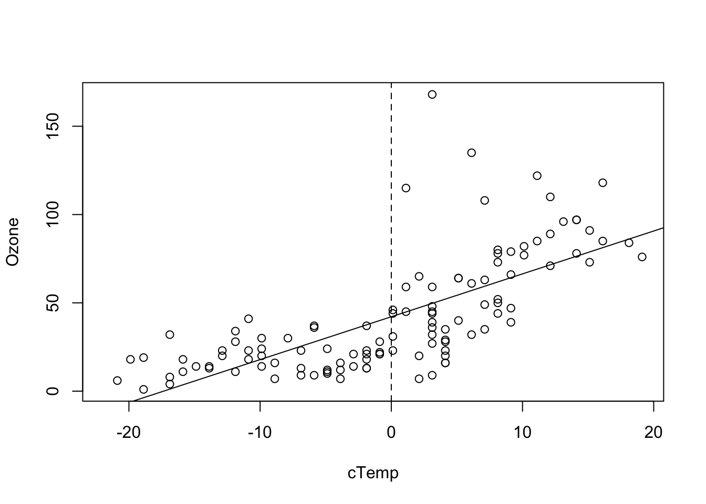
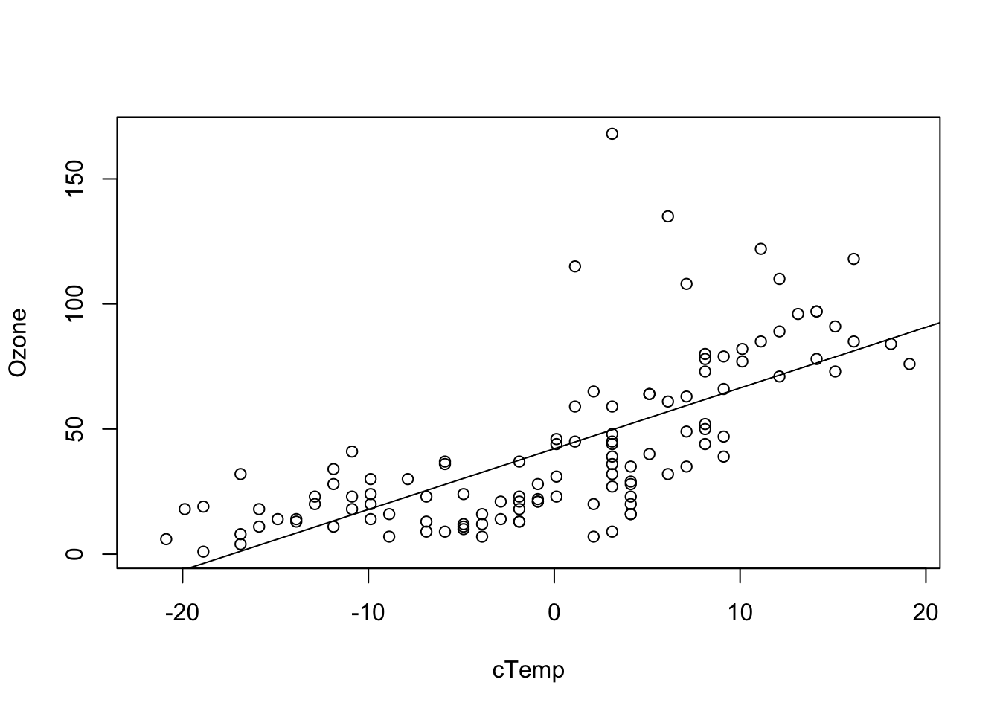
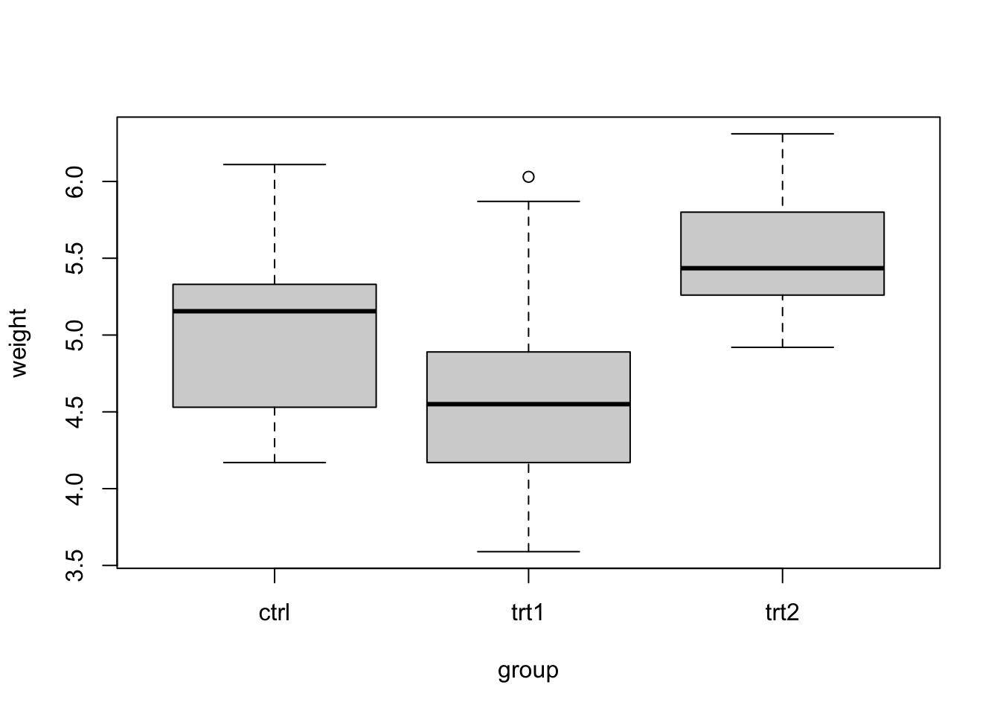
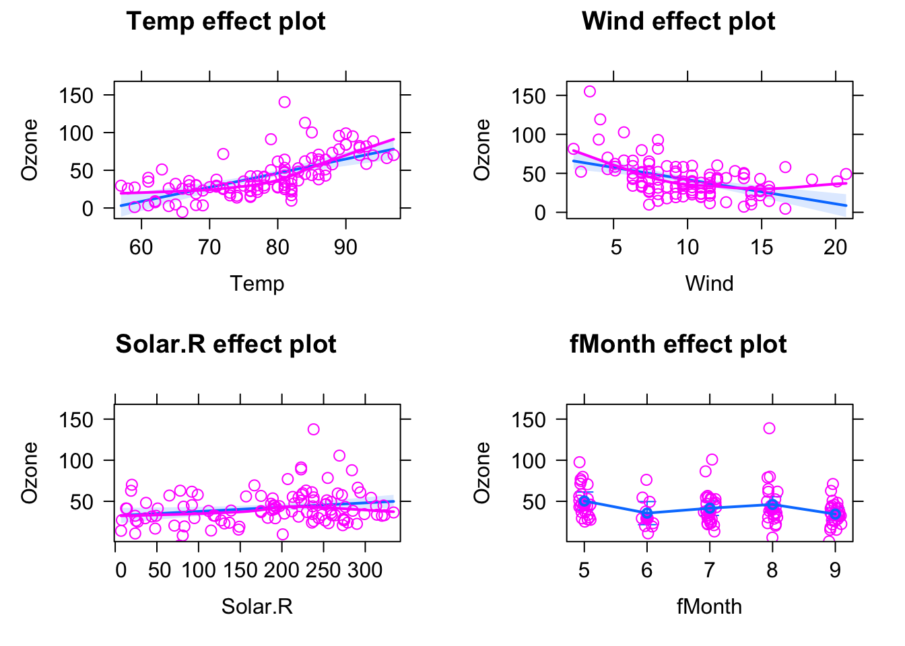
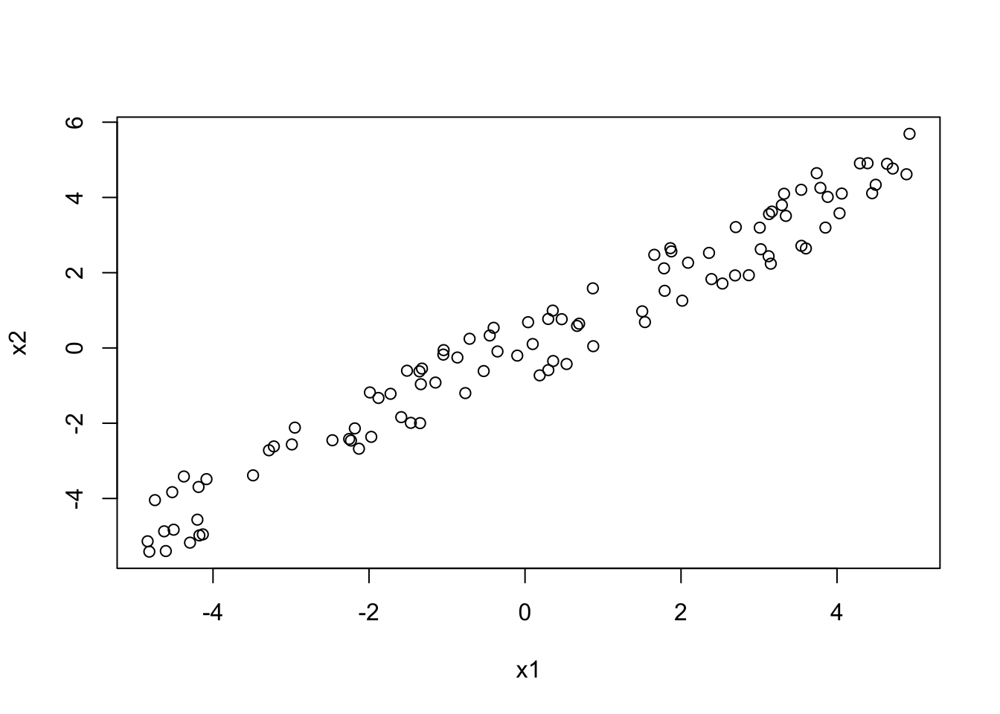
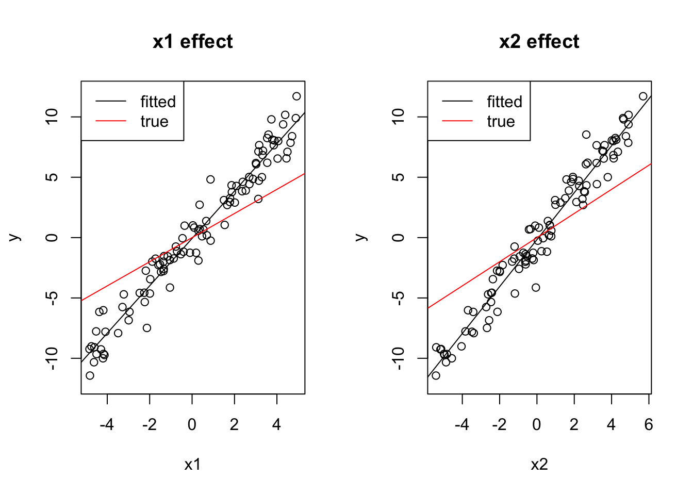

3 Understanding Linear Regression
This chapter is a reminder about the basic regression model functions in R.
Here a warm-up exercise: Fit the regression:
summary(lm(Ozone ~ Wind, data = airquality))And answer / discuss with your partner the following questions: What is the effect of Wind on Ozone? How important is Wind to explain Ozone? Next, run the following regressions:
summary(lm(Ozone ~ Wind + Temp, data = airquality))
summary(lm(Ozone ~ Wind * Temp, data = airquality))Why does the effect of Wind on Ozone change so much as we change the formula? What is the “true” or correct estimate of the effect of Wind on Ozone? At the end of this chapter, you should be able to answer all these questions!
3.1 Simple Linear Regression
OK, after our warm-up, let’s start with the basics. We will again used the data set airquality, which is built-in in R. If you don’t know the data set, have a look at the description via
?airqualityand at the variables via
str(airquality)To get started, let’s say we want to examine the relationship between Ozone and Wind. Let’s visualize this first:
plot(Ozone ~ Wind, data = airquality)
OK, I would say there is some dependency there. To quantify this numerically, you could also run
cor(airquality$Ozone, airquality$Wind, use = "complete.obs")to get the (Pearson) correlation, which is negative: -0.6015465.
What we want to do now is fitting regression models through the data with the lm() function of R. The function name lm is short for “linear model”. However, remember from the basic course: This model is not called linear because we necessarily fit a linear function. It’s called linear because we express the response (in our case Wind) as a polynomial of the predictor(s). That means, the predictors have linear coefficients but they might themselves be for example quadratic or sinus terms. So \(y = \operatorname{f}(x) + \mathcal{N}(0, \sigma)\), where \(\operatorname{f}\) is a polynomial, e.g. \({a}_{0} + {a}_{1} \cdot x + {a}_{2} \cdot {x}^{2}\), and \(\mathcal{N}(0, \sigma)\) means that we assume the data scattering as a normal (Gaussian) distribution with unknown standard deviation \(\sigma\) around \(\operatorname{f}(x)\). The model is called linear because when estimating the unknown parameters (we call them “effects”) of the polynomial, we will see that they are all affecting the predictions linearly, and can thus be solved as a system of linear equations.
3.1.1 Fitting and Interpreting the Regression
For fitting a line through this data, we have 3 options:
- Fit a horizontal line (intercept only).
- Fit only the slope, but assume the line goes through the origin (0, 0).
- Fit slope and intercept.
Option 3 is the most common case, but we will discuss all 3 options here.
Intercept Only Model
The following code fits an intercept only model, meaning that we assume the line is perfectly flat, and we only adjust it’s height (the intercept).
fit = lm(Ozone ~ 1, data = airquality)We can visualize the result via
plot(Ozone ~ Wind, data = airquality)
abline(fit)
and get a summary of the fitted regression coefficients via
summary(fit)##
## Call:
## lm(formula = Ozone ~ 1, data = airquality)
##
## Residuals:
## Min 1Q Median 3Q Max
## -41.13 -24.13 -10.63 21.12 125.87
##
## Coefficients:
## Estimate Std. Error t value Pr(>|t|)
## (Intercept) 42.129 3.063 13.76 <2e-16 ***
## ---
## Signif. codes: 0 '***' 0.001 '**' 0.01 '*' 0.05 '.' 0.1 ' ' 1
##
## Residual standard error: 32.99 on 115 degrees of freedom
## (37 observations deleted due to missingness)We will talk more about this summary later, but for the moment, let’s look only at the coefficients.
This tells us that
- We estimate the mean Ozone (our line) to be at \(42.12 \pm 3.1\) units.
- The value is significantly different from zero (the t-test always tests \({H}_{0}\): “The estimate is zero”).
By the way, the value for the intercept is identical to mean(airquality$Ozone, na.rm = T). This is no accident, as the mean is the maximum likelihood estimation for the mean of the normal distribution.
Slope Only Model
Although rarely sensible, you can also fit a model with just a slope. This only makes sense if you are sure that the line must go through the origin (0, 0) for physical or biological reasons.
fit = lm(Ozone ~ Wind + 0, data = airquality)
summary(fit)
# Alternative for removing the linear term:
fit = lm(Ozone ~ Wind - 1, data = airquality)
summary(fit)In the results, you can see that we estimate a positive slope, in contradiction to our visual assessment that the data seems negatively correlated. This is because we are forcing the regression line to go through the origin (0, 0).
##
## Call:
## lm(formula = Ozone ~ Wind - 1, data = airquality)
##
## Residuals:
## Min 1Q Median 3Q Max
## -55.11 -19.34 -2.45 35.71 157.32
##
## Coefficients:
## Estimate Std. Error t value Pr(>|t|)
## Wind 3.1398 0.3742 8.391 1.4e-13 ***
## ---
## Signif. codes: 0 '***' 0.001 '**' 0.01 '*' 0.05 '.' 0.1 ' ' 1
##
## Residual standard error: 42.25 on 115 degrees of freedom
## (37 observations deleted due to missingness)
## Multiple R-squared: 0.3798, Adjusted R-squared: 0.3744
## F-statistic: 70.41 on 1 and 115 DF, p-value: 1.404e-13plot(Ozone ~ Wind, data = airquality)
abline(fit)Slope and Intercept
The most common case will be a model with slope and intercept which is probably corresponds most with our visual assessment.
fit = lm(Ozone ~ Wind, data = airquality)
plot(Ozone ~ Wind, data = airquality)
abline(fit)
summary(fit)##
## Call:
## lm(formula = Ozone ~ Wind, data = airquality)
##
## Residuals:
## Min 1Q Median 3Q Max
## -51.572 -18.854 -4.868 15.234 90.000
##
## Coefficients:
## Estimate Std. Error t value Pr(>|t|)
## (Intercept) 96.8729 7.2387 13.38 < 2e-16 ***
## Wind -5.5509 0.6904 -8.04 9.27e-13 ***
## ---
## Signif. codes: 0 '***' 0.001 '**' 0.01 '*' 0.05 '.' 0.1 ' ' 1
##
## Residual standard error: 26.47 on 114 degrees of freedom
## (37 observations deleted due to missingness)
## Multiple R-squared: 0.3619, Adjusted R-squared: 0.3563
## F-statistic: 64.64 on 1 and 114 DF, p-value: 9.272e-13This time, we want to look in full at the regression table. Recall that:
- “Call” repeats the regression formula.
- “Residuals” gives you an indication about how far the observed data scatters around the fitted regression line / function.
- The regression table (starting with “Coefficients”) provides the estimated parameters, one row for each fitted parameter. The first column is the estimate, the second (standard error) is the 0.63 confidence interval (for 0.95 confidence interval multiply with 1.96), and the fourth column is the p-value for a two-sided test with \({H}_{0}\): “Estimate is zero”. The t-value is used for calculation of the p-value and can usually be ignored.
- The last section of the summary provides information about the model fit.
- Residual error = Standard deviation of the residuals,
- 114 df = Degrees of freedom = Observed - fitted parameters.
- R-squared \(\left({R}^{2}\right)\) = How much of the signal, respective variance is explained by the model, calculated by \(\displaystyle 1 - \frac{\text{residual variance}}{\text{total variance}}\).
- Adjusted R-squared = Adjusted for model complexity.
- F-test = Test against intercept only model, i.e. is the fitted model significantly better than the intercept only model (most relevant for models with > 1 predictor).
Discussion
What is the meaning of “An effect is not significant”?
Solution
You should NOT say that the effect is zero, or that the null hypothesis has been accepted. Official language is “there is no significant evidence for an effect(p = XXX)”. If we would like to assess what that means, some people do a post-hoc power analysis (which effect size could have been estimated), but better is typically just to discuss the confidence interval, i.e. look at the confidence interval and say: if there is an effect, we are relatively certain that it is smaller than X, given the confidence interval of XYZ.
Discussion
Is an effect with three *** more significant / certain than an effect with one *?
Solution
Many people view it that way, and some even write “highly significant” for *** . It is probably true that we should have a slightly higher confidence in a very small p-value, but strictly speaking, however, there is only significant, or not significant. Interpreting the p-value as a measure of certainty is a slight misinterpretation. Again, if we want to say how certain we are about the effect, it is better to look again at the confidence interval, i.e. the standard error and use this to discuss the precision of the estimate (small confidence interval / standard error = high precision / certainty).
Task
Fit simple (univariate) linear regression models for the other two numeric variables (Temp and Solar.R) and interpret the results with your partner.
Solution
fit = lm(Ozone ~ Temp, data = airquality)
summary(fit)##
## Call:
## lm(formula = Ozone ~ Temp, data = airquality)
##
## Residuals:
## Min 1Q Median 3Q Max
## -40.729 -17.409 -0.587 11.306 118.271
##
## Coefficients:
## Estimate Std. Error t value Pr(>|t|)
## (Intercept) -146.9955 18.2872 -8.038 9.37e-13 ***
## Temp 2.4287 0.2331 10.418 < 2e-16 ***
## ---
## Signif. codes: 0 '***' 0.001 '**' 0.01 '*' 0.05 '.' 0.1 ' ' 1
##
## Residual standard error: 23.71 on 114 degrees of freedom
## (37 observations deleted due to missingness)
## Multiple R-squared: 0.4877, Adjusted R-squared: 0.4832
## F-statistic: 108.5 on 1 and 114 DF, p-value: < 2.2e-16plot(Ozone ~ Temp, data = airquality)
abline(fit)
Temperature seems to have a positive effect of Ozone and this effect is significant. The intercept (value for Ozone at Temp = 0) is negative and also significant. This model explains nearly 50% of the variance of the given data. This holds even for the complexity adjusted \({R}^{2}\) measure. 37 observations have missing data and are omitted. Compared to the model with only an intercept, this model is significantly different.
fit = lm(Ozone ~ Solar.R, data = airquality)
summary(fit)##
## Call:
## lm(formula = Ozone ~ Solar.R, data = airquality)
##
## Residuals:
## Min 1Q Median 3Q Max
## -48.292 -21.361 -8.864 16.373 119.136
##
## Coefficients:
## Estimate Std. Error t value Pr(>|t|)
## (Intercept) 18.59873 6.74790 2.756 0.006856 **
## Solar.R 0.12717 0.03278 3.880 0.000179 ***
## ---
## Signif. codes: 0 '***' 0.001 '**' 0.01 '*' 0.05 '.' 0.1 ' ' 1
##
## Residual standard error: 31.33 on 109 degrees of freedom
## (42 observations deleted due to missingness)
## Multiple R-squared: 0.1213, Adjusted R-squared: 0.1133
## F-statistic: 15.05 on 1 and 109 DF, p-value: 0.0001793plot(Ozone ~ Solar.R, data = airquality)
abline(fit)
Solar.R seems to have a positive effect of Ozone and this effect is significant. The intercept (value for Ozone at Solar.R = 0) is positive and also significant. This model explains slightly more than 10% of the variance of the given data. This holds even for the complexity adjusted \({R}^{2}\) measure. 42 observations have missing data and are omitted. Thus this model has not the power of the previous one. Compared to the model with only an intercept, this model is significantly different.
3.1.2 Centering and Scaling of Predictors
In the last model
fit = lm(Ozone ~ Wind, data = airquality)
summary(fit)we saw an intercept of 96 for the Wind parameter. Per definition, the intercept is the predicted value for \(y\) (Ozone) at \(x\) (Wind) = 0. It’s fine to report this, as long as we are interested in this value. However, there are certain situations where the value at predictor = 0 is not particularly interesting. Let’s look at the regression for Temp, for example:
fit = lm(Ozone ~ Temp, data = airquality)
summary(fit)##
## Call:
## lm(formula = Ozone ~ Temp, data = airquality)
##
## Residuals:
## Min 1Q Median 3Q Max
## -40.729 -17.409 -0.587 11.306 118.271
##
## Coefficients:
## Estimate Std. Error t value Pr(>|t|)
## (Intercept) -146.9955 18.2872 -8.038 9.37e-13 ***
## Temp 2.4287 0.2331 10.418 < 2e-16 ***
## ---
## Signif. codes: 0 '***' 0.001 '**' 0.01 '*' 0.05 '.' 0.1 ' ' 1
##
## Residual standard error: 23.71 on 114 degrees of freedom
## (37 observations deleted due to missingness)
## Multiple R-squared: 0.4877, Adjusted R-squared: 0.4832
## F-statistic: 108.5 on 1 and 114 DF, p-value: < 2.2e-16Here, the intercept is -146, which doesn’t make much sense for an ozone concentration, which should be positive. We can see the reason when we plot the results:
plot(Ozone ~ Temp, data = airquality, xlim = c(-10, 110), ylim = c(-200, 170))
abline(fit)
abline(h = 0, lty = 2)
abline(v = 0, lty = 2)
That shows us that the value 0 is far outside of the set of our observed values for Temp, which is measured in Fahrenheit. Thus, we are extrapolating the Ozone far beyond the observed data. What we can do to avoid this is to simply re-define the x-Axis, by subtracting the mean, which is called centering:
airquality$cTemp = airquality$Temp - mean(airquality$Temp)Alternatively, you can center with the build-in R command scale
airquality$cTemp = scale(airquality$Temp, center = T, scale = F)Fitting the model with the centered variable
fit = lm(Ozone ~ cTemp, data = airquality)
summary(fit)##
## Call:
## lm(formula = Ozone ~ cTemp, data = airquality)
##
## Residuals:
## Min 1Q Median 3Q Max
## -40.729 -17.409 -0.587 11.306 118.271
##
## Coefficients:
## Estimate Std. Error t value Pr(>|t|)
## (Intercept) 42.1576 2.2018 19.15 <2e-16 ***
## cTemp 2.4287 0.2331 10.42 <2e-16 ***
## ---
## Signif. codes: 0 '***' 0.001 '**' 0.01 '*' 0.05 '.' 0.1 ' ' 1
##
## Residual standard error: 23.71 on 114 degrees of freedom
## (37 observations deleted due to missingness)
## Multiple R-squared: 0.4877, Adjusted R-squared: 0.4832
## F-statistic: 108.5 on 1 and 114 DF, p-value: < 2.2e-16produces a more interpretable value for the intercept. We can see this also visual if we plot the results, i.e. the Ozone concentration at the mean observed temperature.
plot(Ozone ~ cTemp, data = airquality)
abline(fit)
abline(v = 0, lty = 2)
When we center, the intercept of the centered variable can be interpreted as the Ozone concentrate at the mean temperature. This value will also typically be very similar to the grand mean mean(airquality$Ozone).
Another very common transformation is to divide the x axis by its standard deviation. This is called scaling.
airquality$sTemp = airquality$Temp / sd(airquality$Temp)Fitting the model with the scaled variable mainly changes the estimate of the regression slope
fit = lm(Ozone ~ sTemp, data = airquality)
summary(fit)##
## Call:
## lm(formula = Ozone ~ sTemp, data = airquality)
##
## Residuals:
## Min 1Q Median 3Q Max
## -40.729 -17.409 -0.587 11.306 118.271
##
## Coefficients:
## Estimate Std. Error t value Pr(>|t|)
## (Intercept) -146.995 18.287 -8.038 9.37e-13 ***
## sTemp 22.988 2.207 10.418 < 2e-16 ***
## ---
## Signif. codes: 0 '***' 0.001 '**' 0.01 '*' 0.05 '.' 0.1 ' ' 1
##
## Residual standard error: 23.71 on 114 degrees of freedom
## (37 observations deleted due to missingness)
## Multiple R-squared: 0.4877, Adjusted R-squared: 0.4832
## F-statistic: 108.5 on 1 and 114 DF, p-value: < 2.2e-16which is now around 23 (before it was 2.4). The difference in interpretation is the following: for the unscaled variable, we estimate the effect of 1 unit change of temperature on Ozone. For the scaled variable, we estimate the effect of a temperature change of 1 sd of the temperature values, so we can interpret this as an Ozone effect scaled to typical temperature differences in the data.
Task
Have a look at the results below, where we apply linear transformations on a variable (linear = either subtract / add something to the variable, or multiply / divide the variable by a certain value). How does the transformation change the regression’s estimates?
Solution
Original model
fit = lm(Ozone ~ Temp, data = airquality)
summary(fit)##
## Call:
## lm(formula = Ozone ~ Temp, data = airquality)
##
## Residuals:
## Min 1Q Median 3Q Max
## -40.729 -17.409 -0.587 11.306 118.271
##
## Coefficients:
## Estimate Std. Error t value Pr(>|t|)
## (Intercept) -146.9955 18.2872 -8.038 9.37e-13 ***
## Temp 2.4287 0.2331 10.418 < 2e-16 ***
## ---
## Signif. codes: 0 '***' 0.001 '**' 0.01 '*' 0.05 '.' 0.1 ' ' 1
##
## Residual standard error: 23.71 on 114 degrees of freedom
## (37 observations deleted due to missingness)
## Multiple R-squared: 0.4877, Adjusted R-squared: 0.4832
## F-statistic: 108.5 on 1 and 114 DF, p-value: < 2.2e-16plot(Ozone ~ Temp, data = airquality, main = "Standard")
abline(fit)
Additive transformation change the intercept value, all p-values, CIs stay the same (except for the intercept, as the test changes)
airquality$TempAdd = airquality$Temp + 10
fit = lm(Ozone ~ TempAdd, data = airquality)
summary(fit)##
## Call:
## lm(formula = Ozone ~ TempAdd, data = airquality)
##
## Residuals:
## Min 1Q Median 3Q Max
## -40.729 -17.409 -0.587 11.306 118.271
##
## Coefficients:
## Estimate Std. Error t value Pr(>|t|)
## (Intercept) -171.2825 20.6034 -8.313 2.22e-13 ***
## TempAdd 2.4287 0.2331 10.418 < 2e-16 ***
## ---
## Signif. codes: 0 '***' 0.001 '**' 0.01 '*' 0.05 '.' 0.1 ' ' 1
##
## Residual standard error: 23.71 on 114 degrees of freedom
## (37 observations deleted due to missingness)
## Multiple R-squared: 0.4877, Adjusted R-squared: 0.4832
## F-statistic: 108.5 on 1 and 114 DF, p-value: < 2.2e-16plot(Ozone ~ TempAdd, data = airquality, main = "Addition + 10")
abline(fit)Multiplicative transformations change the slope value, p-values and relative CIs for intercept and slope stay the same.
airquality$TempMult = airquality$Temp * 10
fit = lm(Ozone ~ TempMult, data = airquality)
summary(fit)##
## Call:
## lm(formula = Ozone ~ TempMult, data = airquality)
##
## Residuals:
## Min 1Q Median 3Q Max
## -40.729 -17.409 -0.587 11.306 118.271
##
## Coefficients:
## Estimate Std. Error t value Pr(>|t|)
## (Intercept) -146.99549 18.28717 -8.038 9.37e-13 ***
## TempMult 0.24287 0.02331 10.418 < 2e-16 ***
## ---
## Signif. codes: 0 '***' 0.001 '**' 0.01 '*' 0.05 '.' 0.1 ' ' 1
##
## Residual standard error: 23.71 on 114 degrees of freedom
## (37 observations deleted due to missingness)
## Multiple R-squared: 0.4877, Adjusted R-squared: 0.4832
## F-statistic: 108.5 on 1 and 114 DF, p-value: < 2.2e-16plot(Ozone ~ TempMult, data = airquality, main = "Multiplication * 10")
abline(fit)
Combinations of both have both effects together
airquality$TempMix = airquality$Temp * 0.1 - 10
fit = lm(Ozone ~ TempMix, data = airquality)
summary(fit)##
## Call:
## lm(formula = Ozone ~ TempMix, data = airquality)
##
## Residuals:
## Min 1Q Median 3Q Max
## -40.729 -17.409 -0.587 11.306 118.271
##
## Coefficients:
## Estimate Std. Error t value Pr(>|t|)
## (Intercept) 95.875 5.609 17.09 <2e-16 ***
## TempMix 24.287 2.331 10.42 <2e-16 ***
## ---
## Signif. codes: 0 '***' 0.001 '**' 0.01 '*' 0.05 '.' 0.1 ' ' 1
##
## Residual standard error: 23.71 on 114 degrees of freedom
## (37 observations deleted due to missingness)
## Multiple R-squared: 0.4877, Adjusted R-squared: 0.4832
## F-statistic: 108.5 on 1 and 114 DF, p-value: < 2.2e-16plot(Ozone ~ TempMix, data = airquality, main = "Mixed")
abline(fit)Pro Task
Look at the centered and uncentered regression models
fit1 = lm(Ozone ~ Temp, data = airquality)
summary(fit1)##
## Call:
## lm(formula = Ozone ~ Temp, data = airquality)
##
## Residuals:
## Min 1Q Median 3Q Max
## -40.729 -17.409 -0.587 11.306 118.271
##
## Coefficients:
## Estimate Std. Error t value Pr(>|t|)
## (Intercept) -146.9955 18.2872 -8.038 9.37e-13 ***
## Temp 2.4287 0.2331 10.418 < 2e-16 ***
## ---
## Signif. codes: 0 '***' 0.001 '**' 0.01 '*' 0.05 '.' 0.1 ' ' 1
##
## Residual standard error: 23.71 on 114 degrees of freedom
## (37 observations deleted due to missingness)
## Multiple R-squared: 0.4877, Adjusted R-squared: 0.4832
## F-statistic: 108.5 on 1 and 114 DF, p-value: < 2.2e-16fit2 = lm(Ozone ~ cTemp, data = airquality)
summary(fit2)##
## Call:
## lm(formula = Ozone ~ cTemp, data = airquality)
##
## Residuals:
## Min 1Q Median 3Q Max
## -40.729 -17.409 -0.587 11.306 118.271
##
## Coefficients:
## Estimate Std. Error t value Pr(>|t|)
## (Intercept) 42.1576 2.2018 19.15 <2e-16 ***
## cTemp 2.4287 0.2331 10.42 <2e-16 ***
## ---
## Signif. codes: 0 '***' 0.001 '**' 0.01 '*' 0.05 '.' 0.1 ' ' 1
##
## Residual standard error: 23.71 on 114 degrees of freedom
## (37 observations deleted due to missingness)
## Multiple R-squared: 0.4877, Adjusted R-squared: 0.4832
## F-statistic: 108.5 on 1 and 114 DF, p-value: < 2.2e-16Why do the confidence intervals (Std. Error) on the intercept in the two models (centered and uncentered) differ? To get an idea, look at the effect plots (library effects) for the model. You can also run compare vcov(fit) (calculates variance-covariance matrix) for both models.
Solution
library(effects)
preList = list(Temp = seq(-10, 110, 1))
plot(effect("Temp", fit1, xlevels = preList), main = "Standard")
preList = list(cTemp = seq(-10, 110, 1))
plot(effect("cTemp", fit2, xlevels = preList), main = "Centered")vcov(fit1)## (Intercept) Temp
## (Intercept) 334.420718 -4.23230774
## Temp -4.232308 0.05435046vcov(fit2)## (Intercept) cTemp
## (Intercept) 4.848002921 0.000633905
## cTemp 0.000633905 0.054350459Solution: both centered and uncentered inherently fit the same model, but uncertainty of the intercept for the uncentered model is higher, because this is wide outside the data area, thus we are extrapolating.
Task
3.1.3 Residual Checks
So far, we fitted a regression model, but we didn’t check if the model assumptions fit to the data. Actually, in quite a few examples above we actually saw quite bad fits. For example, let’s take the slope only model lm(Ozone ~ Wind - 1, data = airquality), where we assumed that the regression line should go through (0, 0). Maybe we have good reasons to think that this should be the case biologically, but our data seem to suggest a different behavior.
Wht about the slope and intercept model? Also here, if we plot the predicitons, it seems the model systematically underpredicts Ozone for low Wind, and overpredicts for high Wind.
fit = lm(Ozone ~ cTemp, data = airquality)
plot(Ozone ~ cTemp, data = airquality)
abline(fit)
We can see this a bit better if we use the effects.{R} package, which we will use from now on for doing result plots for regression models.
library(effects)
plot(allEffects(fit, partial.residuals = T))## Warning in Analyze.model(focal.predictors, mod, xlevels, default.levels, : the
## predictor cTemp is a one-column matrix that was converted to a vectorHere, the blue line is the fitted model (with confidence interval in light blue), purple circles are the data, and the purple line is a nonparametric fit to the data. What we see highlighted here is that the data seems to follow a completely different curve than the fitted model.
The conclusion here would be: The model we are fitting does not fit to the data, we should not interpret its outputs, but rather say that we reject it, it’s the wrong model, we have to search for a more appropriate description of the data.
Let’s look at the same plot for the following model:
fit = lm(Ozone ~ Wind + Temp, data = airquality)
plot(allEffects(fit, partial.residuals = T))
This looks already better, but there seems to be still a bit of a pattern regarding the scattering of the observed data around the regression line. We can get the difference between model and observations via residuals(fit), and we could plot them against the model predictions (which can be obtained via the predict function) via
plot(residuals(fit) ~ predict(fit))
abline(h = 0)Remember: The model assumes that the data scatters with a homogenous normal distribution around the regression predictions (which is the 0 line here). What seems to happen, however, is that the scatter increases towards higher predictions, and there also seems to be a tendency towards underprediction at the high and low end.
To better analyse these residuals (and potential problems), R offers a function for residual plots. It produces 4 plots. I think it’s most convenient plotting them all into one figure, via
par(mfrow = c(2, 2))which produces a figure with 2 x 2 = 4 panels.
par(mfrow = c(2, 2))
plot(fit)Interpretation:
- Residuals vs Fitted: Shows misfits and wrong functional form. Scattering should be uniformly distributed.
- Normal Q-Q: Checks if residuals follow an overall normal distribution. Bullets should lie on the line in the middle of the plot and may scatter a little bit at the ends.
- Scale - Location: Checks for heteroskedasticity. Does the variance change with predictions/changing values? Scattering should be uniformly distributed.
- Residuals vs Leverage: How much impact do outliers have on the regression? Data points with high leverage should not have high residuals and vice versa. Bad points lie in the upper right or in the lower right corner. This is measured via the Cook’s distance. Distances higher than 0.5 indicate candidates for relevant outliers or strange effects.
Important: Residuals are always getting better for more complex models. They should therefore NOT solely be used for model selection. Select your model structure in a different way, residual checks are just for doing a final check to see if the fitted model makes sense.
Generally: If you want to do model selection, control for model complexity. The more complex the model, the higher the cost related to the increase of accuracy.
Task
Modify the formula to get (as far as possible) an acceptable fit to the data. Consider the following options:
fit = lm(Ozone ~ Wind, data = airquality) # Intercept + slope.
fit = lm(Ozone ~ 1, data = airquality) # Only intercept.
fit = lm(Ozone ~ Wind - 1 , data = airquality) # Only slope.
fit = lm(Ozone ~ log(Wind), data = airquality) # Predictor variables can be transformed.
fit = lm(Ozone^0.5 ~ Wind, data = airquality) # Output variables can also be transformed.
fit = lm(Ozone ~ Wind + I(Wind^2), data = airquality) # Mathematical functions with I() command.
library(MASS)
fit = lm(Ozone ~ Wind, data = airquality)
# Calculates optimal transformation for Ozone^lambda to achieve residuals as normally distributed as possible.
boxcox(fit)Annotation: In the picture above, you can see, that the 95% confidence interval of the best \(\lambda\) lies approximately in \([0.15, 0.5]\).
Solution
Possible solution, adding a quadratic predictor and chosing a power of 0.35 transformation based on the boxcox function:
fit1 = lm(Ozone^0.35 ~ Wind + I(Wind^2), data = airquality)
plot(allEffects(fit1, partial.residuals = T), selection = 1)
You could get even better fit by adding more and more predictors, as we will discuss on the section on model selection, this model probably overfits:
fit2 = lm(Ozone^0.35 ~ Wind + I(Wind^2) + I(Wind^3) + I(Wind^4) + I(Wind^5) +
I(Wind^6) + I(Wind^7) + I(Wind^8), data = airquality)
plot(allEffects(fit2, partial.residuals = T), selection = 1)
We can see this by looking at common model selection indicators (again, more in the section on model selection). AIC comparison (lower = better)
AIC(fit1)## [1] 270.2059AIC(fit2) ## [1] 274.7512Likelihood ratio test (is there evidence for the more complex model?)
anova(fit1, fit2)## Analysis of Variance Table
##
## Model 1: Ozone^0.35 ~ Wind + I(Wind^2)
## Model 2: Ozone^0.35 ~ Wind + I(Wind^2) + I(Wind^3) + I(Wind^4) + I(Wind^5) +
## I(Wind^6) + I(Wind^7) + I(Wind^8)
## Res.Df RSS Df Sum of Sq F Pr(>F)
## 1 113 65.112
## 2 107 61.059 6 4.0528 1.1837 0.32053.1.4 Categorical Predictors
The lm() function can handle both numerical and categorical variables. To understand what happens if the predictor is categorical, we’ll use another data set here, PlantGrowth (type ?PlantGrowth or F1 help if you want details). We visualize the data via:
boxplot(weight ~ group, data = PlantGrowth)
A basic lm()
Let’s fit an lm() now with the categorical explanatory variable group. They syntax is the same as before:
fit = lm(weight ~ group, data = PlantGrowth)
summary(fit)##
## Call:
## lm(formula = weight ~ group, data = PlantGrowth)
##
## Residuals:
## Min 1Q Median 3Q Max
## -1.0710 -0.4180 -0.0060 0.2627 1.3690
##
## Coefficients:
## Estimate Std. Error t value Pr(>|t|)
## (Intercept) 5.0320 0.1971 25.527 <2e-16 ***
## grouptrt1 -0.3710 0.2788 -1.331 0.1944
## grouptrt2 0.4940 0.2788 1.772 0.0877 .
## ---
## Signif. codes: 0 '***' 0.001 '**' 0.01 '*' 0.05 '.' 0.1 ' ' 1
##
## Residual standard error: 0.6234 on 27 degrees of freedom
## Multiple R-squared: 0.2641, Adjusted R-squared: 0.2096
## F-statistic: 4.846 on 2 and 27 DF, p-value: 0.01591But the interpretation of the results often leads to confusion. Let’s look at the results of summary(fit).
Where did the group ctrl go? The answer is there is a short, and longer answer to this. Let’s first give the short one: ctrl is the intercept, and the other predictors depict the difference between ctrl and the respective levels. So, we could say that ctrl is a kind of “reference”, encoded by the intercept, and we test for a difference of the other levels against this reference.
Re-ordering the levels
If you want to change which factor level is the reference, you can use:
PlantGrowth$group2 = relevel(PlantGrowth$group, "trt1")Now, we plot
boxplot(weight ~ group2, data = PlantGrowth)We see that trt1 is the first level (you can also see this if checking levels() or str() for the factor). Let’s fit the model:
fit = lm(weight ~ group2, data = PlantGrowth)
summary(fit)##
## Call:
## lm(formula = weight ~ group2, data = PlantGrowth)
##
## Residuals:
## Min 1Q Median 3Q Max
## -1.0710 -0.4180 -0.0060 0.2627 1.3690
##
## Coefficients:
## Estimate Std. Error t value Pr(>|t|)
## (Intercept) 4.6610 0.1971 23.644 < 2e-16 ***
## group2ctrl 0.3710 0.2788 1.331 0.19439
## group2trt2 0.8650 0.2788 3.103 0.00446 **
## ---
## Signif. codes: 0 '***' 0.001 '**' 0.01 '*' 0.05 '.' 0.1 ' ' 1
##
## Residual standard error: 0.6234 on 27 degrees of freedom
## Multiple R-squared: 0.2641, Adjusted R-squared: 0.2096
## F-statistic: 4.846 on 2 and 27 DF, p-value: 0.01591Weird, now suddenly we have a significant difference between the groups. Wasn’t the group difference not significant before? What’s the difference?
The answer is that we are still fitting the identical regression model, and if you would do a plot(allEffects(fit)) for the first and second model, it would look the same. However, as the p-values in the regression table always compare against the reference, we now do a comparison (ctr1 vs ctr2) that we didn’t do before, and this comparison is significant.
So, if the ordering influences what levels are compared (technically, we call this contrasts, see below), how can we deal with the problem that the order influences which factors are compared. There are three answers for this:
First, in many cases, the scientific question / experimental design determines which factor level should be first. In this case, the original reference was ctrl. This clearly stands for control. So, we have a special treatment here (control), and we are probably interested in the contrast between control and the treatments, but not between the different treatments. In this case, we are probably fine.
ANOVA (Analysis of Variance)
Second, there is a another test that is commonly performed in this case, the ANOVA. We can run this via
anov = aov(fit)
summary(anov)## Df Sum Sq Mean Sq F value Pr(>F)
## group2 2 3.766 1.8832 4.846 0.0159 *
## Residuals 27 10.492 0.3886
## ---
## Signif. codes: 0 '***' 0.001 '**' 0.01 '*' 0.05 '.' 0.1 ' ' 1And the result is
## Df Sum Sq Mean Sq F value Pr(>F)
## group2 2 3.766 1.8832 4.846 0.0159 *
## Residuals 27 10.492 0.3886
## ---
## Signif. codes: 0 '***' 0.001 '**' 0.01 '*' 0.05 '.' 0.1 ' ' 1To interpret this, recall that in a nutshell, the ANOVA starts with a base model (in this case intercept only) and adds the variable group. It then measures:
- How much the model improves in terms of \({R}^{2}\) (this is in the column Sum Sq).
- If this increase of model fit is significant.
In this case, we can conclude that the variable group (3 levels) significantly improves model fit, i.e. the group seems to have an overall effect, even though the individual contrasts in the original model where not significant.
Post-Hoc Tests
Third, if there is no clear reference level, and the ANOVA confirms that the factor has an effect, we may want to compute p-values for all possible combinations of factor levels. This is done via the so-called post-hoc tests:
TukeyHSD(anov)The result is:
## Tukey multiple comparisons of means
## 95% family-wise confidence level
##
## Fit: aov(formula = fit)
##
## $group2
## diff lwr upr p adj
## ctrl-trt1 0.371 -0.3202161 1.062216 0.3908711
## trt2-trt1 0.865 0.1737839 1.556216 0.0120064
## trt2-ctrl 0.494 -0.1972161 1.185216 0.1979960This highlights, as before, a significant difference between trt1 and trt2. It is common to visualize the results of the post-hoc tests with the so-called Compact Letter Display (cld). This doesn’t work with the base TukeyHSD function, so we will use the multcomp.{R} pacakge:
library(multcomp)
fit = lm(weight ~ group, data = PlantGrowth)
tuk = glht(fit, linfct = mcp(group = "Tukey"))
summary(tuk) # Standard display.##
## Simultaneous Tests for General Linear Hypotheses
##
## Multiple Comparisons of Means: Tukey Contrasts
##
##
## Fit: lm(formula = weight ~ group, data = PlantGrowth)
##
## Linear Hypotheses:
## Estimate Std. Error t value Pr(>|t|)
## trt1 - ctrl == 0 -0.3710 0.2788 -1.331 0.391
## trt2 - ctrl == 0 0.4940 0.2788 1.772 0.198
## trt2 - trt1 == 0 0.8650 0.2788 3.103 0.012 *
## ---
## Signif. codes: 0 '***' 0.001 '**' 0.01 '*' 0.05 '.' 0.1 ' ' 1
## (Adjusted p values reported -- single-step method)tuk.cld = cld(tuk) # Letter-based display.
plot(tuk.cld)The cld gives a new letter for each group of factor levels that are statistically undistinguishable. You can see the output via tuk.cld, here I only show the plot:

Task: Categorical analysis for the airquality data set
The airquality data set contains a categorical predictor “month”, which, however, is wrongly coded as a numeric value. We can correct this by doing
airquality$fMonth = factor(airquality$Month)Execute this code and fit a regression for fMonth!
Solution
Advanced topic: Changing the contrasts
Before, I said that there is a long and short answer to the interpretation of the regression coefficients. Now here is the long answer: If you have a categorical predictor with > 2 levels, there are several ways to set up the model to fit those levels. Maybe the easiest idea would be to fit a mean per level. You can actually tell R to do this via
fit = lm(weight ~ 0 + group, data = PlantGrowth)If we look at the output, we see that now we simply get the mean of each group (level):
##
## Call:
## lm(formula = weight ~ 0 + group, data = PlantGrowth)
##
## Residuals:
## Min 1Q Median 3Q Max
## -1.0710 -0.4180 -0.0060 0.2627 1.3690
##
## Coefficients:
## Estimate Std. Error t value Pr(>|t|)
## groupctrl 5.0320 0.1971 25.53 <2e-16 ***
## grouptrt1 4.6610 0.1971 23.64 <2e-16 ***
## grouptrt2 5.5260 0.1971 28.03 <2e-16 ***
## ---
## Signif. codes: 0 '***' 0.001 '**' 0.01 '*' 0.05 '.' 0.1 ' ' 1
##
## Residual standard error: 0.6234 on 27 degrees of freedom
## Multiple R-squared: 0.9867, Adjusted R-squared: 0.9852
## F-statistic: 665.5 on 3 and 27 DF, p-value: < 2.2e-16Why does R not do that by default? Because now, we see the comparison of each group against zero in the p-values. In some cases, this can be interesting, but in most cases where we have a control and treatment and are interested in the difference between treatment and control, this is not informative. Therefore, R uses the so-called treatment contrasts, which is what we had before.
There are actually a number of further options for specifying contrasts. You can tell R by hand how the levels should be compared or use some of the pre-defined contrasts. Here is an example:
PlantGrowth$group3 = PlantGrowth$group
contrasts(PlantGrowth$group3) = contr.helmert
fit = lm(weight ~ group3, data = PlantGrowth)
summary(fit)##
## Call:
## lm(formula = weight ~ group3, data = PlantGrowth)
##
## Residuals:
## Min 1Q Median 3Q Max
## -1.0710 -0.4180 -0.0060 0.2627 1.3690
##
## Coefficients:
## Estimate Std. Error t value Pr(>|t|)
## (Intercept) 5.07300 0.11381 44.573 < 2e-16 ***
## group31 -0.18550 0.13939 -1.331 0.19439
## group32 0.22650 0.08048 2.814 0.00901 **
## ---
## Signif. codes: 0 '***' 0.001 '**' 0.01 '*' 0.05 '.' 0.1 ' ' 1
##
## Residual standard error: 0.6234 on 27 degrees of freedom
## Multiple R-squared: 0.2641, Adjusted R-squared: 0.2096
## F-statistic: 4.846 on 2 and 27 DF, p-value: 0.01591What we are using here is Helmert contrasts, which contrast the second level with the first, the third with the average of the first two, and so on. Which contrasts make most sense depends on the question. For more details, see here:
https://besjournals.onlinelibrary.wiley.com/doi/epdf/10.1111/j.2041-210X.2010.00012.x.
3.1.5 Exercise: Global Plant Trait Analysis
Look at the plantHeight dataset in Ecodata. Let’s assume we want to analyze whether height of plant species from around the world depends on temperature at the location of occurrence. Note that “loght” = log(height).
library(EcoData)
model = lm(loght ~ temp, data = plantHeight)
summary(model)##
## Call:
## lm(formula = loght ~ temp, data = plantHeight)
##
## Residuals:
## Min 1Q Median 3Q Max
## -1.97903 -0.42804 -0.00918 0.43200 1.79893
##
## Coefficients:
## Estimate Std. Error t value Pr(>|t|)
## (Intercept) -0.225665 0.103776 -2.175 0.031 *
## temp 0.042414 0.005593 7.583 1.87e-12 ***
## ---
## Signif. codes: 0 '***' 0.001 '**' 0.01 '*' 0.05 '.' 0.1 ' ' 1
##
## Residual standard error: 0.6848 on 176 degrees of freedom
## Multiple R-squared: 0.2463, Adjusted R-squared: 0.242
## F-statistic: 57.5 on 1 and 176 DF, p-value: 1.868e-12The model suggests a significant global trend of plant height increasing with temperature.
Tasks
- Perform residual checks and modify the model if you think it is necessary. Does the effect still hold?
- A concern regarding this analysis is that species are not fully independent. E.g., the plant family of Ericaceae, comprising many tiny dwarf shrubs, could have evolved in colder regions by chance. Is the signal still there if we look at families, rather than species? For that, try fitting the regression for the mean per family. Hint: you could use the
aggregate()function to get means per family. - The data set also includes a categorical variable “growthform”. Test if growthform has an effect on the plant height.
Solution
1.
par(mfrow = c(2, 2))
plot(model)Looks OK!
2.
aggDat = aggregate(. ~ Family,
data = plantHeight[, c(4, 7, 14)], FUN = mean)
model2 = lm(loght ~ temp, data = aggDat)
summary(model2)##
## Call:
## lm(formula = loght ~ temp, data = aggDat)
##
## Residuals:
## Min 1Q Median 3Q Max
## -1.16556 -0.38220 0.02092 0.26734 1.38896
##
## Coefficients:
## Estimate Std. Error t value Pr(>|t|)
## (Intercept) -0.27817 0.14910 -1.866 0.0665 .
## temp 0.04884 0.00781 6.254 3.35e-08 ***
## ---
## Signif. codes: 0 '***' 0.001 '**' 0.01 '*' 0.05 '.' 0.1 ' ' 1
##
## Residual standard error: 0.5195 on 66 degrees of freedom
## Multiple R-squared: 0.3721, Adjusted R-squared: 0.3626
## F-statistic: 39.12 on 1 and 66 DF, p-value: 3.349e-08summary(aov(model2))## Df Sum Sq Mean Sq F value Pr(>F)
## temp 1 10.56 10.56 39.12 3.35e-08 ***
## Residuals 66 17.81 0.27
## ---
## Signif. codes: 0 '***' 0.001 '**' 0.01 '*' 0.05 '.' 0.1 ' ' 1Yes, there is still an effect
3.
model3 = lm(loght + temp ~ growthform, data = plantHeight)
summary(model3)##
## Call:
## lm(formula = loght + temp ~ growthform, data = plantHeight)
##
## Residuals:
## Min 1Q Median 3Q Max
## -25.973 -4.362 1.440 5.811 16.561
##
## Coefficients:
## Estimate Std. Error t value Pr(>|t|)
## (Intercept) 13.75527 8.62265 1.595 0.113
## growthformHerb -2.71491 8.72008 -0.311 0.756
## growthformHerb/Shrub 3.92082 12.19427 0.322 0.748
## growthformShrub 0.02093 8.71019 0.002 0.998
## growthformShrub/Tree 11.46166 8.97474 1.277 0.203
## growthformTree 6.88269 8.69304 0.792 0.430
##
## Residual standard error: 8.623 on 162 degrees of freedom
## (10 observations deleted due to missingness)
## Multiple R-squared: 0.232, Adjusted R-squared: 0.2083
## F-statistic: 9.787 on 5 and 162 DF, p-value: 3.451e-08summary(aov(model3))## Df Sum Sq Mean Sq F value Pr(>F)
## growthform 5 3638 727.7 9.787 3.45e-08 ***
## Residuals 162 12045 74.4
## ---
## Signif. codes: 0 '***' 0.001 '**' 0.01 '*' 0.05 '.' 0.1 ' ' 1
## 10 observations deleted due to missingnessThere is also an effect of growth form. Note that the comparisons are against the growth form fern (intercept), which has only one observation, so it may make sense to re-order the factor in the regression so that you compare, e.g., against herbs (will yield more significant comparisons).
3.2 Multiple Regression
Multiple (linear) regression means that we consider more than 1 predictor in the same model. The syntax is very easy: Just add your predictors (numerical or categorical) to your regression formula, as in the following example for the airquality dataset. To be able to also add a factor, I created a new variable fMonth to have month as a factor (categorical):
airquality$fMonth = factor(airquality$Month)
fit = lm(Ozone ~ Temp + Wind + Solar.R + fMonth, data = airquality)The resulting regression table looks already a bit intimidating, but in principle everything is interpreted as before:
##
## Call:
## lm(formula = Ozone ~ Temp + Wind + Solar.R + fMonth, data = airquality)
##
## Residuals:
## Min 1Q Median 3Q Max
## -40.344 -13.495 -3.165 10.399 92.689
##
## Coefficients:
## Estimate Std. Error t value Pr(>|t|)
## (Intercept) -74.23481 26.10184 -2.844 0.00537 **
## Temp 1.87511 0.34073 5.503 2.74e-07 ***
## Wind -3.10872 0.66009 -4.710 7.78e-06 ***
## Solar.R 0.05222 0.02367 2.206 0.02957 *
## fMonth6 -14.75895 9.12269 -1.618 0.10876
## fMonth7 -8.74861 7.82906 -1.117 0.26640
## fMonth8 -4.19654 8.14693 -0.515 0.60758
## fMonth9 -15.96728 6.65561 -2.399 0.01823 *
## ---
## Signif. codes: 0 '***' 0.001 '**' 0.01 '*' 0.05 '.' 0.1 ' ' 1
##
## Residual standard error: 20.72 on 103 degrees of freedom
## (42 observations deleted due to missingness)
## Multiple R-squared: 0.6369, Adjusted R-squared: 0.6122
## F-statistic: 25.81 on 7 and 103 DF, p-value: < 2.2e-16Luckily, we also have the effect plots to make sense of this:
plot(allEffects(fit, partial.residuals = T) )
Multiple regression != A lot of univariate regressions
A common misunderstanding is that the above regression simply amounts to 4 independent univariate regressions. Let’s look at the model
fit = lm(Ozone ~ Wind , data = airquality)
summary(fit)##
## Call:
## lm(formula = Ozone ~ Wind, data = airquality)
##
## Residuals:
## Min 1Q Median 3Q Max
## -51.572 -18.854 -4.868 15.234 90.000
##
## Coefficients:
## Estimate Std. Error t value Pr(>|t|)
## (Intercept) 96.8729 7.2387 13.38 < 2e-16 ***
## Wind -5.5509 0.6904 -8.04 9.27e-13 ***
## ---
## Signif. codes: 0 '***' 0.001 '**' 0.01 '*' 0.05 '.' 0.1 ' ' 1
##
## Residual standard error: 26.47 on 114 degrees of freedom
## (37 observations deleted due to missingness)
## Multiple R-squared: 0.3619, Adjusted R-squared: 0.3563
## F-statistic: 64.64 on 1 and 114 DF, p-value: 9.272e-13The estimated effect is - 5.55, while in the multiple regression, we had -3.1. What’s going on?
The reason is that Wind and Temp are correlated (the technical term is collinear). You can see this by running
plot(Wind ~ Temp, data = airquality)This means that if we take Temp out of the model, Wind will absorb a part of the effect of Temp, or, to put it differently: If we include Temp in the model, the model will fit the effect of Wind after removing the effect that can be explained by Temp, and vice versa.
Task
Try out different combinations of predictors and observe how the estimates change. Try to find the predictor combination for which the effect of Wind on Temp is maximal.
Solution
So, which effect is the correct one, the univariate or the multivariate model? We will speak about the rules when to put variables in and out of the regression later, in the chapter on model choice. For the moment, however, note that if two variables correlate, including or removing one will change the estimate for the other. Remember: If there is collinearity, including one variable changes the effect size for other variables!
3.2.1 Understanding the Effect of Collinearity
We can understand the problem of one variable influencing the effect of the other in more detail if we simulate some data. Let’s create 2 positively collinear predictors:
x1 = runif(100, -5, 5)
x2 = x1 + 0.2*runif(100, -5, 5)We can check whether this has worked, through visual inspection as well as by calculating the correlation coefficient:
plot(x1, x2)
cor(x1, x2)## [1] 0.9823957The first case I want to look at, is when effect1 and effect2 have equal sign. Let’s create such a situation, by simulating a normal response \(y\), where the intercept is 0, and both predictors have effect = 1:
y = 0 + 1*x1 + 1*x2 + rnorm(100)In this case, univariate models have too high effect sizes, because in conjunction, 1) positive correlation between predictors and 2) equal effect direction can lead to predictors absorbing each other’s effect if one is taken out:
coef(lm(y ~ x1))## (Intercept) x1
## 0.1223649 2.0490812coef(lm(y ~ x2))## (Intercept) x2
## -0.1093031 1.9838618You can also see this visually:
par(mfrow = c(1, 2))
plot(x1, y, main = "x1 effect", ylim = c(-12, 12))
abline(lm(y ~ x1))
# Draw a line with intercept 0 and slope 1,
# just like we simulated the true dependency of y on x1:
abline(0, 1, col = "red")
legend("topleft", c("fitted", "true"), lwd = 1, col = c("black", "red"))
plot(x2, y, main = "x2 effect", ylim = c(-12, 12))
abline(lm(y ~ x2))
abline(0, 1, col = "red")
legend("topleft", c("fitted", "true"), lwd = 1, col = c("black", "red"))
The multivariate model, on the other hand, gets the right estimates (with a bit of error):
coef(lm(y~x1 + x2))## (Intercept) x1 x2
## 0.04269288 1.33989604 0.70264737Task
Check what happens if the 2 effects have opposite sign.
Solution
x1 = runif(100, -5, 5)
x2 = -x1 + 0.2*runif(100, -5, 5)
y = 0 + 1*x1 + 1*x2 + rnorm(100)
cor(x1, x2)## [1] -0.9797563coef(lm(y ~ x1))## (Intercept) x1
## -0.21750989 0.03526607coef(lm(y ~ x2))## (Intercept) x2
## -0.2111353836 0.0008128962par(mfrow = c(1, 2))
plot(x1, y, main = "x1 effect", ylim = c(-12, 12))
abline(lm(y ~ x1))
abline(0, 1, col = "red")
legend("topleft", c("fitted", "true"), lwd = 1, col = c("black", "red"))
plot(x2, y, main = "x2 effect", ylim = c(-12, 12))
abline(lm(y ~ x2))
abline(0, 1, col = "red")
legend("topleft", c("fitted", "true"), lwd = 1, col = c("black", "red"))
coef(lm(y~x1 + x2))## (Intercept) x1 x2
## -0.2164637 0.8995268 0.8951650Both effects cancel out.
3.2.2 Scaling Variables in the Multiple Regression
Before, we had already computed the regression table for a regression with 4 predictors:
airquality$fMonth = factor(airquality$Month)
fit = lm(Ozone ~ Temp + Wind + Solar.R + fMonth, data = airquality)
summary(fit)##
## Call:
## lm(formula = Ozone ~ Temp + Wind + Solar.R + fMonth, data = airquality)
##
## Residuals:
## Min 1Q Median 3Q Max
## -40.344 -13.495 -3.165 10.399 92.689
##
## Coefficients:
## Estimate Std. Error t value Pr(>|t|)
## (Intercept) -74.23481 26.10184 -2.844 0.00537 **
## Temp 1.87511 0.34073 5.503 2.74e-07 ***
## Wind -3.10872 0.66009 -4.710 7.78e-06 ***
## Solar.R 0.05222 0.02367 2.206 0.02957 *
## fMonth6 -14.75895 9.12269 -1.618 0.10876
## fMonth7 -8.74861 7.82906 -1.117 0.26640
## fMonth8 -4.19654 8.14693 -0.515 0.60758
## fMonth9 -15.96728 6.65561 -2.399 0.01823 *
## ---
## Signif. codes: 0 '***' 0.001 '**' 0.01 '*' 0.05 '.' 0.1 ' ' 1
##
## Residual standard error: 20.72 on 103 degrees of freedom
## (42 observations deleted due to missingness)
## Multiple R-squared: 0.6369, Adjusted R-squared: 0.6122
## F-statistic: 25.81 on 7 and 103 DF, p-value: < 2.2e-16So, which of the predictors is the strongest (= most effect on the response)? Superficially, it looks as if Month has the highest values. But that does mean that Month is the most important?
No, and the reason is that we have to remember the effect on the response \(y = \text{regression estimate} * \text{predictor}\), i.e if we have a predictor with a large range (difference between min/max values), it may have a strong effect even though the estimate is small. So, we cannot compare the effect sizes directly.
A small trick that is therefore often applied is to divide all numeric predictors by their standard deviation to bring them all on the same range, which will then be roughly between -2, 2. You can do this by hand, or use the scale() function in R:
airquality$sTemp = scale(airquality$Temp) # also performs centering
airquality$sTemp = airquality$Temp / sd(airquality$Temp) # only scaling.We do the same for the other numeric variables and run the regression:
airquality$sWind = scale(airquality$Wind)
airquality$sSolar.R = scale(airquality$Solar.R)
fit = lm(Ozone ~ sTemp + sWind + sSolar.R + fMonth, data = airquality)
summary(fit)##
## Call:
## lm(formula = Ozone ~ sTemp + sWind + sSolar.R + fMonth, data = airquality)
##
## Residuals:
## Min 1Q Median 3Q Max
## -40.344 -13.495 -3.165 10.399 92.689
##
## Coefficients:
## Estimate Std. Error t value Pr(>|t|)
## (Intercept) -95.481 23.505 -4.062 9.51e-05 ***
## sTemp 17.748 3.225 5.503 2.74e-07 ***
## sWind -10.952 2.325 -4.710 7.78e-06 ***
## sSolar.R 4.703 2.131 2.206 0.0296 *
## fMonth6 -14.759 9.123 -1.618 0.1088
## fMonth7 -8.749 7.829 -1.117 0.2664
## fMonth8 -4.197 8.147 -0.515 0.6076
## fMonth9 -15.967 6.656 -2.399 0.0182 *
## ---
## Signif. codes: 0 '***' 0.001 '**' 0.01 '*' 0.05 '.' 0.1 ' ' 1
##
## Residual standard error: 20.72 on 103 degrees of freedom
## (42 observations deleted due to missingness)
## Multiple R-squared: 0.6369, Adjusted R-squared: 0.6122
## F-statistic: 25.81 on 7 and 103 DF, p-value: < 2.2e-16We can compare the effect sizes directly, which suggests that Temp is actually the most important predictor.
Note: In the code above, I used scale(...). By default, the scale function will scale and center. As discussed before, centering is nearly always useful as it improves the interpretability of the intercept, so I would suggest to use this as a default when scaling.
Tasks
Discuss: Under which circumstances should you center / scale, and how should you discuss the estimated coefficients in a paper?
Solution
Scaling = estimate of relative imporatance. Original units: interpretable as effect per unit change.
3.2.3 ANOVA for Multiple Regression
Another option to see which variable is more important is variance partitioning, aka ANOVA.
In an ANOVA, we add variable by variable to the model, and see how much the fit to the data (expressed by residual sum of squares) improves. We can do this via
fit = lm(Ozone ~ Wind + Temp, data = airquality)
summary(aov(fit))## Df Sum Sq Mean Sq F value Pr(>F)
## Wind 1 45284 45284 94.81 < 2e-16 ***
## Temp 1 25886 25886 54.20 3.15e-11 ***
## Residuals 113 53973 478
## ---
## Signif. codes: 0 '***' 0.001 '**' 0.01 '*' 0.05 '.' 0.1 ' ' 1
## 37 observations deleted due to missingnessSo, why has Wind the larger effect, again? Didn’t we just say that Temp has a larger effect? Is there something wrong with our ANOVA?
The problem with the aov function is that it performs a so-called type I ANOVA. The type I ANOVA adds variables in the order in which they are in the model formula. If I specify another formula, the result is different:
fit = lm(Ozone ~ Temp + Wind, data = airquality)
summary(aov(fit))## Df Sum Sq Mean Sq F value Pr(>F)
## Temp 1 61033 61033 127.78 < 2e-16 ***
## Wind 1 10137 10137 21.22 1.08e-05 ***
## Residuals 113 53973 478
## ---
## Signif. codes: 0 '***' 0.001 '**' 0.01 '*' 0.05 '.' 0.1 ' ' 1
## 37 observations deleted due to missingnessThe difference is due to the collinearity of the variables. Because Temp and Wind are collinear, the variable that is added first to the model will absorb variation from the other, and thus seems to explain more of the response.
There are other types of ANOVA that avoid this problem. The so-called type II ANOVA shows for each variable only the part that is uniquely attributable to the respective variable
car::Anova(fit, type = "II")## Anova Table (Type II tests)
##
## Response: Ozone
## Sum Sq Df F value Pr(>F)
## Temp 25886 1 54.196 3.149e-11 ***
## Wind 10137 1 21.223 1.080e-05 ***
## Residuals 53973 113
## ---
## Signif. codes: 0 '***' 0.001 '**' 0.01 '*' 0.05 '.' 0.1 ' ' 1There is also type III, which is as type II, but avoids a similar problem for interactions (see next subchapter). This is probably the most conservative setting:
car::Anova(fit, type = "III")## Anova Table (Type III tests)
##
## Response: Ozone
## Sum Sq Df F value Pr(>F)
## (Intercept) 4335 1 9.0763 0.003196 **
## Temp 25886 1 54.1960 3.149e-11 ***
## Wind 10137 1 21.2230 1.080e-05 ***
## Residuals 53973 113
## ---
## Signif. codes: 0 '***' 0.001 '**' 0.01 '*' 0.05 '.' 0.1 ' ' 1Here is an overview of the situation for 2 predictors A and B and their interaction. The upper left figure corresponds to the case where we have no collinearity between either of those variables. The figure on the top right (and similarly types I - III) are the three possible types of ANOVA for variables with collinearity. The “overlap” between the circles depicts the shared part, i.e. the variability that can be expressed by either variable (due to collinearity). Note that the shares in Type II, III do not add up to 1, as there is a kind of “dark variation” that we cannot securely add to either variable.

Task
Try out the difference between type I, II, III ANOVA for the airquality data set, either for the simple Wind + Temp model, or for more complicated models. If you want to see the effects of Type III Anova, you need to add an interaction (see next section).
Solution
3.2.4 Interactions
When we have multiple variables, we can have the situation that the value of one variable influences the effect of the other(s). Technically, this is called in interaction. In situations where the causal direction is known, this is also called a moderator. An example: Imagine we observe that the effect of aspirin differs depending on the weight of the subject. Technically, we have an interaction between aspirin and weight. Physiologically, we know the causal direction is “weight -> effect of aspirin”, so we can say weight is a moderator for the effect of aspirin.
fit = lm(Ozone ~ Temp * Wind, data = airquality)
plot(allEffects(fit))
We will have a look at the summary later, but for the moment, let’s just look at the output visually. In the effect plots, we see the effect of Temperature on Ozone for different values of Wind. We also see that the slope changes. For low Wind, we have a strong effect of Temperature. For high Wind, the effect is basically gone.
Let’s look at the interaction syntax in more detail. The “*” operator in an lm().{R} is a shorthand for main effects + interactions. You can write equivalently:
fit = lm(Ozone ~ Wind + Temp + Wind:Temp, data = airquality)What is fit here is literally a third predictor that is specified as Wind * Temp (normal multiplication). The above syntax would allow you to also have interactions without main effects, e.g.:
fit = lm(Ozone ~ Wind + Wind:Temp, data = airquality)Although this is generally never advisable, as the main effect influences the interaction, unless you are sure that the main effect must be zero.
There is another important syntax in R:
fit = lm(Ozone ~ (Wind + Temp + Solar.R)^2 , data = airquality)
summary(fit)##
## Call:
## lm(formula = Ozone ~ (Wind + Temp + Solar.R)^2, data = airquality)
##
## Residuals:
## Min 1Q Median 3Q Max
## -38.685 -11.727 -2.169 7.360 91.244
##
## Coefficients:
## Estimate Std. Error t value Pr(>|t|)
## (Intercept) -1.408e+02 6.419e+01 -2.193 0.03056 *
## Wind 1.055e+01 4.290e+00 2.460 0.01555 *
## Temp 2.322e+00 8.330e-01 2.788 0.00631 **
## Solar.R -2.260e-01 2.107e-01 -1.073 0.28591
## Wind:Temp -1.613e-01 5.896e-02 -2.735 0.00733 **
## Wind:Solar.R -7.231e-03 6.688e-03 -1.081 0.28212
## Temp:Solar.R 5.061e-03 2.445e-03 2.070 0.04089 *
## ---
## Signif. codes: 0 '***' 0.001 '**' 0.01 '*' 0.05 '.' 0.1 ' ' 1
##
## Residual standard error: 19.17 on 104 degrees of freedom
## (42 observations deleted due to missingness)
## Multiple R-squared: 0.6863, Adjusted R-squared: 0.6682
## F-statistic: 37.93 on 6 and 104 DF, p-value: < 2.2e-16plot(allEffects(fit), selection = 1)
plot(allEffects(fit), selection = 2)
plot(allEffects(fit), selection = 3)This creates all main effect and second order (aka two-way) interactions between variables. You can also use ^3 to create all possible 2-way and 3-way interactions between the variables in the parentheses. By the way: The ()^2 syntax for interactions is the reason why we have to write I(x^2) if we want to write a quadratic effect in an lm.
Categorical variables
When you include an interaction with a categorical variable, that means a separate effect will be fit for each level of the categorical variable, as in
fit = lm(Ozone ~ Wind * fMonth, data = airquality)
summary(fit)##
## Call:
## lm(formula = Ozone ~ Wind * fMonth, data = airquality)
##
## Residuals:
## Min 1Q Median 3Q Max
## -54.528 -12.562 -2.246 10.691 77.750
##
## Coefficients:
## Estimate Std. Error t value Pr(>|t|)
## (Intercept) 50.748 15.748 3.223 0.00169 **
## Wind -2.368 1.316 -1.799 0.07484 .
## fMonth6 -41.793 31.148 -1.342 0.18253
## fMonth7 68.296 20.995 3.253 0.00153 **
## fMonth8 82.211 20.314 4.047 9.88e-05 ***
## fMonth9 23.439 20.663 1.134 0.25919
## Wind:fMonth6 4.051 2.490 1.627 0.10680
## Wind:fMonth7 -4.663 2.026 -2.302 0.02329 *
## Wind:fMonth8 -6.154 1.923 -3.201 0.00181 **
## Wind:fMonth9 -1.874 1.820 -1.029 0.30569
## ---
## Signif. codes: 0 '***' 0.001 '**' 0.01 '*' 0.05 '.' 0.1 ' ' 1
##
## Residual standard error: 23.12 on 106 degrees of freedom
## (37 observations deleted due to missingness)
## Multiple R-squared: 0.5473, Adjusted R-squared: 0.5089
## F-statistic: 14.24 on 9 and 106 DF, p-value: 7.879e-15The interpretation is like for a single categorical predictor, i.e. we see the effect of Wind as the effect for the first Month 5, and the Wind:fMonth6 effect, for example, tests for a difference in the Wind effect between month 5 (reference) and month 6. As before, you could change this behavior by changing contrasts.
Interactions and centering
A super important topic when working with numeric interactions is centering.
Task
Compare the estimates for Wind / Temp for the following models
- Ozone ~ Wind
- Ozone ~ Temp
- Ozone ~ Wind + Temp
- Ozone ~ Wind * Temp
How do you explain the differences in the estimates for the main effects of Wind and Temp? What do you think corresponds most closely to the “true” effect of Wind and Temp? Maybe you know the answer already. If not, consider the following simulation, where we create data with known effect sizes:
# Create predictor variables.
x1 = runif(100, -1, 1)
x2 = runif(100, -1, 1)
# Create response for lm, all effects are 1.
y = x1 + x2 + x1*x2 + rnorm(100, sd = 0.3)
# Fit model, but shift the mean of the predictor.
fit = lm(y ~ x1 * I(x2 + 5))
summary(fit)##
## Call:
## lm(formula = y ~ x1 * I(x2 + 5))
##
## Residuals:
## Min 1Q Median 3Q Max
## -0.82652 -0.20877 0.00984 0.20251 0.87495
##
## Coefficients:
## Estimate Std. Error t value Pr(>|t|)
## (Intercept) -5.01327 0.28118 -17.829 < 2e-16 ***
## x1 -4.20433 0.49065 -8.569 1.75e-13 ***
## I(x2 + 5) 1.00200 0.05555 18.037 < 2e-16 ***
## x1:I(x2 + 5) 1.03698 0.09623 10.776 < 2e-16 ***
## ---
## Signif. codes: 0 '***' 0.001 '**' 0.01 '*' 0.05 '.' 0.1 ' ' 1
##
## Residual standard error: 0.2894 on 96 degrees of freedom
## Multiple R-squared: 0.9179, Adjusted R-squared: 0.9154
## F-statistic: 357.9 on 3 and 96 DF, p-value: < 2.2e-16plot(allEffects(fit))Play around with the shift in x2, and observe how the effects change. Try how the estimates change when centering the variables via the scale() command. If you understand what’s going on, you will realize that you should always center your variables, whenever you use any interactions.
Excellent explanations of the issues also in the attached paper
https://besjournals.onlinelibrary.wiley.com/doi/epdf/10.1111/j.2041-210X.2010.00012.x.
Solution
3.2.5 Exercise: Global Plant Trait Analysis #2
Task
Revisit exercise 3.1.5, and test
- If temp or NPP (net primary productivity) is a more important predictor.
- If growth forms (variable growthform) differ in their temperature effects.
- If the effect of temp remains significant if we include latitude and an interaction of latitude with temp. If not, why? Plot temp ~ lat.
Ask me to comment on case 3!
Solution
3.3 Model Choice and Causal Inference
What we saw so far is that there is a large number of models we could fit. But how do we decide which is the “right” one? A basic requirement is that the residuals should more or less fit. It is seldom sensible to use a model that does not fit to the data. Beyond that, however, there is a range of options which is sensible, depending on the purpose of the model.
In stats, we distinguish at least 2 basic purposes:
- Prediction: If our purpose is to build a predictive model, we are searching for the model that makes the smallest possible error on a new data sample.
- (Causal) inference: When we are speaking about inference, that means we are interested in the estimated effects and we would like them to be identical to the “true” causal effects.
There is a further subdivision with regards to prior knowledge:
- In an exploratory analysis, we have only a vague idea what we are looking for. We might just be scanning the data set for possible (causal) relationships.
- In a confirmatory analysis, we have a clear target for the analysis, and ideally a plan for which model we want to fit, prior to seeing the data.
Depending on the analysis goal, different methods are appropriate, and we will talk about those in this chapter. The most common goal for scientific papers is a confirmatory causal analysis (even though the actual practice does not always follow this).
Even within each of these objectives, there are a number of additional criteria that may influence which method and model one will choose for the analysis. For example,
Either for predictions or for estimators, do I care more about a small error, or about bias? (Error = typical (mean) difference between estimator and truth; Bias = systematic difference between estimator and truth)
Do I want confidence intervals to be correct (coverage), and calibrated p-values?
Do we have experimental data, where all predictors are known, measured, and randomized / orthogonal, or do we have observational data, where we do not have controlled predictors, and collinearity / confounding is the norm.
All of these play into the choice of model and model selection method. Some methods, for example, produce smaller errors on the estimators, but a larger bias. In this chapter, I will provide you with a rough overview about the methods. We will talk about them in more detail in the next days.
Discussion
Discuss with your partners: How do you typically choose which regression formula to fit?
3.3.1 The Bias-Variance Trade-off
One fundamental idea about modelling choice is the bias-variance trade-off, which applies regardless of whether we are interested in causal effects (next section) or predictions. The idea is the following:
- The more variables / complexity we include in the model, the better it can (in principle) adjust to the true relationship, thus reducing model error from bias.
- The more variables / complexity we include in the model, the larger our error (variance) on the fitted coefficients, thus increasing model error from variance. This means, the model adopts to the given data but no longer to the underlying relationship.
If we sum both terms up, we see that at the total error of a model that is too simple will be dominated by bias (underfitting), and the total error of a model that is too complex will be dominated by variance (overfitting):

We will do some practical simulations on this on Wednesday, for the moment let’s just accept this idea as a fact.
3.3.2 Causal Inference
Apart from the bias-variance trade-off, a crucial consideration is if we are just interested in predictions, or in causal effects. If we are after causal effects, the correct selection of variables is crucial, while it isn’t if we just want to predict. This is reviewed in the excellent paper by Lederer et al., which is available here.
The basic idea is the following:
Let’s first define what we mean by “causality”: Assume we look at the effect of a target variable (something that could be manipulated = predictor) on another variable (the outcome = response) in the presence of other (non-target) variables. The goal of a causal analysis is to control for these other variables, in such a way that we estimate the same effect size we would obtain if only the target predictor was manipulated (as in a randomized controlled trial).
You probably have learned in your intro stats class that, to do so, we have to control for confounders. I am less sure, however, if everyone is clear about what a confounder is. In particular, confounding is more specific than having a variable that correlates with predictor and response. The direction is crucial to identify true confounders. For example, C) in the figure below shows a collider, i.e. a variable that is influenced by predictor and response. Although it correlates with predictor and response, correcting for it (or including it) in a multiple regression will create a collider bias on the causal link we are interested in (Corollary: Including all variables is not always a good thing).
The bottom line of this discussions (and the essence of Pearl 2000, 2009) is that to establish causality for a specific link, we have to close the so-called back-door paths for this link. So, the strategy for fitting a causal effect is:
- Start by writing down the hypothesis / structure that you want to estimate causally (for example, in A, B “Plant diversity” -> Ecosystem productivity).
Then, include / exclude other variables with the goal of:
- Controlling for confounders (back-doors, blue paths in the figure).
- Not controlling for colliders, (something similar, called “M-Bias”,) and other similar relationships (red paths).
- It depends on the question whether we should control for mediators (yellow paths).
Note: These other variables (if included) are just there to correct our estimates (-> called nuisance parameters), and we should later not discuss them, as they were not themselves checked for confounding (Table 2 fallacy).
Case study 1
Take the example of the past exercise (airquality) and assume, the goal is to understand the causal effect of Temperature on Ozone (primary hypothesis). Draw a causal diagram to decide which variables to take into the regression (i.e. noting which are confounders, mediators or colliders), and fit the model.
Solution
- Solar.R could affect both Temp, Ozone -> Coufounder, include
- Wind could affect Temp, Ozone -> Coufounder, include. Alternatively, one could assume that Temp is also affecting Wind, then it’s a mediator
- I would not include Month, as the Month itself should not affect Ozone, it’s the Temp, Solar.R of the month that must have the effect. It’s more like a placeholder, but if you include it it will nearly act as a collider, because it can snitch away some of the effects of the other variables.
Case study 2
Perform a causal, a predictive and an exploratory analysis of the Swiss fertility data set called “swiss”, available in the standard R data sets. Target for the causal analysis is to estimate the causal (separate direct and indirect effects) of education on fertility, i.e. lm(Fertility ~ Education, data = swiss).
Solution
- Agriculture, Catholic could be seen as confounders or mediators, depending on whether you think Education affects the number of people being in Agriculture or Catholic, or vice versa
- Infant mortality could be a mediator or a collider, depeding on whether you think fertility -> infant mortality or infant mortality -> fertility. I would tend to see it as a mediator.
For all mediators: remember that if you want to get the total (indirect + direct) effect of education on fertility, you should not include mediators. If you want to get the direct effect only, they should be included.
3.3.3 Model Selection Methods
Regardless of whether we do a causal, exploratory or a predictive analysis, we sometimes may still want to get some aid in deciding on the model structure. Specifically:
- For a predictive analysis, even if we know the true causal structure, it may be better to fit a simpler model to reduce the bias-variance trade-off.
- For a causal analysis, we may not be sure about certain relationships, and we may want to test if a particular hypothesis is better supported by the data than another, or we may be data-limited as well, which means we have to reduce complexity.
In these situations, model selection methods may help. The key for using them is to understand that neither of them can do magic. If you have a limited data set and a massive number of predictors, they will not magically produce the correct model. However, they can be useful in certain situations. Let’s introduce them first. I discuss possible problems in the next chapter.
Likelihood-ratio tests
A likelihood-ratio test (LRT) is a hypothesis test that can be used to compare 2 nested models. Nested means that the simpler of the 2 models is included in the more complex model.
The more complex model will always fit the data better, i.e. have a higher likelihood. This is the reason why you shouldn’t use fit or residual patterns for model selection. The likelihood-ratio test tests whether this improvement in likelihood is significantly larger than one would expect if the simpler model is the correct model.
Likelihood-ratio tests are used to get the p-values in an R ANOVA, and thus you can also use the anova function to perform an likelihood-ratio test between 2 models (Note: For simple models, this will run an F-test, which is technically not exactly a likelihood-ratio test, but the principle is the same):
# Model 1
m1 = lm(Ozone ~ Wind , data = airquality)
# Model 2
m2 = lm(Ozone ~ Wind + Temp, data = airquality)
# LRT
anova(m1, m2)## Analysis of Variance Table
##
## Model 1: Ozone ~ Wind
## Model 2: Ozone ~ Wind + Temp
## Res.Df RSS Df Sum of Sq F Pr(>F)
## 1 114 79859
## 2 113 53973 1 25886 54.196 3.149e-11 ***
## ---
## Signif. codes: 0 '***' 0.001 '**' 0.01 '*' 0.05 '.' 0.1 ' ' 1AIC model selection
Another method for model selection, and probably the most widely used, also because it does not require that models are nested, is the AIC = Akaike Information Criterion.
The AIC is defined as \(2 \ln(\text{likelihood}) + 2k\), where \(k\) = number of parameters.
Essentially, this means AIC = Fit - Penalty for complexity.
Lower AIC is better!
m1 = lm(Ozone ~ Temp, data = airquality)
m2 = lm(Ozone ~ Temp + Wind, data = airquality)
AIC(m1)## [1] 1067.706AIC(m2)## [1] 1049.741Note 1: It can be shown that AIC is asymptotically identical to leave-one-out cross-validation, so what AIC is optimizing is essentially the predictive error of the model on new data.
Note 2: There are other information criteria, such as BIC, DIC, WAIC etc., as well as sample-size corrected versions of either of them (e.g. AICc). The difference between the methods is beyond the scope of this course. For the most common one (BIC), just the note that this penalizes more strongly for large data sets, and thus corrects a tendency of AIC to overfit for large data sets.
Task
Compare results of AIC with likelihood-ratio tests. Discuss: When to use one or the other?
Solution
Shrinkage estimation
A third option option for model selection are shrinkage estimators. These include the LASSO and ridge.
The basic idea behind these estimators is not to reduce the number of parameters, but to reduce the flexibility of the model by introducing a penalty on the regression coefficients that code a preference for smaller or zero coefficient values. Effectively, this can either amount to model selection (because some coefficients are shrunk directly to zero), or it can mean that we can fit very large models while still being able to do good predictions, or avoid overfitting.
To put a ridge penalty on the standard lm, we can use
lm.ridge(Ozone ~ Wind + Temp + Solar.R, data = airquality, lambda = 2)## Wind Temp Solar.R
## -62.73376169 -3.30622990 1.62842247 0.05961015We can see how the regression estimates vary for different penalties via
plot( lm.ridge( Ozone ~ Wind + Temp + Solar.R, data = airquality,
lambda = seq(0, 200, 0.1) ) )
3.3.4 P-hacking
The most dubious model selection strategy, actually considered scientific misconduct, is p-hacking. The purpose of this exercises is to show you how not to do model selection, i.e, that by playing around with the variables, you can make any outcome significant. That is why your hypothesis needs to be fixed before looking at the data, ideally through pre-registration, based on an experimental plan or a causal analysis. Here is the example:
Measurements of plant performance. Target was to find out if Gen1 has an effect on Performance. Various other variables are measured
set.seed(1)
dat = data.frame(matrix(rnorm(300), ncol = 10))
colnames(dat) = c("Performance", "Gen1", "Gen2", "soilC", "soilP", "Temp",
"Humidity", "xPos", "yPos", "Water")
summary(dat)## Performance Gen1 Gen2 soilC
## Min. :-2.21470 Min. :-1.37706 Min. :-1.8050 Min. :-1.2766
## 1st Qu.:-0.43496 1st Qu.:-0.38752 1st Qu.:-0.5373 1st Qu.:-0.5656
## Median : 0.25658 Median :-0.05656 Median : 0.1138 Median :-0.1924
## Mean : 0.08246 Mean : 0.13277 Mean : 0.1103 Mean : 0.1133
## 3rd Qu.: 0.70870 3rd Qu.: 0.66515 3rd Qu.: 0.5643 3rd Qu.: 0.7126
## Max. : 1.59528 Max. : 1.98040 Max. : 2.4016 Max. : 1.7673
## soilP Temp Humidity xPos
## Min. :-1.914359 Min. :-1.48746 Min. :-2.28524 Min. :-2.8889
## 1st Qu.:-0.733529 1st Qu.:-0.33002 1st Qu.:-0.75750 1st Qu.:-0.8995
## Median :-0.312623 Median : 0.04362 Median : 0.10326 Median :-0.1313
## Mean :-0.330028 Mean : 0.23700 Mean : 0.06683 Mean :-0.2380
## 3rd Qu.: 0.003638 3rd Qu.: 0.97163 3rd Qu.: 0.63563 3rd Qu.: 0.3813
## Max. : 2.087166 Max. : 2.30798 Max. : 2.49766 Max. : 1.8031
## yPos Water
## Min. :-2.40310 Min. :-2.2891
## 1st Qu.:-0.41395 1st Qu.:-0.5373
## Median : 0.03328 Median : 0.2001
## Mean : 0.02441 Mean : 0.1368
## 3rd Qu.: 0.70437 3rd Qu.: 0.8813
## Max. : 1.71963 Max. : 2.6492# As you see, no effect of Gen1.
summary(lm(Performance ~ ., data = dat))##
## Call:
## lm(formula = Performance ~ ., data = dat)
##
## Residuals:
## Min 1Q Median 3Q Max
## -2.1014 -0.2262 0.1023 0.5836 1.0351
##
## Coefficients:
## Estimate Std. Error t value Pr(>|t|)
## (Intercept) 0.01744 0.19941 0.087 0.931
## Gen1 -0.02324 0.29154 -0.080 0.937
## Gen2 -0.02607 0.23874 -0.109 0.914
## soilC 0.04102 0.25354 0.162 0.873
## soilP -0.07209 0.24970 -0.289 0.776
## Temp -0.23499 0.19354 -1.214 0.239
## Humidity -0.04075 0.21180 -0.192 0.849
## xPos -0.33340 0.20491 -1.627 0.119
## yPos 0.15390 0.21238 0.725 0.477
## Water 0.13047 0.24852 0.525 0.605
##
## Residual standard error: 0.9503 on 20 degrees of freedom
## Multiple R-squared: 0.2707, Adjusted R-squared: -0.05751
## F-statistic: 0.8248 on 9 and 20 DF, p-value: 0.6012Task
Task for you: P-hack the analysis, i.e. make an effect appear, by trying around (systematically, e.g. with selecting with data, model selection, or by hand to find a model combination that has an effect). The group who finds the model with the highest significance for Gen1 wins!
Example
summary(lm(Performance ~ Gen1 * Humidity, data = dat[20:30,]))##
## Call:
## lm(formula = Performance ~ Gen1 * Humidity, data = dat[20:30,
## ])
##
## Residuals:
## Min 1Q Median 3Q Max
## -0.71665 -0.39627 -0.05915 0.28044 0.91257
##
## Coefficients:
## Estimate Std. Error t value Pr(>|t|)
## (Intercept) -0.5248 0.2277 -2.304 0.05465 .
## Gen1 0.8657 0.2276 3.804 0.00668 **
## Humidity 0.6738 0.2544 2.649 0.03298 *
## Gen1:Humidity -0.5480 0.1756 -3.122 0.01680 *
## ---
## Signif. codes: 0 '***' 0.001 '**' 0.01 '*' 0.05 '.' 0.1 ' ' 1
##
## Residual standard error: 0.6102 on 7 degrees of freedom
## Multiple R-squared: 0.7004, Adjusted R-squared: 0.572
## F-statistic: 5.454 on 3 and 7 DF, p-value: 0.03Here some inspiration:
- Hack Your Way To Scientific Glory: https://projects.fivethirtyeight.com/p-hacking/
- False-Positive Psychology: Undisclosed Flexibility in Data Collection and Analysis Allows Presenting Anything as Significant: https://journals.sagepub.com/doi/full/10.1177/0956797611417632
- Sixty seconds on … P-hacking: https://sci-hub.tw/https://www.bmj.com/content/362/bmj.k4039
John Oliver about p-hacking:
3.3.5 Problems of Stepwise Model Selection
LRT or AIC model selections are often used stepwise or global, i.e. we run either a chain of model selections (AIC or LRT), adding or removing complexity, or we run immediately all possible models and compare their AIC. Options in R for automatic model selection using AIC are the
StepAIC functionMuMIn.{R} package
Here is an example for either of those:
library(MASS)
library(MuMIn)
fit = lm(Ozone ~ . , data = airquality)
stepAIC(fit)## Start: AIC=681.55
## Ozone ~ Solar.R + Wind + Temp + Month + Day + cTemp + TempAdd +
## TempMult + TempMix + mTemp10 + mTemp01 + fMonth + sTemp +
## sWind + sSolar.R
##
##
## Step: AIC=681.55
## Ozone ~ Solar.R + Wind + Temp + Month + Day + cTemp + TempAdd +
## TempMult + TempMix + mTemp10 + mTemp01 + fMonth + sTemp +
## sWind
##
##
## Step: AIC=681.55
## Ozone ~ Solar.R + Wind + Temp + Month + Day + cTemp + TempAdd +
## TempMult + TempMix + mTemp10 + mTemp01 + fMonth + sTemp
##
##
## Step: AIC=681.55
## Ozone ~ Solar.R + Wind + Temp + Month + Day + cTemp + TempAdd +
## TempMult + TempMix + mTemp10 + mTemp01 + fMonth
##
##
## Step: AIC=681.55
## Ozone ~ Solar.R + Wind + Temp + Month + Day + cTemp + TempAdd +
## TempMult + TempMix + mTemp10 + fMonth
##
##
## Step: AIC=681.55
## Ozone ~ Solar.R + Wind + Temp + Month + Day + cTemp + TempAdd +
## TempMult + TempMix + fMonth
##
##
## Step: AIC=681.55
## Ozone ~ Solar.R + Wind + Temp + Month + Day + cTemp + TempAdd +
## TempMult + fMonth
##
##
## Step: AIC=681.55
## Ozone ~ Solar.R + Wind + Temp + Month + Day + cTemp + TempAdd +
## fMonth
##
##
## Step: AIC=681.55
## Ozone ~ Solar.R + Wind + Temp + Month + Day + cTemp + fMonth
##
##
## Step: AIC=681.55
## Ozone ~ Solar.R + Wind + Temp + Month + Day + fMonth
##
##
## Step: AIC=681.55
## Ozone ~ Solar.R + Wind + Temp + Day + fMonth
##
## Df Sum of Sq RSS AIC
## - Day 1 429.5 44231 680.63
## <none> 43801 681.55
## - fMonth 4 3636.8 47438 682.40
## - Solar.R 1 2101.6 45903 684.75
## - Wind 1 9552.6 53354 701.44
## - Temp 1 13410.1 57212 709.19
##
## Step: AIC=680.63
## Ozone ~ Solar.R + Wind + Temp + fMonth
##
## Df Sum of Sq RSS AIC
## <none> 44231 680.63
## - fMonth 4 3771.8 48003 681.71
## - Solar.R 1 2090.7 46322 683.76
## - Wind 1 9524.7 53756 700.28
## - Temp 1 13005.6 57237 707.24##
## Call:
## lm(formula = Ozone ~ Solar.R + Wind + Temp + fMonth, data = airquality)
##
## Coefficients:
## (Intercept) Solar.R Wind Temp fMonth6 fMonth7
## -74.23481 0.05222 -3.10872 1.87511 -14.75895 -8.74861
## fMonth8 fMonth9
## -4.19654 -15.96728# Default na.action for regressions in R is that NA lines are removed.
# MuMIn requires that there are no NA in the data in the first place.
# We have to change the default and remove the NA in the data.
options(na.action = "na.fail")
dat = airquality[complete.cases(airquality),]
fit = lm(Ozone ~ . , data = dat)
out = dredge(fit)## Fixed term is "(Intercept)"# Set back to default NA action.
options(na.action = "na.omit")
# Plot only first 6 and last 6 elements of the (realy) long list:
head(out)## Global model call: lm(formula = Ozone ~ ., data = dat)
## ---
## Model selection table
## (Int) cTm Mnt mT0 mT1 Slr.R sWn df logLik AICc delta
## 586 54.63 1.871 -2.992 0.0496 -11.68 6 -492.356 997.5 0
## 601 -91.08 -2.992 18.71 0.0496 -11.68 6 -492.356 997.5 0
## 602 54.63 1.871 -2.992 0.0496 -11.68 6 -492.356 997.5 0
## 617 -91.08 -2.992 0.1871 0.0496 -11.68 6 -492.356 997.5 0
## 618 54.63 1.871 -2.992 0.0496 -11.68 6 -492.356 997.5 0
## 633 -91.08 -2.992 18.71 0.0496 -11.68 6 -492.356 997.5 0
## weight
## 586 0.167
## 601 0.167
## 602 0.167
## 617 0.167
## 618 0.167
## 633 0.167
## Models ranked by AICc(x)tail(out)## Global model call: lm(formula = Ozone ~ ., data = dat)
## ---
## Model selection table
## (Int) Day Mnt Slr.R sSl.R df logLik AICc delta weight
## 131 41.33 0.05724 11.48 4 -538.843 1086.1 88.54 0.496
## 195 17.63 0.05724 0.1275 4 -538.843 1086.1 88.54 0.496
## 9 18.81 3.227 3 -544.892 1096.0 98.49 0.003
## 1 42.10 2 -546.037 1096.2 98.66 0.003
## 11 19.06 -0.01492 3.226 4 -544.891 1098.2 100.64 0.001
## 3 42.42 -0.01983 3 -546.035 1098.3 100.77 0.001
## Models ranked by AICc(x)Now, let’s have a look at what happens if we perform a model selection on this model
library(MASS)
set.seed(1)
dat = data.frame(matrix(runif(20000), ncol = 100))
dat$y = rnorm(200)
fullModel = lm(y ~ . , data = dat)
# Number of predictors + intercept:
length(fullModel$coefficients)## [1] 101# Number of significant predictors:
length(summary(fullModel)[[4]][,4][summary(fullModel)[[4]][,4] <= 0.05])## [1] 22 predictors out of 100are significant (on average, we expect 5 of 100 to be significant).
selection = stepAIC(fullModel)summary(selection)##
## Call:
## lm(formula = y ~ X1 + X2 + X3 + X5 + X7 + X13 + X20 + X23 + X30 +
## X37 + X42 + X45 + X46 + X47 + X48 + X64 + X65 + X66 + X71 +
## X75 + X80 + X81 + X87 + X88 + X89 + X90 + X94 + X100, data = dat)
##
## Residuals:
## Min 1Q Median 3Q Max
## -2.04660 -0.50885 0.05722 0.49612 1.53704
##
## Coefficients:
## Estimate Std. Error t value Pr(>|t|)
## (Intercept) 1.0314 0.5045 2.044 0.04244 *
## X1 0.4728 0.2185 2.164 0.03187 *
## X2 -0.3809 0.2012 -1.893 0.06008 .
## X3 0.3954 0.1973 2.004 0.04668 *
## X5 -0.2742 0.1861 -1.473 0.14251
## X7 -0.4442 0.1945 -2.284 0.02359 *
## X13 0.4396 0.1980 2.220 0.02775 *
## X20 0.3984 0.1918 2.078 0.03924 *
## X23 -0.4137 0.2081 -1.988 0.04836 *
## X30 -0.3750 0.1991 -1.884 0.06125 .
## X37 0.4006 0.1989 2.015 0.04550 *
## X42 -0.3934 0.2021 -1.946 0.05325 .
## X45 -0.3197 0.2063 -1.550 0.12296
## X46 0.3673 0.1992 1.844 0.06690 .
## X47 -0.4240 0.2029 -2.090 0.03811 *
## X48 0.5130 0.1937 2.649 0.00884 **
## X64 -0.3676 0.2094 -1.755 0.08102 .
## X65 -0.2887 0.1975 -1.462 0.14561
## X66 0.2769 0.2107 1.315 0.19039
## X71 -0.5301 0.2003 -2.646 0.00891 **
## X75 0.5020 0.1969 2.550 0.01165 *
## X80 0.3722 0.2058 1.809 0.07224 .
## X81 -0.3731 0.2176 -1.715 0.08820 .
## X87 -0.2684 0.1958 -1.371 0.17225
## X88 -0.4524 0.2069 -2.187 0.03011 *
## X89 -0.4123 0.2060 -2.002 0.04691 *
## X90 -0.3528 0.2067 -1.707 0.08971 .
## X94 0.3813 0.2049 1.861 0.06440 .
## X100 -0.4058 0.2024 -2.005 0.04653 *
## ---
## Signif. codes: 0 '***' 0.001 '**' 0.01 '*' 0.05 '.' 0.1 ' ' 1
##
## Residual standard error: 0.76 on 171 degrees of freedom
## Multiple R-squared: 0.3177, Adjusted R-squared: 0.2059
## F-statistic: 2.843 on 28 and 171 DF, p-value: 1.799e-05# Number of predictors + intercept:
length(selection$coefficients)## [1] 29# Number of significant predictors:
length(summary(selection)[[4]][,4][summary(selection)[[4]][,4] <= 0.05])## [1] 15Voila, 15 out of 28 (before 100) predictors significant. Looks like we could have good fun to discuss / publish these results!
Conclusion: Stepwise selection + regression table is hidden multiple testing and has inflated Type I error rates! This is well-known in the stats literature. You CAN do hypothesis tests after model selection, but those require corrections and are not particularly popular, because they are even less significant than the full regression.
That being said, those methods work excellent to generate predictive models!
3.4 Case studies
3.4.1 Exercise: Global Plant Trait Analysis #3
Task
Revisit exercises 3.1.5 / 3.2.5 (using the dataset plantHeight), and discuss / analyze:
Which would be the appropriate model, if we want to get a predictive model for plant height, based on all the variables in the data set? Note: some text-based variables may need to be included, so probably it’s the easiest if you start with a large model that you specify by hand. You can also include interactions. The syntax:
fit <- lm((x1 + x2 + x3)^2)includes all possible 2nd-order interactions between the variables in your model. You can extend this to x^3, x^4 but I would not recommend it, your model will get too large.
Solution
Possible solution:
library(EcoData)
plantHeight## sort_number site Genus_species Family growthform
## 1 1402 193 Acer_macryophyllum Sapindaceae Tree
## 2 25246 103 Quararibea_cordata Malvaceae Tree
## 3 11648 54 Eragrostis_dielsii Poaceae Herb
## 4 8168 144 Cistus_salvifolius Cistaceae Shrub
## 5 22422 178 Phlox_bifida Polemoniaceae Herb
## 6 15925 59 Homalium_betulifolium Salicaceae Shrub
## 7 25151 27 Pultenaea_microphylla Fabaceae - P Shrub
## 8 26007 118 Rhizophora_mucronata Rhizophoraceae Tree
## 9 6597 154 Carya_ovata Juglandaceae Tree
## 10 16908 106 Ischaemum_nativitatis Poaceae Herb
## 11 4610 201 Betula_nana Betulaceae Shrub
## 12 1593 86 Acmena_graveolens Myrtaceae Tree
## 13 22359 69 Phaleria_ixoroides Thymelaeaceae Tree
## 14 24493 123 Premna_serratifolia Lamiaceae Shrub/Tree
## 15 25129 72 Pullea_perryana Cunoniaceae Tree
## 16 25921 161 Retama_sphaerocarpa Fabaceae - P Shrub
## 17 30396 46 Themeda_triandra Poaceae Herb
## 18 19298 63 Maesa_tongensis Maesaceae Shrub/Tree
## 19 11305 73 Eleusine_aegyptica Poaceae Herb
## 20 17982 164 Lepechinia_calycina Lamiaceae Shrub
## 21 19569 117 Maranthes_glabra Chrysobalanaceae Tree
## 22 24893 189 Pseudotsuga_menziesii Pinaceae Tree
## 23 3156 113 Aporusa_globifera Phyllanthaceae <NA>
## 24 23821 40 Polygonum_lapathifolium Polygonaceae Herb
## 25 10692 71 Diospyros_gillespiei Ebenaceae Tree
## 26 15714 107 Hibiscus_tiliaceus Malvaceae Tree
## 27 20585 78 Myristica_macrantha Myristicaceae Tree
## 28 32237 81 Weinmannia_richii Cunoniaceae Shrub/Tree
## 29 16107 122 Hybanthus_prunifolius Violaceae Shrub
## 30 19395 140 Mallotus_japonicus Euphorbiaceae Tree
## 31 19849 64 Melochia_longepetiolata Malvaceae Tree
## 32 11723 53 Eremophila_forrestii Scrophulariaceae Shrub
## 33 18175 26 Leucadendron_sp Proteaceae Shrub
## 34 14954 18 Hakea_rostrata Proteaceae Shrub
## 35 32697 38 Adenanthos_cygnorum Proteaceae Tree
## 36 6851 222 Cassiope_tetragona Ericaceae Shrub
## 37 30345 156 Thalictrum_thalictroides Ranunculaceae Herb
## 38 26673 209 Rumex_acetosa Polygonaceae Herb
## 39 6787 137 Casimiroa_greggii Rutaceae Shrub
## 40 4175 10 Baccharis_divaricata Asteraceae Shrub
## 41 15864 121 Hirtella_triandra Chrysobalanaceae Tree
## 42 20367 139 Morus_boninensis Moraceae Tree
## 43 3175 173 Aquilegia_caerulea Ranunculaceae Herb
## 44 21747 116 Parashorea_malaanonan Dipterocarpaceae Tree
## 45 5003 82 Brackenridgea_nitida Ochnaceae Shrub/Tree
## 46 26205 77 Richella_monosperma Annonaceae Tree
## 47 32313 37 Xanthorrhoea_preissii Xanthorrhoeaceae Shrub
## 48 21013 126 Ocotea_meziana Lauraceae Tree
## 49 18104 21 Leptospermum_continentale Myrtaceae Shrub
## 50 2720 129 Ampelocera_hottlei Ulmaceae Tree
## 51 12031 99 Eucalyptus_miniata Myrtaceae Tree
## 52 15651 61 Heteropogon_triticeus Poaceae Herb
## 53 8736 13 Coprosma_robusta Rubiaceae Shrub
## 54 21930 220 Pedicularis_lapponica Orobanchaceae Herb
## 55 25274 151 Quercus_calliprinos Fagaceae Shrub
## 56 29888 30 Syncarpia_glomulifera Myrtaceae Tree
## 57 89 158 Abies_veitchii Pinaceae Tree
## 58 12090 23 Eucalyptus_sp4 Myrtaceae Tree
## 59 3646 79 Ascarina_swamyana Chloranthaceae Tree
## 60 25068 34 Pteronia_pallens Asteraceae <NA>
## 61 29156 94 Sorocea_pileata Moraceae Tree
## 62 9641 65 Cyathocalyx_insularis Annonaceae Tree
## 63 18176 31 Leucadendron_corymbosum Proteaceae Shrub
## 64 18392 165 Linanthus_sp Polemoniaceae Herb
## 65 32694 134 Piranhea_sp Picrodendraceae Tree
## 66 9244 28 Crassula_rupestris Crassulaceae Shrub
## 67 24129 215 Potentilla_nivea Rosaceae Herb
## 68 7054 132 Cecropia_obtusifolia Urticaceae Tree
## 69 4583 111 Berlinia_grandiflora Fabaceae - C Tree
## 70 10189 85 Decaspermum_cryptanthum Myrtaceae Shrub
## 71 8927 218 Cornus_sp Cornaceae Herb
## 72 31945 3 Viola_magellanica Violaceae Herb
## 73 3876 142 Astragalus_cruciatus Fabaceae - P Herb
## 74 13286 87 Gardenia_actinocarpa Rubiaceae Shrub/Tree
## 75 3943 80 Astronidium_parviflorum Melastomataceae Shrub/Tree
## 76 26391 212 Rosa_acicularis Rosaceae Shrub
## 77 1762 163 Aesculus_californica Sapindaceae Tree
## 78 21743 62 Paraserianthes_toona Fabaceae - M Tree
## 79 32699 49 Corymbia_maculata Myrtaceae Tree
## 80 30075 105 Tachigali_sp Fabaceae - C Tree
## 81 10684 115 Diospyros_borneensis Ebenaceae Tree
## 82 9078 203 Corylus_avellana Betulaceae Tree
## 83 32688 20 Allocasuarina_sp Casuarinaceae Shrub
## 84 11477 50 Englerophytum_natalense Sapotaceae Tree
## 85 2173 95 Alchornea_castaneaefolia Euphorbiaceae Shrub
## 86 11376 216 Empetrum_nigrum Ericaceae Shrub
## 87 26025 192 Rhododendron_macrophyllum Ericaceae Shrub
## 88 18073 83 Lepironia_articulata Cyperaceae Herb
## 89 17755 180 Larix_olgensis Pinaceae Tree
## 90 12094 8 Eucalyptus_oblongifolia Myrtaceae Tree
## 91 23390 104 Planchonia_careya Lecythidaceae <NA>
## 92 8122 200 Cirsium_vulgare Asteraceae Herb
## 93 12539 152 Fagus_crenata Fagaceae Tree
## 94 6781 84 Casearia_stenophylla Salicaceae Shrub/Tree
## 95 5478 214 Calamagrostis_stricta Poaceae Herb
## 96 22889 196 Pinus_ponderosa Pinaceae Tree
## 97 22657 56 Phyllostylon_rhamnoides Ulmaceae Tree
## 98 11224 75 Elatostema_nemorosum Urticaceae Herb
## 99 24987 51 Psychotria_carthagenensis Rubiaceae Shrub
## 100 22103 29 Persoonia_lanceolata Proteaceae Shrub
## 101 2356 100 Alloteropsis_semialata Poaceae Herb
## 102 11775 194 Erigeron_glaucus Asteraceae Herb
## 103 24239 97 Pourouma_minor Urticaceae Tree
## 104 31432 213 Vaccinium_vitis-idaea Ericaceae Shrub
## 105 11884 183 Erucastrum_gallicum Brassicaceae Herb
## 106 18226 70 Leucopogon_septentrionalis Ericaceae Shrub/Tree
## 107 21605 93 Panicum_sp Poaceae Herb
## 108 4619 217 Betula_nana Betulaceae Shrub
## 109 4101 14 Austrocedrus_chilensis Cupressaceae Tree
## 110 30008 66 Syzygium_brackenridgei Myrtaceae Tree
## 111 25017 15 Pteridium_esculentum Dennstaedtiaceae Fern
## 112 2661 159 Amelanchier_arborea Rosaceae Tree
## 113 29608 19 Stipa_sp Poaceae Herb
## 114 29609 9 Stipa_speciosa Poaceae Herb
## 115 3971 11 Atherosperma_moschatum Atherospermataceae Tree
## 116 10796 60 Dombeya_ciliata Malvaceae <NA>
## 117 19797 74 Melicytus_fasciger Violaceae Shrub/Tree
## 118 7039 148 Ceanothus_greggii Rhamnaceae Shrub
## 119 10986 114 Duguetia_surinamensis Annonaceae Tree
## 120 21931 221 Pedicularis_hirsuta Orobanchaceae Herb
## 121 4330 44 Banksia_hookeriana Proteaceae Shrub
## 122 8341 130 Clidemia_sericea Melastomataceae <NA>
## 123 32296 167 Xanthium_occidentale Asteraceae Herb
## 124 27405 141 Sarcopoterium_spinosum Rosaceae Shrub
## 125 4297 96 Bambusa_weberbaueri Poaceae Shrub
## 126 30971 207 Triglochin_palustre Juncaginaceae Herb
## 127 4614 202 Betula_pendula Betulaceae Shrub
## 128 12621 4 Festuca_gracillima Poaceae Herb
## 129 12043 55 Eucalyptus_gillenii Myrtaceae Shrub
## 130 32675 102 _8324 <NA> <NA>
## 131 5226 25 Brunia_albifora Bruniaceae <NA>
## 132 12046 43 Eucalyptus_sp2 Myrtaceae Tree
## 133 227 138 Acacia_berlandieri Fabaceae - M Shrub/Tree
## 134 18174 22 Leucadendron_meridianum Proteaceae Shrub
## 135 5464 195 Cakile_edentula Brassicaceae Herb
## 136 12089 24 Eucalyptus_socialis Myrtaceae Tree
## 137 27860 88 Sclerolobium_paniculatum Fabaceae - C <NA>
## 138 6529 143 Carnegiea_gigantea Cactaceae Shrub
## 139 5079 92 Bridelia_micrantha Phyllanthaceae Tree
## 140 28046 5 Senecio_filaginoides Asteraceae Herb
## 141 32120 171 Vulpia_microstachys Poaceae Herb
## 142 29331 48 Spirostachys_africanus Euphorbiaceae Shrub
## 143 28244 67 Sesbania_grandiflora Fabaceae - P Tree
## 144 12604 145 Ferocactus_cylindraceus Cactaceae Shrub
## 145 16616 172 Ipomopsis_aggregata Polemoniaceae <NA>
## 146 22732 211 Picea_mariana Pinaceae Tree
## 147 8880 198 Corema_conradi Ericaceae Shrub
## 148 21232 149 Opuntia_acanthocarpa Cactaceae Shrub
## 149 18833 147 Ludwigia_leptocarpa Onagraceae Herb/Shrub
## 150 4331 42 Banksia_hookeriana Proteaceae Shrub
## 151 2834 109 Andropogon_greenwayi Poaceae Herb
## 152 10460 12 Dicksonia_antarctica Dicksoniaceae Shrub
## 153 9565 101 Cupaniopsis_anacardioides Sapindaceae Tree
## 154 4332 41 Banksia_tricuspis Proteaceae Shrub
## 155 12097 16 Eucalyptus_sp5 Myrtaceae Tree
## 156 4954 176 Bouteloua_gracilis Poaceae Herb
## 157 25823 174 Ratibida_columnifera Asteraceae Herb
## 158 11205 112 Elateriospermum_tapos Euphorbiaceae Tree
## 159 26532 205 Rubus_chamaemorus Rosaceae Shrub
## 160 21730 58 Paraneurachne_muelleri Poaceae Herb
## 161 150 57 Acacia_aneura Fabaceae - M Shrub/Tree
## 162 16438 179 Impatiens_capensis Balsaminaceae Herb
## 163 26983 208 Salix_lapponum Salicaceae Shrub
## 164 12619 7 Festuca_novae-zealandiae Poaceae Herb
## 165 3358 135 Ardisia_tenera Myrsinaceae Tree
## 166 12541 199 Fagus_sylvatica Fagaceae Tree
## 167 17783 150 Larrea_tridentata Zygophyllaceae Shrub
## 168 13427 204 Gentiana_campestris Gentianaceae Herb
## 169 7867 6 Chionochloa_pallens Poaceae Herb
## 170 12303 177 Euphorbia_characias Euphorbiaceae <NA>
## 171 15377 110 Heliconia_acuminata Heliconiaceae Herb
## 172 17329 170 Juniperus_virginiana Cupressaceae Shrub
## 173 11188 76 Elaeocarpus_pyriformis Elaeocarpaceae Tree
## 174 2357 91 Alloteropsis_semialata Poaceae Herb
## 175 30141 68 Tapeinosperma_grande Myrsinaceae Shrub/Tree
## 176 21230 32 Opuntia_aurantiaca Cactaceae Shrub
## 177 29075 210 Sorbus_aucuparia Rosaceae Tree
## 178 13426 197 Gentiana_cruciata Gentianaceae Herb
## height loght Country Site
## 1 28.000000 1.44715803 USA Oregon - McDun
## 2 26.600000 1.42488164 Peru Manu
## 3 0.300000 -0.52287874 Australia Central Australia
## 4 1.600000 0.20411998 Israel Hanadiv
## 5 0.200000 -0.69897000 USA Indiana Dunes
## 6 1.700000 0.23044892 New Caledonia <NA>
## 7 0.500000 -0.30103000 Australia Kuringai Chase, Sydney
## 8 10.000000 1.00000000 <NA> Marshall Islands
## 9 40.000000 1.60205999 USA Colorado
## 10 0.500000 -0.30103000 Australia Christmas Island
## 11 0.550000 -0.25963731 Estonia <NA>
## 12 32.000000 1.50514998 Australia Cairns - Daintree canopy crane
## 13 5.000000 0.69897000 Fiji Viti Levu
## 14 7.000000 0.84509804 Micronesia Yap
## 15 12.000000 1.07918125 Fiji ao
## 16 1.680000 0.22530928 Spain <NA>
## 17 0.700000 -0.15490196 South Africa Zululand - ledube
## 18 4.000000 0.60205999 Fiji fulanga
## 19 0.600000 -0.22184875 Fiji ab
## 20 1.600000 0.20411998 USA Jasper Ridge - Chaparral
## 21 32.000000 1.50514998 Liberia <NA>
## 22 61.000000 1.78532983 USA Oregon
## 23 14.800000 1.17026172 Malaysia <NA>
## 24 1.000000 0.00000000 Australia <NA>
## 25 15.000000 1.17609126 Fiji abko
## 26 7.000000 0.84509804 Papua New Guinea Motupore Island
## 27 20.000000 1.30103000 Fiji abo
## 28 7.000000 0.84509804 Fiji abt
## 29 2.900000 0.46239800 Panama BCI
## 30 9.670000 0.98542647 Japan <NA>
## 31 8.000000 0.90308999 Fiji k
## 32 2.000000 0.30103000 Australia WA
## 33 0.600000 -0.22184875 South Africa Stellenbosch - fynbos
## 34 1.700000 0.23044892 Australia <NA>
## 35 7.000000 0.84509804 Australia Perth - Melaleuca Park
## 36 0.080000 -1.09691001 Greenland Zackenberg - hill
## 37 0.200000 -0.69897000 USA Duke Forest, Durham, NC
## 38 0.707000 -0.15058059 Finland <NA>
## 39 7.000000 0.84509804 Mexico Linares - Puenta Viejo
## 40 0.500000 -0.30103000 Argentina Puerto Madryn - dune
## 41 23.500000 1.37106786 Panama Panama - BCI
## 42 16.000000 1.20411998 Japan <NA>
## 43 0.233000 -0.63264408 USA Rockies
## 44 34.000000 1.53147892 <NA> <NA>
## 45 15.000000 1.17609126 Fiji abrambi
## 46 15.000000 1.17609126 Fiji aot
## 47 1.500000 0.17609126 Australia Perth - Darling Scarp
## 48 16.000000 1.20411998 Costa Rica <NA>
## 49 2.800000 0.44715803 Australia Adelaide - ferries
## 50 25.000000 1.39794001 Mexico Chajul
## 51 20.000000 1.30103000 Australia Howard Springs, Darwin
## 52 0.400000 -0.39794001 Australia Townsville savanna
## 53 6.000000 0.77815125 New Zealand Nelson
## 54 0.200000 -0.69897000 Greenland disko island
## 55 3.500000 0.54406804 Israel Adulam
## 56 25.000000 1.39794001 Australia Kuringai - Diatreme
## 57 18.000000 1.25527250 Japan <NA>
## 58 10.000000 1.00000000 Australia Adelaide - Brookfield Chenopod
## 59 10.000000 1.00000000 Fiji at
## 60 0.500000 -0.30103000 South Africa <NA>
## 61 19.000000 1.27875360 Peru Los Amigos floodplain
## 62 20.000000 1.30103000 Fiji ak
## 63 3.000000 0.47712126 South Africa Stellenbosch - renosterveld
## 64 0.110000 -0.95860731 USA Jasper Ridge - Serpentine
## 65 12.500000 1.09691001 Mexico Chamela
## 66 0.600000 -0.22184875 South Africa Stellenbosch - Karoo
## 67 0.050000 -1.30103000 Greenland Kangerlussuaq - dry
## 68 30.000000 1.47712125 <NA> <NA>
## 69 35.000000 1.54406804 Republic of Congo Congo - bai
## 70 3.000000 0.47712126 Fiji b
## 71 0.200000 -0.69897000 Norway Norway
## 72 0.050000 -1.30103000 Argentina Rio Turbio - Nothofagus
## 73 0.032200 -1.49214413 <NA> <NA>
## 74 3.500000 0.54406804 Australia Queensland
## 75 12.000000 1.07918125 Fiji abot
## 76 0.800000 -0.09691001 USA Alaska campus
## 77 16.000000 1.20411998 USA Jasper Ridge - Oak forest
## 78 16.000000 1.20411998 Australia Townsville Vine Thicket
## 79 30.000000 1.47712125 Australia Toowoomba
## 80 30.000000 1.47712125 <NA> <NA>
## 81 18.100000 1.25767857 Brunei <NA>
## 82 10.000000 1.00000000 Sweden Stockholm
## 83 3.000000 0.47712126 Australia Adelaide - Cox's scrub
## 84 7.000000 0.84509804 South Africa Zululand - forest
## 85 4.000000 0.60205999 Peru Los Amigos - successional
## 86 0.080000 -1.09691001 Sweden Abisko - Paddus
## 87 5.000000 0.69897000 Western Oregon <NA>
## 88 2.500000 0.39794001 Fiji t
## 89 32.000000 1.50514998 China <NA>
## 90 30.000000 1.47712125 Australia Huon Rd, Tasmania
## 91 10.000000 1.00000000 <NA> Melville Island
## 92 2.000000 0.30103000 Netherlands <NA>
## 93 29.300000 1.46686762 Japan <NA>
## 94 4.000000 0.60205999 Fiji bt
## 95 0.220000 -0.65757732 Greenland Kangerlussuaq - wet
## 96 41.000000 1.61278386 <NA> <NA>
## 97 24.000000 1.38021124 Argentina Tucuman - Yungas North
## 98 2.000000 0.30103000 Fiji abkt
## 99 4.500000 0.65321251 Argentina Tucuman - Yungas South
## 100 2.400000 0.38021124 Australia Kuringai - Challenger
## 101 2.000000 0.30103000 Australia Howard Springs, Darwin
## 102 0.040000 -1.39794001 USA Oregon - Yaquina Head
## 103 28.000000 1.44715803 Peru Los Amigos -terrace
## 104 0.070000 -1.15490196 USA Alaska - 12 Mile
## 105 0.280000 -0.55284197 USA <NA>
## 106 5.000000 0.69897000 Fiji abk
## 107 0.500000 -0.30103000 Zambia Zambia - miombo
## 108 0.800000 -0.09691001 Sweden Abisko - forest
## 109 35.000000 1.54406804 Argentina Bariloche
## 110 20.000000 1.30103000 Fiji ako
## 111 1.800000 0.25527250 Australia Green's Bush - Melbourne
## 112 19.000000 1.27875360 USA Twin springs, Virginia
## 113 0.350000 -0.45593196 Argentina Mendoza - Payunia
## 114 0.250000 -0.60205999 Argentina Puerto Madryn - steppe
## 115 30.000000 1.47712125 Australia Tasmania
## 116 15.000000 1.17609126 France? Reunion Island
## 117 10.000000 1.00000000 Fiji atngau
## 118 3.000000 0.47712126 USA California
## 119 30.000000 1.47712125 <NA> <NA>
## 120 0.080000 -1.09691001 Greenland Zackenberg - salix
## 121 2.020000 0.30535137 Australia <NA>
## 122 0.800000 -0.09691001 <NA> <NA>
## 123 1.150000 0.06069784 Japan <NA>
## 124 0.450000 -0.34678749 Israel Lehavim
## 125 6.000000 0.77815125 Peru Los Amigos - Bamboo
## 126 0.150000 -0.82390874 USA Alaska, Yukon delta
## 127 1.584893 0.20000000 <NA> <NA>
## 128 0.140000 -0.85387196 Argentina Rio Turbio - heath
## 129 5.000000 0.69897000 Australia Alice - the gap
## 130 2.500000 0.39794001 Peru Manu
## 131 3.000000 0.47712126 South Africa <NA>
## 132 20.000000 1.30103000 Australia Armidale - Goonoowigal
## 133 6.000000 0.77815125 Mexico Linares - thornscrub
## 134 1.700000 0.23044892 South Africa <NA>
## 135 0.200000 -0.69897000 Canada Nova Scotia
## 136 6.000000 0.77815125 Australia Adelaide - Brookfield Mallee
## 137 3.800000 0.57978360 Brazil <NA>
## 138 8.000000 0.90308999 USA Tucson - Sonoran desert
## 139 9.000000 0.95424251 Zambia Zambia - Mateshi
## 140 0.600000 -0.22184875 <NA> Patagonia
## 141 0.239000 -0.62160210 <NA> <NA>
## 142 4.500000 0.65321251 South Africa Zululand - Mbuzane
## 143 12.000000 1.07918125 Fiji a-ngau
## 144 1.700000 0.23044892 USA Tucson
## 145 0.810000 -0.09151498 USA Colorado
## 146 13.500000 1.13033377 USA Alaska - Bonanza
## 147 0.500000 -0.30103000 Canada Quebec
## 148 0.720000 -0.14266750 USA California
## 149 1.500000 0.17609126 USA South Carolina
## 150 1.710000 0.23299611 Australia Western Australia
## 151 0.300000 -0.52287874 Tanzania Serengeti, Naabi hill
## 152 3.000000 0.47712126 Australia Mt Field, Tasmania
## 153 8.000000 0.90308999 Australia Darwin - East point
## 154 2.900000 0.46239800 Australia <NA>
## 155 13.000000 1.11394335 Australia Bunyip - Melbourne
## 156 0.200000 -0.69897000 USA Colorado
## 157 1.000000 0.00000000 USA Kansas
## 158 39.600000 1.59769519 Malaysia <NA>
## 159 0.158000 -0.80134291 Finland <NA>
## 160 0.500000 -0.30103000 Australia Kunoth Paddock - Alice Springs
## 161 9.000000 0.95424251 Australia Kunoth Paddock - Alice Springs
## 162 3.000000 0.47712126 Rhode Island USA
## 163 1.050000 0.02118930 Norway <NA>
## 164 0.500000 -0.30103000 New Zealand <NA>
## 165 11.000000 1.04139268 China <NA>
## 166 39.000000 1.59106461 Germany Barvaria
## 167 1.940000 0.28780173 <NA> <NA>
## 168 12.400000 1.09342169 Sweden Sodermanland
## 169 1.500000 0.17609126 New Zealand Canterbury
## 170 1.000000 0.00000000 Spain <NA>
## 171 0.750000 -0.12493874 Brazil <NA>
## 172 4.000000 0.60205999 USA <NA>
## 173 15.000000 1.17609126 Fiji abngau
## 174 0.550000 -0.25963731 Australia Cape York
## 175 6.000000 0.77815125 Fiji abkngau
## 176 0.500000 -0.30103000 <NA> <NA>
## 177 15.000000 1.17609126 Sweeden Umea
## 178 0.246000 -0.60906489 Switzerland <NA>
## lat long entered.by alt temp diurn.temp isotherm temp.seas
## 1 44.600 -123.334 Angela 179 10.8 11.8 4.4 5.2
## 2 12.183 -70.550 Angela 386 24.5 10.8 7.4 0.9
## 3 23.800 133.833 Michelle 553 20.9 16.3 4.8 6.0
## 4 32.555 34.938 Angela 115 19.9 9.7 4.4 4.9
## 5 41.617 -86.950 Michelle 200 9.7 10.7 2.8 9.7
## 6 21.500 165.500 Laura 95 22.6 7.4 5.4 2.2
## 7 33.650 151.200 Michelle 157 16.8 10.0 4.8 3.9
## 8 9.000 168.000 Laura 2 27.7 4.8 8.8 0.2
## 9 35.800 -89.900 Angela 71 15.5 11.4 3.2 8.6
## 10 10.417 105.667 Laura 2 26.4 5.0 7.4 0.6
## 11 58.500 25.000 Angela 28 5.4 6.6 2.1 8.3
## 12 16.103 145.446 Angela 263 25.2 8.3 5.8 2.1
## 13 17.800 178.000 Laura 1108 19.3 6.3 5.8 1.5
## 14 9.500 138.167 Laura 15 27.2 6.8 9.1 0.2
## 15 17.742 178.392 Laura 47 24.8 6.3 6.3 1.3
## 16 37.133 -2.367 Angela 648 15.3 10.1 3.8 5.7
## 17 28.234 32.017 Angela 289 20.5 10.2 5.8 2.4
## 18 19.133 -178.567 Laura 0 24.9 6.2 6.0 1.4
## 19 17.667 178.167 Laura 312 23.5 6.3 6.2 1.3
## 20 37.400 -122.233 Angela 150 13.8 11.3 5.5 3.3
## 21 5.500 -7.500 Nate 152 26.0 8.8 7.5 0.9
## 22 44.000 -122.000 Angela 1446 5.0 12.8 4.1 6.1
## 23 3.000 102.333 Angela 228 25.8 9.5 8.5 0.5
## 24 30.517 145.133 Michelle 106 19.9 13.8 4.5 5.9
## 25 17.758 178.577 Laura 13 24.9 6.3 6.3 1.3
## 26 9.500 147.267 Laura 30 26.8 8.3 7.6 0.8
## 27 17.356 178.675 Laura 3 25.0 6.3 6.4 1.2
## 28 17.081 179.069 Laura 2 25.4 6.2 6.5 1.1
## 29 9.167 -79.850 Angela 94 26.3 6.7 7.3 0.7
## 30 30.333 130.400 Angela 530 18.2 6.3 2.8 5.5
## 31 18.967 178.283 Laura 72 24.1 6.4 5.9 1.5
## 32 24.650 113.700 Angela 7 22.3 10.7 4.6 4.1
## 33 33.992 18.975 Angela 387 15.7 11.2 5.3 3.5
## 34 36.917 142.417 Angela 366 13.0 12.5 4.9 4.4
## 35 31.689 115.886 Angela 60 18.3 11.5 4.9 4.1
## 36 74.476 -20.629 Angela 83 -11.1 7.0 2.1 9.3
## 37 35.967 -79.000 Angela 99 14.9 13.4 3.9 7.6
## 38 62.000 27.000 Angela 114 3.4 7.3 2.1 9.0
## 39 24.749 -99.799 Angela 736 20.7 14.3 5.5 4.0
## 40 42.769 -64.101 Angela 66 13.0 10.3 4.7 4.2
## 41 9.150 -79.849 Angela 165 26.5 6.8 7.3 0.7
## 42 26.650 142.133 Angela 230 23.4 4.6 3.1 3.6
## 43 38.966 -106.987 Angela 2966 0.2 16.9 4.0 8.6
## 44 4.967 117.800 Angela 214 25.9 7.7 8.9 0.3
## 45 16.956 179.069 Laura 5 25.5 6.2 6.6 1.1
## 46 17.447 178.917 Laura 97 24.6 6.2 6.3 1.2
## 47 32.020 116.044 Angela 209 17.0 11.2 4.6 4.5
## 48 10.433 -83.983 Angela 50 26.0 8.8 7.6 0.8
## 49 35.235 139.132 Angela 52 15.6 11.7 5.3 3.7
## 50 16.106 -90.987 Angela 41 25.9 11.3 6.9 1.5
## 51 12.494 131.108 Angela 26 27.3 10.5 6.0 1.7
## 52 19.337 146.755 Angela 79 23.9 9.9 5.2 3.1
## 53 42.000 173.000 Angela 1650 4.2 8.5 4.4 3.7
## 54 69.250 -53.600 Angela 150 -5.7 5.5 1.8 8.0
## 55 34.935 34.935 Angela 358 4.8 7.1 2.2 8.7
## 56 33.578 151.292 Angela 188 17.0 9.7 4.8 3.8
## 57 36.083 138.350 Angela 2090 2.4 8.7 2.6 8.6
## 58 34.347 139.517 Angela 99 16.2 13.4 5.1 4.5
## 59 17.329 178.983 Laura 2 25.2 6.2 6.4 1.2
## 60 33.167 22.283 Angela 732 15.7 15.0 5.6 4.0
## 61 12.567 -70.093 Angela 217 24.9 10.5 7.4 1.0
## 62 18.383 178.142 Laura 30 24.6 6.3 6.1 1.4
## 63 33.448 19.048 Angela 89 17.9 13.5 5.3 4.3
## 64 37.400 -122.224 Angela 179 13.7 11.4 5.5 3.3
## 65 19.500 -105.043 Angela 357 26.2 12.8 7.2 1.6
## 66 33.609 19.457 Angela 394 16.5 13.8 5.4 4.0
## 67 66.973 -50.568 Angela 75 -5.1 8.2 2.3 10.0
## 68 18.583 -95.117 Angela 550 22.7 8.7 5.7 2.0
## 69 2.160 16.153 Angela 403 24.8 10.5 8.0 0.6
## 70 16.583 179.242 Laura 611 22.5 6.1 6.4 1.1
## 71 68.606 17.606 Angela 44 1.2 6.3 2.6 6.2
## 72 51.578 -72.315 Angela 702 3.7 9.7 4.9 3.6
## 73 31.500 35.100 Angela 860 16.8 11.6 4.5 5.3
## 74 16.100 145.367 Angela 840 21.2 9.4 5.9 2.3
## 75 17.231 178.998 Laura 2 25.4 6.2 6.5 1.1
## 76 64.860 -147.862 Angela 688 -2.9 10.9 2.2 14.1
## 77 37.400 -122.236 Angela 84 13.8 11.2 5.5 3.3
## 78 19.332 146.773 Angela 99 23.9 9.9 5.2 3.1
## 79 28.085 151.729 Angela 643 17.0 13.7 5.1 4.8
## 80 10.983 -65.717 Angela 165 26.5 11.1 7.0 0.7
## 81 4.500 115.167 Nate 280 26.0 6.7 9.0 0.2
## 82 58.953 17.610 Angela 10 7.0 6.5 2.4 7.1
## 83 35.341 138.740 Angela 177 14.9 10.0 5.1 3.5
## 84 28.072 32.039 Angela 267 19.4 10.2 6.0 2.3
## 85 12.566 -70.105 Angela 217 24.8 10.5 7.3 1.0
## 86 68.324 18.843 Angela 554 -1.0 7.0 2.4 7.5
## 87 44.217 -122.233 Angela 1446 5.0 12.8 4.1 6.1
## 88 16.858 179.967 Laura 265 24.3 6.1 6.5 1.1
## 89 42.333 135.500 Angela 3 23.0 4.6 3.1 3.8
## 90 42.921 147.275 Angela 346 9.9 8.8 5.0 3.0
## 91 11.500 130.967 Angela 44 27.1 9.4 6.3 1.4
## 92 52.800 4.333 Angela 17 9.0 5.4 2.7 5.3
## 93 35.350 133.550 Angela 867 9.4 8.3 2.6 8.3
## 94 16.721 179.604 Laura 74 25.3 6.2 6.7 1.0
## 95 66.973 -50.569 Angela 65 -5.1 8.2 2.3 10.0
## 96 45.817 -121.950 Angela 355 9.5 10.6 3.9 5.7
## 97 23.747 -64.854 Angela 737 19.8 12.9 5.2 3.9
## 98 17.552 178.873 Laura 6 25.0 6.2 6.3 1.2
## 99 26.763 -65.333 Angela 935 18.6 11.5 4.8 4.2
## 100 33.595 151.276 Angela 151 16.9 9.8 4.8 3.8
## 101 12.494 131.108 Angela 26 27.3 10.5 6.0 1.7
## 102 44.667 -124.072 Angela 324 10.6 7.7 5.0 2.8
## 103 12.552 -70.111 Angela 237 24.8 10.5 7.3 1.0
## 104 65.391 -145.854 Angela 966 -6.4 11.2 2.1 15.1
## 105 43.000 -76.150 Angela 134 8.5 10.8 2.9 9.3
## 106 17.783 178.508 Laura 30 24.8 6.3 6.3 1.3
## 107 13.249 30.280 Angela 1506 18.6 12.4 5.6 2.4
## 108 68.329 18.836 Angela 521 -0.7 7.0 2.4 7.4
## 109 41.242 -71.425 Angela 1039 7.0 11.7 5.1 4.2
## 110 18.150 178.356 Laura 13 24.8 6.3 6.1 1.4
## 111 38.430 144.922 Angela 165 13.5 7.5 4.5 3.2
## 112 36.817 -82.464 Angela 501 12.7 13.0 3.8 7.8
## 113 36.250 -68.824 Angela 1502 10.9 16.3 5.2 5.5
## 114 42.790 -64.092 Angela 76 13.0 10.2 4.6 4.3
## 115 42.683 146.350 Angela 740 7.5 8.4 4.8 3.0
## 116 21.000 55.650 Angela 191 22.7 6.3 5.2 2.1
## 117 17.564 179.089 Laura 1 25.1 6.3 6.4 1.2
## 118 33.383 -116.000 Angela -71 22.9 17.4 4.6 7.1
## 119 4.083 -52.667 Angela 174 24.9 8.8 7.4 0.4
## 120 74.474 -20.536 Angela 37 -10.5 7.0 2.1 9.3
## 121 29.567 115.233 Angela 94 20.2 13.5 5.0 4.7
## 122 17.000 -89.000 Angela 371 23.9 8.5 5.9 1.8
## 123 38.217 140.833 Angela 38 12.4 8.0 2.5 8.1
## 124 31.356 34.835 Angela 379 18.9 12.0 4.7 5.0
## 125 12.566 -70.099 Angela 256 24.8 10.5 7.3 1.0
## 126 61.250 -165.500 Angela 1 -1.2 6.8 2.3 8.3
## 127 58.867 25.000 Angela 75 5.1 6.6 2.1 8.2
## 128 51.575 -72.312 Angela 747 3.7 9.7 4.9 3.6
## 129 23.795 133.863 Angela 701 20.9 16.3 4.8 6.0
## 130 12.183 -70.917 Angela 350 24.8 10.8 7.6 0.8
## 131 34.317 19.917 Angela 227 16.4 10.9 5.3 3.4
## 132 29.815 151.121 Angela 686 15.3 14.5 4.9 5.3
## 133 24.786 -99.515 Angela 354 22.6 13.9 4.8 5.1
## 134 34.583 19.917 Angela 71 16.7 8.5 5.1 2.8
## 135 44.683 -63.117 Angela 4 6.4 9.1 2.8 8.0
## 136 34.320 139.503 Angela 95 16.2 13.3 5.1 4.6
## 137 15.933 -47.883 Angela 1100 20.8 11.6 7.2 1.1
## 138 32.310 -110.739 Angela 971 18.9 15.7 4.6 6.9
## 139 13.253 30.047 Angela 1388 19.1 12.7 5.5 2.6
## 140 45.417 -70.000 Angela 500 9.6 11.2 4.6 4.8
## 141 38.867 -122.417 Angela 646 13.5 15.3 4.7 6.0
## 142 28.221 31.794 Angela 161 21.0 11.0 5.9 2.5
## 143 17.917 178.650 Laura 12 24.8 6.3 6.3 1.3
## 144 32.600 -111.233 Angela 690 20.5 17.2 4.6 7.4
## 145 38.867 -106.967 Angela 2698 1.3 17.9 4.0 9.0
## 146 64.769 -148.283 Angela 382 -4.3 10.7 2.2 13.9
## 147 47.533 -61.700 Angela 1 4.9 6.2 2.0 8.2
## 148 33.633 -116.400 Angela 900 16.7 16.6 4.7 6.6
## 149 33.217 -81.750 Angela 54 17.5 14.0 4.2 6.9
## 150 29.867 115.250 Angela 79 20.1 13.3 5.1 4.6
## 151 3.217 35.483 Angela 1550 13.7 8.8 6.5 1.3
## 152 42.679 146.669 Angela 704 7.9 8.8 4.8 3.2
## 153 12.406 130.820 Angela 11 27.5 9.6 6.2 1.5
## 154 30.167 115.233 Angela 274 18.1 12.5 5.1 4.2
## 155 38.010 145.620 Angela 164 13.6 10.5 4.8 3.7
## 156 40.817 -107.783 Angela 2177 4.3 16.9 3.9 9.0
## 157 39.083 -96.583 Angela 407 12.0 12.7 3.0 10.0
## 158 2.983 102.300 Angela 116 26.5 9.5 8.5 0.5
## 159 60.000 27.000 Angela 75 4.5 7.1 2.2 8.7
## 160 23.533 133.748 Angela 713 20.4 16.0 4.8 6.1
## 161 23.533 133.748 Angela 713 20.4 16.0 4.8 6.1
## 162 41.667 -71.250 Angela 44 10.1 10.0 2.9 8.4
## 163 61.600 7.500 Angela 1520 -2.1 6.2 2.8 5.4
## 164 43.033 171.750 Angela 587 9.1 9.0 4.6 3.6
## 165 21.960 101.200 Angela 749 21.0 11.9 5.3 3.3
## 166 49.867 10.450 Angela 415 8.0 8.9 3.2 6.7
## 167 34.550 -116.883 Angela 920 16.6 16.6 4.5 7.1
## 168 59.333 16.850 Angela 33 6.2 7.3 2.5 7.3
## 169 43.533 171.550 Angela 1070 7.8 9.4 4.5 3.9
## 170 41.417 2.100 Angela 314 15.3 7.0 3.1 5.3
## 171 2.500 -60.000 Angela 111 27.0 8.6 8.3 0.4
## 172 38.750 -96.583 Angela 407 12.1 12.8 3.0 9.9
## 173 17.472 178.847 Laura 41 25.0 6.3 6.4 1.2
## 174 14.967 143.583 Angela 85 26.0 12.4 6.2 2.3
## 175 17.846 178.706 Laura 8 24.9 6.3 6.4 1.3
## 176 33.200 26.367 Angela 614 16.7 13.6 5.9 3.1
## 177 63.817 20.267 Angela 21 2.7 8.5 2.4 8.9
## 178 46.500 7.000 Angela 1608 3.5 7.5 3.0 6.0
## temp.max.warm temp.min.cold temp.ann.range temp.mean.wetqr temp.mean.dryqr
## 1 27.0 0.3 26.7 4.9 17.4
## 2 31.2 16.7 14.5 25.1 23.2
## 3 37.0 3.6 33.4 28.1 14.8
## 4 30.7 8.7 22.0 13.6 25.3
## 5 28.6 -9.5 38.1 21.6 -3.3
## 6 29.0 15.5 13.5 25.4 20.4
## 7 26.1 5.5 20.6 21.2 12.3
## 8 30.6 25.2 5.4 27.9 27.5
## 9 32.9 -2.6 35.5 15.6 21.5
## 10 29.9 23.2 6.7 26.8 25.7
## 11 21.2 -9.0 30.2 6.5 -1.6
## 12 31.9 17.8 14.1 27.2 22.8
## 13 25.3 14.6 10.7 21.1 17.4
## 14 31.1 23.7 7.4 27.2 27.2
## 15 30.0 20.1 9.9 26.1 23.0
## 16 30.1 3.6 26.5 12.3 22.8
## 17 28.5 11.0 17.5 23.4 17.2
## 18 30.3 20.1 10.2 26.5 23.2
## 19 28.9 18.8 10.1 25.1 21.7
## 20 24.2 4.0 20.2 9.6 17.7
## 21 32.5 20.8 11.7 25.9 26.4
## 22 23.5 -7.3 30.8 -1.5 13.1
## 23 31.5 20.4 11.1 25.4 25.9
## 24 35.2 5.0 30.2 26.7 13.6
## 25 30.1 20.1 10.0 26.5 23.3
## 26 32.5 21.6 10.9 27.5 25.7
## 27 30.2 20.4 9.8 26.5 23.4
## 28 30.4 20.9 9.5 26.8 23.9
## 29 31.2 22.1 9.1 25.7 26.4
## 30 29.1 7.3 21.8 22.5 11.2
## 31 29.8 19.1 10.7 25.7 22.3
## 32 33.8 10.8 23.0 18.2 23.1
## 33 27.3 6.3 21.0 12.2 20.2
## 34 27.7 2.6 25.1 7.5 18.6
## 35 31.7 8.5 23.2 13.5 23.5
## 36 6.0 -26.5 32.5 -4.3 -7.4
## 37 31.8 -2.4 34.2 24.6 10.2
## 38 21.2 -12.2 33.4 13.5 -3.6
## 39 32.9 7.2 25.7 23.5 15.2
## 40 24.5 2.7 21.8 13.7 17.0
## 41 31.4 22.2 9.2 25.8 26.6
## 42 30.1 15.7 14.4 27.2 18.5
## 43 21.3 -20.8 42.1 10.5 4.0
## 44 30.5 21.9 8.6 25.6 25.7
## 45 30.4 21.1 9.3 26.8 24.0
## 46 29.8 20.1 9.7 26.1 23.0
## 47 31.2 7.2 24.0 11.7 22.7
## 48 32.2 20.7 11.5 26.2 26.8
## 49 27.8 5.8 22.0 10.9 20.2
## 50 34.0 17.8 16.2 26.6 25.8
## 51 34.6 17.2 17.4 28.1 24.7
## 52 31.7 12.9 18.8 27.1 20.3
## 53 14.8 -4.4 19.2 -0.1 8.9
## 54 8.3 -20.7 29.0 1.2 -16.2
## 55 21.8 -10.2 32.0 10.6 -5.7
## 56 26.1 5.9 20.2 21.4 12.6
## 57 19.0 -14.2 33.2 13.3 -8.6
## 58 30.7 4.8 25.9 11.1 21.8
## 59 30.2 20.6 9.6 26.6 23.6
## 60 29.5 2.9 26.6 18.8 10.6
## 61 31.5 17.4 14.1 25.6 23.3
## 62 30.0 19.7 10.3 26.0 22.9
## 63 31.0 5.7 25.3 13.2 23.2
## 64 24.4 4.0 20.4 9.6 17.7
## 65 33.6 16.0 17.6 27.7 25.2
## 66 29.6 4.4 25.2 11.3 21.4
## 67 14.1 -21.2 35.3 6.3 -13.7
## 68 30.6 15.4 15.2 23.5 23.9
## 69 31.6 18.5 13.1 24.4 24.8
## 70 27.7 18.3 9.4 23.8 21.0
## 71 14.5 -9.5 24.0 6.0 -0.6
## 72 14.0 -5.6 19.6 3.5 4.2
## 73 30.3 4.9 25.4 9.8 22.9
## 74 28.9 13.0 15.9 23.4 20.0
## 75 30.4 20.9 9.5 26.8 23.9
## 76 22.4 -26.7 49.1 14.7 -10.5
## 77 24.1 4.0 20.1 9.6 17.7
## 78 31.6 12.8 18.8 27.0 20.2
## 79 29.5 2.8 26.7 22.6 10.5
## 80 34.4 18.7 15.7 26.5 25.7
## 81 29.9 22.5 7.4 25.9 26.0
## 82 21.8 -4.8 26.6 15.3 1.0
## 83 25.9 6.4 19.5 10.5 19.3
## 84 27.2 10.3 16.9 22.1 16.5
## 85 31.4 17.2 14.2 25.5 23.2
## 86 14.6 -14.1 28.7 8.1 -6.7
## 87 23.5 -7.3 30.8 -1.5 13.1
## 88 29.3 20.0 9.3 25.6 22.8
## 89 30.0 15.2 14.8 27.1 18.0
## 90 19.6 2.2 17.4 6.5 13.8
## 91 33.2 18.5 14.7 27.7 24.8
## 92 19.9 0.1 19.8 10.6 9.9
## 93 25.8 -5.7 31.5 19.9 1.4
## 94 30.2 21.0 9.2 26.5 23.8
## 95 14.1 -21.2 35.3 6.3 -13.7
## 96 25.4 -1.6 27.0 2.9 16.8
## 97 30.7 6.2 24.5 23.4 14.4
## 98 30.2 20.4 9.8 26.5 23.3
## 99 29.8 6.0 23.8 23.6 14.6
## 100 26.0 5.7 20.3 21.3 12.4
## 101 34.6 17.2 17.4 28.1 24.7
## 102 18.9 3.5 15.4 7.6 14.0
## 103 31.4 17.2 14.2 25.4 23.2
## 104 20.6 -31.4 52.0 12.7 -15.0
## 105 27.6 -9.5 37.1 10.3 -3.0
## 106 30.1 20.1 10.0 26.2 23.2
## 107 29.3 7.5 21.8 20.2 15.0
## 108 14.8 -13.7 28.5 8.3 -6.4
## 109 20.3 -2.6 22.9 1.7 12.4
## 110 30.2 19.9 10.3 26.1 23.1
## 111 22.8 6.2 16.6 10.2 17.6
## 112 29.6 -4.5 34.1 20.6 13.4
## 113 27.7 -3.6 31.3 17.3 6.9
## 114 24.4 2.6 21.8 13.7 17.0
## 115 17.5 0.1 17.4 4.0 11.4
## 116 28.7 16.8 11.9 25.3 20.4
## 117 30.2 20.5 9.7 26.6 23.5
## 118 41.7 4.5 37.2 15.5 25.7
## 119 31.4 19.6 11.8 24.8 25.4
## 120 6.5 -25.8 32.3 -3.7 -6.8
## 121 35.2 8.7 26.5 15.7 24.0
## 122 30.7 16.4 14.3 23.9 23.3
## 123 28.4 -2.4 30.8 22.9 2.3
## 124 31.8 6.4 25.4 12.1 24.7
## 125 31.4 17.2 14.2 25.6 23.3
## 126 13.8 -15.3 29.1 9.1 -8.7
## 127 20.9 -9.2 30.1 6.1 -1.8
## 128 14.0 -5.6 19.6 3.5 4.2
## 129 37.0 3.6 33.4 28.1 14.8
## 130 31.4 17.3 14.1 25.2 23.6
## 131 26.7 6.2 20.5 12.0 20.5
## 132 29.3 0.1 29.2 21.8 8.2
## 133 36.2 7.6 28.6 26.0 15.6
## 134 25.0 8.5 16.5 13.2 20.1
## 135 22.5 -9.5 32.0 -0.8 13.4
## 136 30.7 4.8 25.9 13.0 21.9
## 137 27.9 11.8 16.1 21.3 19.3
## 138 36.3 2.5 33.8 27.2 22.2
## 139 30.1 7.3 22.8 20.9 15.1
## 140 22.6 -1.3 23.9 3.9 15.6
## 141 32.8 0.5 32.3 6.5 21.4
## 142 29.3 10.7 18.6 23.9 17.4
## 143 30.1 20.1 10.0 26.2 23.2
## 144 39.2 2.6 36.6 29.5 23.8
## 145 23.6 -20.9 44.5 -10.6 5.6
## 146 21.0 -27.1 48.1 13.2 -12.1
## 147 20.4 -10.2 30.6 -1.8 11.8
## 148 36.3 1.5 34.8 9.9 22.6
## 149 33.4 0.6 32.8 26.1 13.0
## 150 35.0 9.0 26.0 14.7 26.0
## 151 20.4 6.9 13.5 14.8 12.2
## 152 18.2 0.0 18.2 4.2 12.0
## 153 33.9 18.5 15.4 28.2 25.2
## 154 31.9 7.7 24.2 13.1 21.5
## 155 25.7 4.2 21.5 11.1 18.4
## 156 27.7 -15.5 43.2 3.4 -7.3
## 157 32.3 -9.1 41.4 22.1 -1.4
## 158 32.2 21.1 11.1 26.1 26.6
## 159 21.5 -10.5 32.0 10.2 -6.0
## 160 36.3 3.1 33.2 26.6 14.2
## 161 36.3 3.1 33.2 26.6 14.2
## 162 27.4 -6.5 33.9 1.8 18.3
## 163 10.0 -11.7 21.7 -4.9 0.1
## 164 19.1 -0.3 19.4 8.8 12.2
## 165 30.5 8.4 22.1 23.9 17.5
## 166 22.9 -4.1 27.0 16.5 0.5
## 167 36.9 0.4 36.5 9.3 23.3
## 168 21.7 -6.6 28.3 14.7 0.2
## 169 18.5 -2.0 20.5 5.5 12.5
## 170 27.2 5.2 22.0 16.3 22.2
## 171 32.5 22.2 10.3 26.6 27.4
## 172 32.4 -9.0 41.4 22.1 -1.3
## 173 30.1 20.4 9.7 26.4 23.3
## 174 35.1 15.1 20.0 27.8 23.4
## 175 30.1 20.3 9.8 26.5 23.3
## 176 27.4 4.6 22.8 20.6 13.1
## 177 20.7 -13.8 34.5 13.1 -4.2
## 178 16.5 -7.9 24.4 -4.1 4.6
## temp.mean.warmqr temp.mean.coldqr rain rain.wetm rain.drym rain.seas
## 1 17.6 4.5 1208 217 13 69
## 2 25.3 23.1 3015 416 99 45
## 3 28.1 12.8 278 37 9 42
## 4 25.7 13.6 598 159 0 115
## 5 21.6 -3.3 976 104 44 23
## 6 25.4 19.7 1387 216 59 46
## 7 21.4 11.5 1283 157 63 29
## 8 27.9 27.5 2585 300 82 34
## 9 26.1 3.8 1262 129 66 18
## 10 27.1 25.5 1704 309 16 66
## 11 16.1 -5.0 664 77 31 28
## 12 27.5 22.3 2087 459 26 93
## 13 21.1 17.3 3191 412 160 31
## 14 27.5 26.9 3031 368 144 31
## 15 26.3 23.0 2770 381 118 37
## 16 23.1 8.6 355 43 5 44
## 17 23.4 17.2 926 129 32 43
## 18 26.5 23.0 1831 278 76 41
## 19 25.1 21.7 2814 379 126 35
## 20 18.1 9.6 598 120 2 87
## 21 27.2 24.8 2110 287 49 45
## 22 13.1 -2.1 1427 246 23 65
## 23 26.4 25.1 2012 255 102 30
## 24 27.3 12.1 338 44 16 28
## 25 26.5 23.2 2767 390 113 38
## 26 27.7 25.6 1184 201 33 60
## 27 26.5 23.4 2664 384 103 40
## 28 26.8 23.9 2494 362 88 44
## 29 27.3 25.5 2607 390 29 56
## 30 25.4 11.2 3042 521 137 39
## 31 26.0 22.2 2314 316 119 34
## 32 27.6 17.0 216 50 0 83
## 33 20.3 11.5 1052 160 29 59
## 34 18.6 7.5 723 92 32 36
## 35 23.9 13.5 762 160 8 84
## 36 1.7 -21.4 252 27 11 22
## 37 24.6 4.8 1150 113 81 12
## 38 15.2 -8.1 637 84 33 29
## 39 25.4 15.2 703 149 14 71
## 40 18.3 7.4 214 28 9 35
## 41 27.5 25.6 2542 383 27 56
## 42 27.7 18.5 1315 151 52 27
## 43 11.0 -10.8 526 53 30 16
## 44 26.3 25.4 2315 253 147 14
## 45 26.8 24.0 2462 356 83 45
## 46 26.1 23.0 2660 382 103 41
## 47 23.1 11.7 1003 213 13 85
## 48 27.1 25.1 3991 481 162 30
## 49 20.3 10.9 384 45 18 29
## 50 27.5 23.7 3048 515 57 68
## 51 29.2 24.7 1505 371 1 104
## 52 27.3 19.4 1027 251 9 101
## 53 8.9 -0.7 2043 204 105 16
## 54 4.3 -16.2 305 38 16 30
## 55 16.1 -6.3 599 77 26 34
## 56 21.5 11.9 1307 159 64 29
## 57 13.3 -8.6 2142 303 63 51
## 58 22.0 10.4 276 31 15 23
## 59 26.6 23.6 2576 375 96 42
## 60 20.7 10.6 281 36 17 22
## 61 25.7 23.3 3273 471 113 46
## 62 26.3 22.7 2674 345 132 32
## 63 23.2 12.4 583 94 11 63
## 64 18.0 9.6 630 127 2 86
## 65 28.0 23.9 790 215 1 110
## 66 21.4 11.3 546 87 14 60
## 67 8.1 -16.6 257 31 11 33
## 68 24.9 20.0 2726 506 56 66
## 69 25.6 24.1 1649 224 43 40
## 70 23.8 21.0 2865 383 111 40
## 71 9.6 -6.2 788 95 41 25
## 72 8.0 -1.2 500 57 34 15
## 73 22.9 9.8 420 103 0 106
## 74 23.7 17.9 1741 365 27 86
## 75 26.8 23.9 2494 362 88 44
## 76 14.7 -21.0 301 54 8 57
## 77 18.0 9.6 603 121 2 86
## 78 27.2 19.3 1036 253 9 101
## 79 22.6 10.5 706 92 32 35
## 80 27.4 25.7 1661 261 14 66
## 81 26.3 25.7 3612 356 238 14
## 82 16.4 -1.7 508 61 24 28
## 83 19.3 10.5 682 96 22 47
## 84 22.1 16.2 964 139 28 49
## 85 25.6 23.2 3283 472 113 45
## 86 9.1 -10.1 436 66 19 38
## 87 13.1 -2.1 1427 246 23 65
## 88 25.6 22.8 2567 351 95 42
## 89 27.6 18.0 1327 151 53 26
## 90 13.8 5.9 1037 115 63 17
## 91 28.5 24.8 1664 355 2 100
## 92 15.7 2.9 781 88 42 25
## 93 20.1 -1.2 1975 288 102 37
## 94 26.5 23.8 2444 343 84 44
## 95 8.1 -16.6 257 31 11 33
## 96 16.9 2.4 2561 458 21 71
## 97 24.2 14.4 793 162 4 89
## 98 26.5 23.3 2662 386 103 40
## 99 23.6 12.9 882 184 10 82
## 100 21.4 11.7 1313 160 65 29
## 101 29.2 24.7 1505 371 1 104
## 102 14.4 7.2 1936 315 27 62
## 103 25.6 23.2 3283 471 113 45
## 104 12.7 -25.5 244 45 7 59
## 105 20.2 -3.9 996 96 62 13
## 106 26.4 23.0 2803 390 117 37
## 107 20.9 15.0 1099 270 0 118
## 108 9.3 -9.7 422 64 18 39
## 109 12.4 1.7 972 175 28 56
## 110 26.4 22.9 2993 372 150 30
## 111 17.6 9.5 915 101 45 25
## 112 22.4 2.3 1121 117 71 12
## 113 18.0 3.8 208 23 13 17
## 114 18.3 7.4 214 28 9 35
## 115 11.4 3.6 1720 182 72 23
## 116 25.3 20.0 1397 235 37 57
## 117 26.6 23.5 2598 378 100 41
## 118 31.9 13.9 73 12 0 51
## 119 25.4 24.3 3329 503 78 47
## 120 2.3 -20.7 236 26 10 24
## 121 26.5 14.5 475 108 7 84
## 122 25.9 21.4 1545 214 54 46
## 123 22.9 2.3 1263 181 50 43
## 124 24.7 12.1 293 69 0 106
## 125 25.7 23.3 3269 470 112 45
## 126 9.6 -11.1 657 133 24 61
## 127 15.7 -5.1 691 78 34 28
## 128 8.0 -1.2 500 57 34 15
## 129 28.1 12.7 278 37 9 42
## 130 25.6 23.6 2920 397 99 43
## 131 20.5 12.0 501 63 24 29
## 132 21.8 8.2 780 105 37 33
## 133 28.5 15.6 803 154 20 66
## 134 20.2 13.2 484 59 20 34
## 135 16.5 -3.8 1379 149 91 16
## 136 22.0 10.5 272 30 15 23
## 137 21.7 19.0 1698 301 7 78
## 138 27.9 10.4 380 71 6 61
## 139 21.7 15.1 1085 265 0 118
## 140 15.6 3.3 174 23 7 35
## 141 21.4 6.5 867 182 1 88
## 142 23.9 17.4 834 116 25 47
## 143 26.4 23.0 2835 401 116 37
## 144 30.0 11.4 354 57 8 50
## 145 12.6 -10.6 539 60 28 20
## 146 13.2 -21.9 296 57 7 68
## 147 15.6 -5.4 977 110 64 18
## 148 25.4 8.9 290 46 2 57
## 149 26.1 8.2 1165 123 63 19
## 150 26.4 14.7 520 117 5 83
## 151 14.8 11.7 1019 192 9 73
## 152 12.0 3.7 1156 117 54 20
## 153 29.1 25.2 1663 428 1 106
## 154 23.8 13.1 597 132 6 83
## 155 18.4 8.8 1016 107 52 20
## 156 15.9 -7.3 374 37 23 13
## 157 24.5 -1.4 872 137 20 51
## 158 27.1 25.8 1974 254 103 30
## 159 15.8 -6.6 597 78 26 34
## 160 27.5 12.1 310 41 11 42
## 161 27.5 12.1 310 41 11 42
## 162 20.9 -0.8 1176 117 81 11
## 163 5.2 -8.5 1418 159 71 23
## 164 13.6 4.3 2421 247 131 15
## 165 24.3 16.1 1476 275 20 74
## 166 16.5 -0.7 692 80 43 18
## 167 25.9 8.1 212 34 2 60
## 168 15.9 -2.8 564 70 27 29
## 169 12.6 2.6 1211 120 71 12
## 170 22.4 8.9 656 85 30 26
## 171 27.6 26.5 2319 299 108 31
## 172 24.5 -1.3 859 133 20 49
## 173 26.4 23.3 2616 379 100 41
## 174 28.4 22.7 1117 290 2 113
## 175 26.5 23.2 2731 394 109 39
## 176 20.6 12.5 630 73 28 27
## 177 14.5 -8.6 572 70 32 26
## 178 11.1 -4.1 1555 155 112 10
## rain.wetqr rain.dryqr rain.warmqr rain.coldqr LAI NPP hemisphere
## 1 601 68 75 560 2.51 572 1
## 2 1177 340 928 359 4.26 1405 -1
## 3 109 35 109 42 1.32 756 -1
## 4 408 0 2 408 1.01 359 1
## 5 299 165 299 165 3.26 1131 1
## 6 600 186 600 212 6.99 1552 -1
## 7 450 208 385 279 4.14 1563 -1
## 8 870 305 855 405 NA NA 1
## 9 382 249 268 325 3.14 1266 1
## 10 806 92 659 135 4.51 2296 -1
## 11 220 106 191 137 3.07 536 1
## 12 1294 92 1031 108 4.04 908 -1
## 13 1136 521 1136 523 4.26 1795 -1
## 14 1055 436 689 489 NA NA 1
## 15 1006 391 1005 391 4.51 1864 -1
## 16 121 27 33 114 2.79 991 1
## 17 347 104 344 104 3.35 525 -1
## 18 724 257 724 270 4.50 1800 -1
## 19 1027 413 1027 413 4.26 1795 -1
## 20 311 9 13 311 1.51 223 1
## 21 735 217 458 542 4.51 1857 1
## 22 692 106 106 642 2.07 478 1
## 23 719 327 486 652 4.51 2270 1
## 24 116 67 100 68 2.07 490 -1
## 25 1012 379 1012 381 4.51 1864 -1
## 26 556 117 486 123 3.26 907 -1
## 27 1011 349 1011 349 4.51 1864 -1
## 28 1003 298 1003 298 4.26 1886 -1
## 29 1026 138 407 705 4.51 2146 1
## 30 1117 495 837 495 4.26 1335 1
## 31 836 372 834 384 4.51 1864 -1
## 32 127 5 54 108 1.51 464 -1
## 33 468 95 98 459 2.01 517 -1
## 34 259 102 102 259 2.26 698 -1
## 35 426 33 39 426 1.51 575 -1
## 36 76 40 60 68 2.60 4 1
## 37 325 252 325 277 3.26 1274 1
## 38 221 104 209 129 2.76 477 1
## 39 325 54 268 54 2.26 844 1
## 40 77 36 37 55 1.01 404 -1
## 41 1004 132 397 975 4.51 2146 1
## 42 414 195 394 195 NA NA 1
## 43 148 105 134 144 2.24 339 1
## 44 692 512 515 670 4.51 2246 1
## 45 1007 284 1007 284 4.26 1886 -1
## 46 1023 345 1023 345 4.50 1800 -1
## 47 566 50 54 566 1.93 708 -1
## 48 1281 581 741 1206 4.51 2132 1
## 49 127 59 60 127 2.17 661 -1
## 50 1422 195 680 304 4.51 1809 1
## 51 970 7 408 7 4.07 956 -1
## 52 668 33 626 42 4.14 1012 -1
## 53 582 388 388 580 4.26 1102 -1
## 54 106 52 87 52 1.01 32 1
## 55 217 90 185 105 1.01 386 1
## 56 455 212 391 280 4.51 1435 -1
## 57 885 204 885 204 3.26 751 1
## 58 84 49 51 80 2.14 773 -1
## 59 1003 325 1003 325 4.50 1800 -1
## 60 92 55 71 55 1.26 255 -1
## 61 1310 381 1001 381 4.26 1475 -1
## 62 943 414 925 431 4.26 1795 -1
## 63 271 48 48 266 1.51 633 -1
## 64 328 9 13 328 1.51 223 1
## 65 546 12 403 29 4.07 855 1
## 66 253 48 48 253 1.51 557 -1
## 67 92 40 84 45 1.29 65 1
## 68 1248 198 463 371 4.14 991 1
## 69 603 177 352 504 4.26 1648 1
## 70 1110 374 1110 374 4.50 1800 -1
## 71 260 132 213 193 1.51 121 1
## 72 152 106 120 122 1.26 30 -1
## 73 265 0 0 265 1.26 305 1
## 74 1031 92 868 116 4.04 908 -1
## 75 1003 298 1003 298 4.26 1886 -1
## 76 144 31 144 47 2.51 317 1
## 77 313 9 13 313 1.51 223 1
## 78 674 33 631 43 4.14 1012 -1
## 79 258 111 258 111 2.51 1119 -1
## 80 759 64 375 120 4.07 1225 -1
## 81 1050 761 881 838 4.51 2337 1
## 82 172 81 162 112 2.79 533 1
## 83 272 75 75 272 2.14 695 -1
## 84 372 97 371 97 3.35 525 -1
## 85 1313 383 1004 383 4.26 1475 -1
## 86 172 65 162 89 1.24 61 1
## 87 692 106 106 642 2.07 478 1
## 88 1009 324 1009 324 4.50 1800 -1
## 89 409 196 382 196 NA NA 1
## 90 311 205 205 296 2.82 743 -1
## 91 1032 12 453 12 4.04 969 -1
## 92 256 139 200 184 3.46 733 1
## 93 721 331 706 349 4.14 1106 1
## 94 989 288 989 288 4.50 1800 -1
## 95 92 40 84 45 1.29 65 1
## 96 1278 125 142 1214 1.76 579 1
## 97 455 20 439 20 2.42 476 -1
## 98 1008 350 1008 350 4.50 1800 -1
## 99 472 33 472 34 1.51 596 -1
## 100 458 213 392 283 4.51 1435 -1
## 101 970 7 408 7 4.07 956 -1
## 102 900 133 134 848 2.51 572 1
## 103 1312 383 1004 383 4.26 1475 -1
## 104 122 28 122 38 2.07 192 1
## 105 275 200 271 213 3.14 972 1
## 106 1017 389 1013 393 4.51 1864 -1
## 107 790 0 383 0 2.51 684 -1
## 108 168 62 158 85 1.24 61 1
## 109 443 106 106 443 4.14 691 -1
## 110 1025 468 969 483 4.51 1864 -1
## 111 289 150 150 287 4.04 1023 -1
## 112 322 240 310 265 4.07 1325 1
## 113 65 44 61 47 1.89 522 -1
## 114 77 36 37 55 1.01 404 -1
## 115 530 280 280 495 2.96 643 -1
## 116 650 137 650 172 NA NA -1
## 117 994 339 994 339 4.50 1800 -1
## 118 31 4 10 30 1.51 415 1
## 119 1245 304 328 1054 4.51 1896 1
## 120 73 36 57 63 2.60 4 1
## 121 267 27 32 267 1.99 411 -1
## 122 616 163 319 256 4.51 1761 1
## 123 506 162 506 162 3.57 932 1
## 124 186 0 0 186 1.26 305 1
## 125 1308 380 1001 397 4.26 1475 -1
## 126 313 85 256 90 2.15 204 1
## 127 225 112 202 144 2.76 474 1
## 128 152 106 120 122 1.26 30 -1
## 129 109 35 109 42 1.32 756 -1
## 130 1125 336 891 350 4.26 1461 -1
## 131 171 81 89 171 2.14 825 -1
## 132 287 133 287 133 3.26 1272 -1
## 133 338 68 285 68 2.26 1044 1
## 134 176 67 77 176 2.14 825 -1
## 135 432 294 296 400 3.26 711 1
## 136 83 49 50 79 2.14 773 -1
## 137 853 33 472 49 4.26 1180 -1
## 138 176 24 144 98 1.01 477 1
## 139 778 0 383 0 4.03 652 -1
## 140 65 25 25 57 2.42 505 -1
## 141 469 11 11 469 2.14 595 1
## 142 321 84 309 84 3.35 525 -1
## 143 1026 385 1019 398 4.51 1864 -1
## 144 143 29 117 97 1.26 349 1
## 145 166 100 123 166 2.24 339 1
## 146 157 28 157 41 2.51 363 1
## 147 308 201 222 239 NA NA 1
## 148 129 22 50 126 1.01 492 1
## 149 358 220 358 297 3.35 1415 1
## 150 292 29 30 292 1.67 75 -1
## 151 451 33 451 44 3.48 1209 -1
## 152 347 200 200 322 2.96 643 -1
## 153 1091 10 428 10 4.07 956 -1
## 154 333 34 38 333 1.67 75 -1
## 155 313 176 176 275 2.71 793 -1
## 156 106 77 93 77 0.51 261 1
## 157 355 71 326 71 4.14 1414 1
## 158 710 324 524 633 4.51 2270 1
## 159 216 90 184 106 2.82 502 1
## 160 121 40 121 46 1.01 605 -1
## 161 121 40 121 46 1.01 605 -1
## 162 332 256 262 311 3.39 1044 1
## 163 446 244 337 399 1.01 45 1
## 164 704 502 537 580 1.46 41 -1
## 165 753 67 616 73 4.04 1435 1
## 166 218 143 218 155 3.57 827 1
## 167 97 16 19 95 1.26 279 1
## 168 197 90 188 116 3.07 615 1
## 169 339 259 266 326 1.26 30 -1
## 170 221 132 160 134 2.26 826 1
## 171 803 352 415 718 4.26 1692 -1
## 172 338 73 310 73 2.76 1127 1
## 173 1012 335 1012 335 4.50 1800 -1
## 174 767 9 501 13 4.03 811 -1
## 175 1011 365 1011 371 4.51 1864 -1
## 176 197 98 197 104 1.76 933 -1
## 177 189 99 168 128 2.79 414 1
## 178 438 359 385 438 3.26 690 1fullModel <- lm(loght ~ (growthform + Family + lat + long + alt + temp + NPP )^2, data = plantHeight)
selectedModel = stepAIC(fullModel)## Start: AIC=-786.71
## loght ~ (growthform + Family + lat + long + alt + temp + NPP)^2
##
##
## Step: AIC=-786.71
## loght ~ growthform + Family + lat + long + alt + temp + NPP +
## growthform:Family + growthform:lat + growthform:long + growthform:alt +
## growthform:temp + growthform:NPP + Family:lat + Family:long +
## Family:alt + Family:temp + lat:long + lat:alt + lat:temp +
## lat:NPP + long:alt + long:temp + long:NPP + alt:temp + alt:NPP +
## temp:NPP
##
##
## Step: AIC=-786.71
## loght ~ growthform + Family + lat + long + alt + temp + NPP +
## growthform:Family + growthform:lat + growthform:long + growthform:alt +
## growthform:NPP + Family:lat + Family:long + Family:alt +
## Family:temp + lat:long + lat:alt + lat:temp + lat:NPP + long:alt +
## long:temp + long:NPP + alt:temp + alt:NPP + temp:NPP
##
##
## Step: AIC=-786.71
## loght ~ growthform + Family + lat + long + alt + temp + NPP +
## growthform:Family + growthform:lat + growthform:long + growthform:NPP +
## Family:lat + Family:long + Family:alt + Family:temp + lat:long +
## lat:alt + lat:temp + lat:NPP + long:alt + long:temp + long:NPP +
## alt:temp + alt:NPP + temp:NPP
##
## Df Sum of Sq RSS AIC
## - lat:alt 1 0.000009 0.19505 -788.71
## - alt:NPP 1 0.000838 0.19588 -788.01
## - long:alt 1 0.000979 0.19602 -787.90
## <none> 0.19504 -786.71
## - lat:NPP 1 0.002655 0.19770 -786.51
## - growthform:Family 1 0.004059 0.19910 -785.36
## - growthform:long 1 0.004503 0.19954 -784.99
## - temp:NPP 1 0.008428 0.20347 -781.82
## - lat:long 1 0.012808 0.20785 -778.35
## - alt:temp 1 0.034897 0.22994 -761.88
## - growthform:NPP 2 0.055667 0.25071 -749.79
## - long:temp 1 0.054907 0.24995 -748.28
## - long:NPP 1 0.069899 0.26494 -738.79
## - growthform:lat 1 0.072656 0.26770 -737.10
## - Family:lat 2 0.180837 0.37588 -683.78
## - Family:alt 3 0.203022 0.39806 -676.43
## - Family:temp 3 0.209489 0.40453 -673.80
## - lat:temp 1 0.231841 0.42688 -661.03
## - Family:long 2 0.285742 0.48078 -643.65
##
## Step: AIC=-788.71
## loght ~ growthform + Family + lat + long + alt + temp + NPP +
## growthform:Family + growthform:lat + growthform:long + growthform:NPP +
## Family:lat + Family:long + Family:alt + Family:temp + lat:long +
## lat:temp + lat:NPP + long:alt + long:temp + long:NPP + alt:temp +
## alt:NPP + temp:NPP
##
## Df Sum of Sq RSS AIC
## - alt:NPP 1 0.00095 0.19600 -789.91
## - long:alt 1 0.00158 0.19663 -789.39
## <none> 0.19505 -788.71
## - lat:NPP 1 0.00444 0.19949 -787.04
## - growthform:Family 1 0.00448 0.19953 -787.00
## - growthform:long 1 0.00481 0.19985 -786.74
## - temp:NPP 1 0.01041 0.20546 -782.23
## - lat:long 1 0.02765 0.22270 -769.09
## - alt:temp 1 0.05194 0.24699 -752.22
## - growthform:NPP 2 0.05721 0.25226 -750.78
## - long:NPP 1 0.07015 0.26520 -740.62
## - growthform:lat 1 0.09511 0.29016 -725.96
## - long:temp 1 0.10324 0.29829 -721.46
## - Family:temp 3 0.27353 0.46858 -651.84
## - Family:alt 3 0.28127 0.47631 -649.17
## - Family:lat 2 0.27637 0.47142 -648.86
## - lat:temp 1 0.32113 0.51618 -632.07
## - Family:long 2 0.37967 0.57472 -616.56
##
## Step: AIC=-789.91
## loght ~ growthform + Family + lat + long + alt + temp + NPP +
## growthform:Family + growthform:lat + growthform:long + growthform:NPP +
## Family:lat + Family:long + Family:alt + Family:temp + lat:long +
## lat:temp + lat:NPP + long:alt + long:temp + long:NPP + alt:temp +
## temp:NPP
##
## Df Sum of Sq RSS AIC
## <none> 0.19600 -789.91
## - growthform:long 1 0.00388 0.19988 -788.72
## - growthform:Family 1 0.00578 0.20178 -787.18
## - long:alt 1 0.00727 0.20327 -785.97
## - lat:NPP 1 0.01680 0.21280 -778.51
## - lat:long 1 0.04395 0.23995 -758.94
## - growthform:NPP 2 0.05706 0.25306 -752.26
## - temp:NPP 1 0.08109 0.27709 -735.48
## - growthform:lat 1 0.10167 0.29767 -723.80
## - long:temp 1 0.16119 0.35719 -694.09
## - long:NPP 1 0.16687 0.36287 -691.51
## - alt:temp 1 0.22876 0.42476 -665.85
## - Family:temp 3 0.32442 0.52042 -636.74
## - Family:lat 2 0.31910 0.51510 -636.42
## - Family:alt 3 0.37962 0.57562 -620.31
## - Family:long 2 0.48838 0.68438 -590.10
## - lat:temp 1 0.53630 0.73230 -577.07summary(selectedModel)##
## Call:
## lm(formula = loght ~ growthform + Family + lat + long + alt +
## temp + NPP + growthform:Family + growthform:lat + growthform:long +
## growthform:NPP + Family:lat + Family:long + Family:alt +
## Family:temp + lat:long + lat:temp + lat:NPP + long:alt +
## long:temp + long:NPP + alt:temp + temp:NPP, data = plantHeight)
##
## Residuals:
## Min 1Q Median 3Q Max
## -0.1897 0.0000 0.0000 0.0000 0.1998
##
## Coefficients: (521 not defined because of singularities)
## Estimate Std. Error t value
## (Intercept) -1.612e+01 2.152e+01 -0.749
## growthformHerb 1.598e+02 1.822e+02 0.877
## growthformHerb/Shrub -2.013e-01 3.854e+00 -0.052
## growthformShrub -1.992e+02 2.590e+02 -0.769
## growthformShrub/Tree -1.126e+02 1.952e+02 -0.577
## growthformTree 2.053e+01 1.530e+01 1.342
## FamilyAsteraceae -3.562e+02 1.352e+02 -2.636
## FamilyAtherospermataceae -2.866e+01 2.295e+01 -1.248
## FamilyBalsaminaceae 1.530e+02 1.927e+02 0.794
## FamilyBetulaceae -3.010e+01 1.056e+02 -0.285
## FamilyBrassicaceae -1.271e+02 1.910e+02 -0.665
## FamilyCactaceae 2.620e+02 2.820e+02 0.929
## FamilyCasuarinaceae 1.995e+02 2.582e+02 0.773
## FamilyChloranthaceae 7.419e-01 9.460e-01 0.784
## FamilyChrysobalanaceae 5.392e+00 8.314e+00 0.649
## FamilyCistaceae 1.999e+02 2.586e+02 0.773
## FamilyCornaceae 3.361e+02 4.220e+02 0.796
## FamilyCrassulaceae 1.954e+02 2.551e+02 0.766
## FamilyCunoniaceae 1.716e-01 3.008e-01 0.571
## FamilyCupressaceae -3.435e+01 3.185e+01 -1.079
## FamilyCyperaceae -1.814e+01 2.054e+01 -0.883
## FamilyDennstaedtiaceae NA NA NA
## FamilyDicksoniaceae 1.878e+02 2.490e+02 0.754
## FamilyDipterocarpaceae 4.334e+00 4.919e+00 0.881
## FamilyEbenaceae 5.281e+00 5.975e+00 0.884
## FamilyElaeocarpaceae 5.440e-01 5.242e-01 1.038
## FamilyEricaceae 2.186e+02 2.792e+02 0.783
## FamilyEuphorbiaceae 3.472e+00 4.301e+00 0.807
## FamilyFabaceae - C 2.644e+00 3.387e+00 0.781
## FamilyFabaceae - M -2.768e+00 2.238e+00 -1.237
## FamilyFabaceae - P 5.128e+01 5.128e+01 1.000
## FamilyFagaceae -2.036e+00 7.802e+00 -0.261
## FamilyGentianaceae -1.963e+02 2.264e+02 -0.867
## FamilyHeliconiaceae -1.193e+02 1.413e+02 -0.845
## FamilyJuglandaceae -2.223e+01 2.069e+01 -1.074
## FamilyJuncaginaceae 2.855e+02 3.596e+02 0.794
## FamilyLamiaceae 1.876e+02 2.522e+02 0.744
## FamilyLauraceae -2.595e+00 4.184e+00 -0.620
## FamilyMaesaceae 2.097e+02 2.652e+02 0.791
## FamilyMalvaceae 3.153e+00 4.933e+00 0.639
## FamilyMelastomataceae 2.135e+02 2.701e+02 0.790
## FamilyMoraceae -5.805e+00 6.329e+00 -0.917
## FamilyMyristicaceae 8.819e-01 8.987e-01 0.981
## FamilyMyrsinaceae -9.893e+00 1.109e+01 -0.892
## FamilyMyrtaceae -3.193e+01 1.040e+01 -3.070
## FamilyOchnaceae 2.125e+02 2.692e+02 0.789
## FamilyOnagraceae NA NA NA
## FamilyOrobanchaceae -1.075e+02 1.752e+02 -0.613
## FamilyPhyllanthaceae -1.211e+01 1.357e+01 -0.892
## FamilyPicrodendraceae -1.256e+01 1.307e+01 -0.961
## FamilyPinaceae 1.522e+01 8.029e+00 1.895
## FamilyPoaceae 1.059e+02 1.625e+02 0.652
## FamilyPolemoniaceae -1.369e+02 1.613e+02 -0.849
## FamilyPolygonaceae -1.292e+02 1.622e+02 -0.796
## FamilyProteaceae 1.685e+01 9.511e+00 1.772
## FamilyRanunculaceae 1.136e+02 1.438e+02 0.790
## FamilyRhamnaceae 1.944e+02 2.570e+02 0.756
## FamilyRosaceae 1.148e+01 3.983e+00 2.883
## FamilyRubiaceae 2.165e+02 2.702e+02 0.801
## FamilyRutaceae 1.979e+02 2.555e+02 0.774
## FamilySalicaceae 2.326e+02 2.849e+02 0.816
## FamilySapindaceae 4.753e+00 8.974e+00 0.530
## FamilySapotaceae -1.511e+01 1.313e+01 -1.151
## FamilyScrophulariaceae 2.099e+02 2.660e+02 0.789
## FamilyThymelaeaceae -9.324e+00 9.227e+00 -1.010
## FamilyUlmaceae 1.783e+01 1.401e+01 1.273
## FamilyUrticaceae 8.939e+00 8.901e+00 1.004
## FamilyViolaceae 2.145e+02 2.712e+02 0.791
## FamilyXanthorrhoeaceae 2.016e+02 2.596e+02 0.777
## FamilyZygophyllaceae 1.871e+02 2.474e+02 0.756
## lat 6.678e-01 6.451e-01 1.035
## long 6.846e-03 3.808e-02 0.180
## alt 5.440e-03 8.816e-03 0.617
## temp -1.851e-01 2.343e-01 -0.790
## NPP 2.978e-03 2.716e-03 1.097
## growthformHerb:FamilyAsteraceae -1.535e+01 4.924e+01 -0.312
## growthformHerb/Shrub:FamilyAsteraceae NA NA NA
## growthformShrub:FamilyAsteraceae NA NA NA
## growthformShrub/Tree:FamilyAsteraceae NA NA NA
## growthformTree:FamilyAsteraceae NA NA NA
## growthformHerb:FamilyAtherospermataceae NA NA NA
## growthformHerb/Shrub:FamilyAtherospermataceae NA NA NA
## growthformShrub:FamilyAtherospermataceae NA NA NA
## growthformShrub/Tree:FamilyAtherospermataceae NA NA NA
## growthformTree:FamilyAtherospermataceae NA NA NA
## growthformHerb:FamilyBalsaminaceae NA NA NA
## growthformHerb/Shrub:FamilyBalsaminaceae NA NA NA
## growthformShrub:FamilyBalsaminaceae NA NA NA
## growthformShrub/Tree:FamilyBalsaminaceae NA NA NA
## growthformTree:FamilyBalsaminaceae NA NA NA
## growthformHerb:FamilyBetulaceae NA NA NA
## growthformHerb/Shrub:FamilyBetulaceae NA NA NA
## growthformShrub:FamilyBetulaceae 2.035e+02 2.795e+02 0.728
## growthformShrub/Tree:FamilyBetulaceae NA NA NA
## growthformTree:FamilyBetulaceae NA NA NA
## growthformHerb:FamilyBrassicaceae NA NA NA
## growthformHerb/Shrub:FamilyBrassicaceae NA NA NA
## growthformShrub:FamilyBrassicaceae NA NA NA
## growthformShrub/Tree:FamilyBrassicaceae NA NA NA
## growthformTree:FamilyBrassicaceae NA NA NA
## growthformHerb:FamilyCactaceae NA NA NA
## growthformHerb/Shrub:FamilyCactaceae NA NA NA
## growthformShrub:FamilyCactaceae NA NA NA
## growthformShrub/Tree:FamilyCactaceae NA NA NA
## growthformTree:FamilyCactaceae NA NA NA
## growthformHerb:FamilyCasuarinaceae NA NA NA
## growthformHerb/Shrub:FamilyCasuarinaceae NA NA NA
## growthformShrub:FamilyCasuarinaceae NA NA NA
## growthformShrub/Tree:FamilyCasuarinaceae NA NA NA
## growthformTree:FamilyCasuarinaceae NA NA NA
## growthformHerb:FamilyChloranthaceae NA NA NA
## growthformHerb/Shrub:FamilyChloranthaceae NA NA NA
## growthformShrub:FamilyChloranthaceae NA NA NA
## growthformShrub/Tree:FamilyChloranthaceae NA NA NA
## growthformTree:FamilyChloranthaceae NA NA NA
## growthformHerb:FamilyChrysobalanaceae NA NA NA
## growthformHerb/Shrub:FamilyChrysobalanaceae NA NA NA
## growthformShrub:FamilyChrysobalanaceae NA NA NA
## growthformShrub/Tree:FamilyChrysobalanaceae NA NA NA
## growthformTree:FamilyChrysobalanaceae NA NA NA
## growthformHerb:FamilyCistaceae NA NA NA
## growthformHerb/Shrub:FamilyCistaceae NA NA NA
## growthformShrub:FamilyCistaceae NA NA NA
## growthformShrub/Tree:FamilyCistaceae NA NA NA
## growthformTree:FamilyCistaceae NA NA NA
## growthformHerb:FamilyCornaceae NA NA NA
## growthformHerb/Shrub:FamilyCornaceae NA NA NA
## growthformShrub:FamilyCornaceae NA NA NA
## growthformShrub/Tree:FamilyCornaceae NA NA NA
## growthformTree:FamilyCornaceae NA NA NA
## growthformHerb:FamilyCrassulaceae NA NA NA
## growthformHerb/Shrub:FamilyCrassulaceae NA NA NA
## growthformShrub:FamilyCrassulaceae NA NA NA
## growthformShrub/Tree:FamilyCrassulaceae NA NA NA
## growthformTree:FamilyCrassulaceae NA NA NA
## growthformHerb:FamilyCunoniaceae NA NA NA
## growthformHerb/Shrub:FamilyCunoniaceae NA NA NA
## growthformShrub:FamilyCunoniaceae NA NA NA
## growthformShrub/Tree:FamilyCunoniaceae 2.124e+02 2.694e+02 0.789
## growthformTree:FamilyCunoniaceae NA NA NA
## growthformHerb:FamilyCupressaceae NA NA NA
## growthformHerb/Shrub:FamilyCupressaceae NA NA NA
## growthformShrub:FamilyCupressaceae 2.214e+02 2.802e+02 0.790
## growthformShrub/Tree:FamilyCupressaceae NA NA NA
## growthformTree:FamilyCupressaceae NA NA NA
## growthformHerb:FamilyCyperaceae NA NA NA
## growthformHerb/Shrub:FamilyCyperaceae NA NA NA
## growthformShrub:FamilyCyperaceae NA NA NA
## growthformShrub/Tree:FamilyCyperaceae NA NA NA
## growthformTree:FamilyCyperaceae NA NA NA
## growthformHerb:FamilyDennstaedtiaceae NA NA NA
## growthformHerb/Shrub:FamilyDennstaedtiaceae NA NA NA
## growthformShrub:FamilyDennstaedtiaceae NA NA NA
## growthformShrub/Tree:FamilyDennstaedtiaceae NA NA NA
## growthformTree:FamilyDennstaedtiaceae NA NA NA
## growthformHerb:FamilyDicksoniaceae NA NA NA
## growthformHerb/Shrub:FamilyDicksoniaceae NA NA NA
## growthformShrub:FamilyDicksoniaceae NA NA NA
## growthformShrub/Tree:FamilyDicksoniaceae NA NA NA
## growthformTree:FamilyDicksoniaceae NA NA NA
## growthformHerb:FamilyDipterocarpaceae NA NA NA
## growthformHerb/Shrub:FamilyDipterocarpaceae NA NA NA
## growthformShrub:FamilyDipterocarpaceae NA NA NA
## growthformShrub/Tree:FamilyDipterocarpaceae NA NA NA
## growthformTree:FamilyDipterocarpaceae NA NA NA
## growthformHerb:FamilyEbenaceae NA NA NA
## growthformHerb/Shrub:FamilyEbenaceae NA NA NA
## growthformShrub:FamilyEbenaceae NA NA NA
## growthformShrub/Tree:FamilyEbenaceae NA NA NA
## growthformTree:FamilyEbenaceae NA NA NA
## growthformHerb:FamilyElaeocarpaceae NA NA NA
## growthformHerb/Shrub:FamilyElaeocarpaceae NA NA NA
## growthformShrub:FamilyElaeocarpaceae NA NA NA
## growthformShrub/Tree:FamilyElaeocarpaceae NA NA NA
## growthformTree:FamilyElaeocarpaceae NA NA NA
## growthformHerb:FamilyEricaceae NA NA NA
## growthformHerb/Shrub:FamilyEricaceae NA NA NA
## growthformShrub:FamilyEricaceae -1.611e+00 4.441e+00 -0.363
## growthformShrub/Tree:FamilyEricaceae NA NA NA
## growthformTree:FamilyEricaceae NA NA NA
## growthformHerb:FamilyEuphorbiaceae NA NA NA
## growthformHerb/Shrub:FamilyEuphorbiaceae NA NA NA
## growthformShrub:FamilyEuphorbiaceae 2.201e+02 2.766e+02 0.796
## growthformShrub/Tree:FamilyEuphorbiaceae NA NA NA
## growthformTree:FamilyEuphorbiaceae NA NA NA
## growthformHerb:FamilyFabaceae - C NA NA NA
## growthformHerb/Shrub:FamilyFabaceae - C NA NA NA
## growthformShrub:FamilyFabaceae - C NA NA NA
## growthformShrub/Tree:FamilyFabaceae - C NA NA NA
## growthformTree:FamilyFabaceae - C NA NA NA
## growthformHerb:FamilyFabaceae - M NA NA NA
## growthformHerb/Shrub:FamilyFabaceae - M NA NA NA
## growthformShrub:FamilyFabaceae - M NA NA NA
## growthformShrub/Tree:FamilyFabaceae - M 2.338e+02 2.857e+02 0.818
## growthformTree:FamilyFabaceae - M NA NA NA
## growthformHerb:FamilyFabaceae - P 1.161e+02 1.357e+02 0.855
## growthformHerb/Shrub:FamilyFabaceae - P NA NA NA
## growthformShrub:FamilyFabaceae - P 2.457e+02 3.020e+02 0.814
## growthformShrub/Tree:FamilyFabaceae - P NA NA NA
## growthformTree:FamilyFabaceae - P NA NA NA
## growthformHerb:FamilyFagaceae NA NA NA
## growthformHerb/Shrub:FamilyFagaceae NA NA NA
## growthformShrub:FamilyFagaceae 2.144e+02 2.735e+02 0.784
## growthformShrub/Tree:FamilyFagaceae NA NA NA
## growthformTree:FamilyFagaceae NA NA NA
## growthformHerb:FamilyGentianaceae NA NA NA
## growthformHerb/Shrub:FamilyGentianaceae NA NA NA
## growthformShrub:FamilyGentianaceae NA NA NA
## growthformShrub/Tree:FamilyGentianaceae NA NA NA
## growthformTree:FamilyGentianaceae NA NA NA
## growthformHerb:FamilyHeliconiaceae NA NA NA
## growthformHerb/Shrub:FamilyHeliconiaceae NA NA NA
## growthformShrub:FamilyHeliconiaceae NA NA NA
## growthformShrub/Tree:FamilyHeliconiaceae NA NA NA
## growthformTree:FamilyHeliconiaceae NA NA NA
## growthformHerb:FamilyJuglandaceae NA NA NA
## growthformHerb/Shrub:FamilyJuglandaceae NA NA NA
## growthformShrub:FamilyJuglandaceae NA NA NA
## growthformShrub/Tree:FamilyJuglandaceae NA NA NA
## growthformTree:FamilyJuglandaceae NA NA NA
## growthformHerb:FamilyJuncaginaceae NA NA NA
## growthformHerb/Shrub:FamilyJuncaginaceae NA NA NA
## growthformShrub:FamilyJuncaginaceae NA NA NA
## growthformShrub/Tree:FamilyJuncaginaceae NA NA NA
## growthformTree:FamilyJuncaginaceae NA NA NA
## growthformHerb:FamilyLamiaceae NA NA NA
## growthformHerb/Shrub:FamilyLamiaceae NA NA NA
## growthformShrub:FamilyLamiaceae NA NA NA
## growthformShrub/Tree:FamilyLamiaceae NA NA NA
## growthformTree:FamilyLamiaceae NA NA NA
## growthformHerb:FamilyLauraceae NA NA NA
## growthformHerb/Shrub:FamilyLauraceae NA NA NA
## growthformShrub:FamilyLauraceae NA NA NA
## growthformShrub/Tree:FamilyLauraceae NA NA NA
## growthformTree:FamilyLauraceae NA NA NA
## growthformHerb:FamilyMaesaceae NA NA NA
## growthformHerb/Shrub:FamilyMaesaceae NA NA NA
## growthformShrub:FamilyMaesaceae NA NA NA
## growthformShrub/Tree:FamilyMaesaceae NA NA NA
## growthformTree:FamilyMaesaceae NA NA NA
## growthformHerb:FamilyMalvaceae NA NA NA
## growthformHerb/Shrub:FamilyMalvaceae NA NA NA
## growthformShrub:FamilyMalvaceae NA NA NA
## growthformShrub/Tree:FamilyMalvaceae NA NA NA
## growthformTree:FamilyMalvaceae NA NA NA
## growthformHerb:FamilyMelastomataceae NA NA NA
## growthformHerb/Shrub:FamilyMelastomataceae NA NA NA
## growthformShrub:FamilyMelastomataceae NA NA NA
## growthformShrub/Tree:FamilyMelastomataceae NA NA NA
## growthformTree:FamilyMelastomataceae NA NA NA
## growthformHerb:FamilyMoraceae NA NA NA
## growthformHerb/Shrub:FamilyMoraceae NA NA NA
## growthformShrub:FamilyMoraceae NA NA NA
## growthformShrub/Tree:FamilyMoraceae NA NA NA
## growthformTree:FamilyMoraceae NA NA NA
## growthformHerb:FamilyMyristicaceae NA NA NA
## growthformHerb/Shrub:FamilyMyristicaceae NA NA NA
## growthformShrub:FamilyMyristicaceae NA NA NA
## growthformShrub/Tree:FamilyMyristicaceae NA NA NA
## growthformTree:FamilyMyristicaceae NA NA NA
## growthformHerb:FamilyMyrsinaceae NA NA NA
## growthformHerb/Shrub:FamilyMyrsinaceae NA NA NA
## growthformShrub:FamilyMyrsinaceae NA NA NA
## growthformShrub/Tree:FamilyMyrsinaceae 2.252e+02 2.829e+02 0.796
## growthformTree:FamilyMyrsinaceae NA NA NA
## growthformHerb:FamilyMyrtaceae NA NA NA
## growthformHerb/Shrub:FamilyMyrtaceae NA NA NA
## growthformShrub:FamilyMyrtaceae 2.171e+02 2.710e+02 0.801
## growthformShrub/Tree:FamilyMyrtaceae NA NA NA
## growthformTree:FamilyMyrtaceae NA NA NA
## growthformHerb:FamilyOchnaceae NA NA NA
## growthformHerb/Shrub:FamilyOchnaceae NA NA NA
## growthformShrub:FamilyOchnaceae NA NA NA
## growthformShrub/Tree:FamilyOchnaceae NA NA NA
## growthformTree:FamilyOchnaceae NA NA NA
## growthformHerb:FamilyOnagraceae NA NA NA
## growthformHerb/Shrub:FamilyOnagraceae NA NA NA
## growthformShrub:FamilyOnagraceae NA NA NA
## growthformShrub/Tree:FamilyOnagraceae NA NA NA
## growthformTree:FamilyOnagraceae NA NA NA
## growthformHerb:FamilyOrobanchaceae NA NA NA
## growthformHerb/Shrub:FamilyOrobanchaceae NA NA NA
## growthformShrub:FamilyOrobanchaceae NA NA NA
## growthformShrub/Tree:FamilyOrobanchaceae NA NA NA
## growthformTree:FamilyOrobanchaceae NA NA NA
## growthformHerb:FamilyPhyllanthaceae NA NA NA
## growthformHerb/Shrub:FamilyPhyllanthaceae NA NA NA
## growthformShrub:FamilyPhyllanthaceae NA NA NA
## growthformShrub/Tree:FamilyPhyllanthaceae NA NA NA
## growthformTree:FamilyPhyllanthaceae NA NA NA
## growthformHerb:FamilyPicrodendraceae NA NA NA
## growthformHerb/Shrub:FamilyPicrodendraceae NA NA NA
## growthformShrub:FamilyPicrodendraceae NA NA NA
## growthformShrub/Tree:FamilyPicrodendraceae NA NA NA
## growthformTree:FamilyPicrodendraceae NA NA NA
## growthformHerb:FamilyPinaceae NA NA NA
## growthformHerb/Shrub:FamilyPinaceae NA NA NA
## growthformShrub:FamilyPinaceae NA NA NA
## growthformShrub/Tree:FamilyPinaceae NA NA NA
## growthformTree:FamilyPinaceae NA NA NA
## growthformHerb:FamilyPoaceae -2.601e+02 3.246e+02 -0.801
## growthformHerb/Shrub:FamilyPoaceae NA NA NA
## growthformShrub:FamilyPoaceae NA NA NA
## growthformShrub/Tree:FamilyPoaceae NA NA NA
## growthformTree:FamilyPoaceae NA NA NA
## growthformHerb:FamilyPolemoniaceae NA NA NA
## growthformHerb/Shrub:FamilyPolemoniaceae NA NA NA
## growthformShrub:FamilyPolemoniaceae NA NA NA
## growthformShrub/Tree:FamilyPolemoniaceae NA NA NA
## growthformTree:FamilyPolemoniaceae NA NA NA
## growthformHerb:FamilyPolygonaceae NA NA NA
## growthformHerb/Shrub:FamilyPolygonaceae NA NA NA
## growthformShrub:FamilyPolygonaceae NA NA NA
## growthformShrub/Tree:FamilyPolygonaceae NA NA NA
## growthformTree:FamilyPolygonaceae NA NA NA
## growthformHerb:FamilyProteaceae NA NA NA
## growthformHerb/Shrub:FamilyProteaceae NA NA NA
## growthformShrub:FamilyProteaceae 2.174e+02 2.714e+02 0.801
## growthformShrub/Tree:FamilyProteaceae NA NA NA
## growthformTree:FamilyProteaceae NA NA NA
## growthformHerb:FamilyRanunculaceae NA NA NA
## growthformHerb/Shrub:FamilyRanunculaceae NA NA NA
## growthformShrub:FamilyRanunculaceae NA NA NA
## growthformShrub/Tree:FamilyRanunculaceae NA NA NA
## growthformTree:FamilyRanunculaceae NA NA NA
## growthformHerb:FamilyRhamnaceae NA NA NA
## growthformHerb/Shrub:FamilyRhamnaceae NA NA NA
## growthformShrub:FamilyRhamnaceae NA NA NA
## growthformShrub/Tree:FamilyRhamnaceae NA NA NA
## growthformTree:FamilyRhamnaceae NA NA NA
## growthformHerb:FamilyRosaceae 3.723e+02 4.458e+02 0.835
## growthformHerb/Shrub:FamilyRosaceae NA NA NA
## growthformShrub:FamilyRosaceae 2.126e+02 2.715e+02 0.783
## growthformShrub/Tree:FamilyRosaceae NA NA NA
## growthformTree:FamilyRosaceae NA NA NA
## growthformHerb:FamilyRubiaceae NA NA NA
## growthformHerb/Shrub:FamilyRubiaceae NA NA NA
## growthformShrub:FamilyRubiaceae 6.243e+00 3.379e+00 1.848
## growthformShrub/Tree:FamilyRubiaceae NA NA NA
## growthformTree:FamilyRubiaceae NA NA NA
## growthformHerb:FamilyRutaceae NA NA NA
## growthformHerb/Shrub:FamilyRutaceae NA NA NA
## growthformShrub:FamilyRutaceae NA NA NA
## growthformShrub/Tree:FamilyRutaceae NA NA NA
## growthformTree:FamilyRutaceae NA NA NA
## growthformHerb:FamilySalicaceae NA NA NA
## growthformHerb/Shrub:FamilySalicaceae NA NA NA
## growthformShrub:FamilySalicaceae 9.252e+00 6.665e+00 1.388
## growthformShrub/Tree:FamilySalicaceae NA NA NA
## growthformTree:FamilySalicaceae NA NA NA
## growthformHerb:FamilySapindaceae NA NA NA
## growthformHerb/Shrub:FamilySapindaceae NA NA NA
## growthformShrub:FamilySapindaceae NA NA NA
## growthformShrub/Tree:FamilySapindaceae NA NA NA
## growthformTree:FamilySapindaceae NA NA NA
## growthformHerb:FamilySapotaceae NA NA NA
## growthformHerb/Shrub:FamilySapotaceae NA NA NA
## growthformShrub:FamilySapotaceae NA NA NA
## growthformShrub/Tree:FamilySapotaceae NA NA NA
## growthformTree:FamilySapotaceae NA NA NA
## growthformHerb:FamilyScrophulariaceae NA NA NA
## growthformHerb/Shrub:FamilyScrophulariaceae NA NA NA
## growthformShrub:FamilyScrophulariaceae NA NA NA
## growthformShrub/Tree:FamilyScrophulariaceae NA NA NA
## growthformTree:FamilyScrophulariaceae NA NA NA
## growthformHerb:FamilyThymelaeaceae NA NA NA
## growthformHerb/Shrub:FamilyThymelaeaceae NA NA NA
## growthformShrub:FamilyThymelaeaceae NA NA NA
## growthformShrub/Tree:FamilyThymelaeaceae NA NA NA
## growthformTree:FamilyThymelaeaceae NA NA NA
## growthformHerb:FamilyUlmaceae NA NA NA
## growthformHerb/Shrub:FamilyUlmaceae NA NA NA
## growthformShrub:FamilyUlmaceae NA NA NA
## growthformShrub/Tree:FamilyUlmaceae NA NA NA
## growthformTree:FamilyUlmaceae NA NA NA
## growthformHerb:FamilyUrticaceae NA NA NA
## growthformHerb/Shrub:FamilyUrticaceae NA NA NA
## growthformShrub:FamilyUrticaceae NA NA NA
## growthformShrub/Tree:FamilyUrticaceae NA NA NA
## growthformTree:FamilyUrticaceae NA NA NA
## growthformHerb:FamilyViolaceae NA NA NA
## growthformHerb/Shrub:FamilyViolaceae NA NA NA
## growthformShrub:FamilyViolaceae NA NA NA
## growthformShrub/Tree:FamilyViolaceae NA NA NA
## growthformTree:FamilyViolaceae NA NA NA
## growthformHerb:FamilyXanthorrhoeaceae NA NA NA
## growthformHerb/Shrub:FamilyXanthorrhoeaceae NA NA NA
## growthformShrub:FamilyXanthorrhoeaceae NA NA NA
## growthformShrub/Tree:FamilyXanthorrhoeaceae NA NA NA
## growthformTree:FamilyXanthorrhoeaceae NA NA NA
## growthformHerb:FamilyZygophyllaceae NA NA NA
## growthformHerb/Shrub:FamilyZygophyllaceae NA NA NA
## growthformShrub:FamilyZygophyllaceae NA NA NA
## growthformShrub/Tree:FamilyZygophyllaceae NA NA NA
## growthformTree:FamilyZygophyllaceae NA NA NA
## growthformHerb:lat -7.667e+00 9.125e+00 -0.840
## growthformHerb/Shrub:lat NA NA NA
## growthformShrub:lat 7.514e-02 3.299e-02 2.278
## growthformShrub/Tree:lat -4.602e+00 4.806e+00 -0.957
## growthformTree:lat NA NA NA
## growthformHerb:long 3.209e-02 3.417e-02 0.939
## growthformHerb/Shrub:long NA NA NA
## growthformShrub:long -6.040e-03 1.358e-02 -0.445
## growthformShrub/Tree:long NA NA NA
## growthformTree:long NA NA NA
## growthformHerb:NPP 4.933e-04 4.811e-04 1.025
## growthformHerb/Shrub:NPP NA NA NA
## growthformShrub:NPP 6.473e-04 3.846e-04 1.683
## growthformShrub/Tree:NPP NA NA NA
## growthformTree:NPP NA NA NA
## FamilyAsteraceae:lat 9.729e+00 8.577e+00 1.134
## FamilyAtherospermataceae:lat NA NA NA
## FamilyBalsaminaceae:lat NA NA NA
## FamilyBetulaceae:lat -5.249e-01 1.875e+00 -0.280
## FamilyBrassicaceae:lat 6.681e+00 9.160e+00 0.729
## FamilyCactaceae:lat -1.966e+00 8.672e-01 -2.267
## FamilyCasuarinaceae:lat NA NA NA
## FamilyChloranthaceae:lat NA NA NA
## FamilyChrysobalanaceae:lat -7.988e-01 1.363e+00 -0.586
## FamilyCistaceae:lat NA NA NA
## FamilyCornaceae:lat NA NA NA
## FamilyCrassulaceae:lat NA NA NA
## FamilyCunoniaceae:lat NA NA NA
## FamilyCupressaceae:lat NA NA NA
## FamilyCyperaceae:lat NA NA NA
## FamilyDennstaedtiaceae:lat NA NA NA
## FamilyDicksoniaceae:lat NA NA NA
## FamilyDipterocarpaceae:lat NA NA NA
## FamilyEbenaceae:lat -2.703e-01 3.089e-01 -0.875
## FamilyElaeocarpaceae:lat NA NA NA
## FamilyEricaceae:lat -8.632e-01 6.646e-01 -1.299
## FamilyEuphorbiaceae:lat -7.697e-01 7.758e-01 -0.992
## FamilyFabaceae - C:lat -6.439e-01 7.319e-01 -0.880
## FamilyFabaceae - M:lat NA NA NA
## FamilyFabaceae - P:lat -2.849e+00 2.838e+00 -1.004
## FamilyFagaceae:lat -6.391e-01 6.767e-01 -0.944
## FamilyGentianaceae:lat 7.953e+00 9.600e+00 0.828
## FamilyHeliconiaceae:lat NA NA NA
## FamilyJuglandaceae:lat NA NA NA
## FamilyJuncaginaceae:lat NA NA NA
## FamilyLamiaceae:lat NA NA NA
## FamilyLauraceae:lat NA NA NA
## FamilyMaesaceae:lat NA NA NA
## FamilyMalvaceae:lat -5.759e-01 7.352e-01 -0.783
## FamilyMelastomataceae:lat NA NA NA
## FamilyMoraceae:lat NA NA NA
## FamilyMyristicaceae:lat NA NA NA
## FamilyMyrsinaceae:lat NA NA NA
## FamilyMyrtaceae:lat -2.630e-01 6.091e-01 -0.432
## FamilyOchnaceae:lat NA NA NA
## FamilyOnagraceae:lat NA NA NA
## FamilyOrobanchaceae:lat 6.419e+00 8.683e+00 0.739
## FamilyPhyllanthaceae:lat NA NA NA
## FamilyPicrodendraceae:lat NA NA NA
## FamilyPinaceae:lat -1.017e+00 6.698e-01 -1.518
## FamilyPoaceae:lat 7.161e+00 8.523e+00 0.840
## FamilyPolemoniaceae:lat 6.911e+00 8.461e+00 0.817
## FamilyPolygonaceae:lat 6.776e+00 8.505e+00 0.797
## FamilyProteaceae:lat -1.078e+00 6.906e-01 -1.560
## FamilyRanunculaceae:lat NA NA NA
## FamilyRhamnaceae:lat NA NA NA
## FamilyRosaceae:lat -8.875e-01 5.851e-01 -1.517
## FamilyRubiaceae:lat -1.008e+00 7.723e-01 -1.305
## FamilyRutaceae:lat NA NA NA
## FamilySalicaceae:lat -1.327e+00 1.062e+00 -1.249
## FamilySapindaceae:lat -7.032e-01 7.657e-01 -0.918
## FamilySapotaceae:lat NA NA NA
## FamilyScrophulariaceae:lat NA NA NA
## FamilyThymelaeaceae:lat NA NA NA
## FamilyUlmaceae:lat -1.490e+00 1.311e+00 -1.137
## FamilyUrticaceae:lat -1.170e+00 1.217e+00 -0.962
## FamilyViolaceae:lat NA NA NA
## FamilyXanthorrhoeaceae:lat NA NA NA
## FamilyZygophyllaceae:lat NA NA NA
## FamilyAsteraceae:long 3.953e-02 8.917e-03 4.433
## FamilyAtherospermataceae:long NA NA NA
## FamilyBalsaminaceae:long NA NA NA
## FamilyBetulaceae:long 1.284e+00 1.382e+00 0.929
## FamilyBrassicaceae:long NA NA NA
## FamilyCactaceae:long 3.726e-02 2.427e-02 1.535
## FamilyCasuarinaceae:long NA NA NA
## FamilyChloranthaceae:long NA NA NA
## FamilyChrysobalanaceae:long NA NA NA
## FamilyCistaceae:long NA NA NA
## FamilyCornaceae:long NA NA NA
## FamilyCrassulaceae:long NA NA NA
## FamilyCunoniaceae:long NA NA NA
## FamilyCupressaceae:long NA NA NA
## FamilyCyperaceae:long NA NA NA
## FamilyDennstaedtiaceae:long NA NA NA
## FamilyDicksoniaceae:long NA NA NA
## FamilyDipterocarpaceae:long NA NA NA
## FamilyEbenaceae:long NA NA NA
## FamilyElaeocarpaceae:long NA NA NA
## FamilyEricaceae:long 6.409e-02 2.972e-02 2.156
## FamilyEuphorbiaceae:long 4.371e-02 4.554e-02 0.960
## FamilyFabaceae - C:long NA NA NA
## FamilyFabaceae - M:long NA NA NA
## FamilyFabaceae - P:long NA NA NA
## FamilyFagaceae:long NA NA NA
## FamilyGentianaceae:long NA NA NA
## FamilyHeliconiaceae:long NA NA NA
## FamilyJuglandaceae:long NA NA NA
## FamilyJuncaginaceae:long NA NA NA
## FamilyLamiaceae:long NA NA NA
## FamilyLauraceae:long NA NA NA
## FamilyMaesaceae:long NA NA NA
## FamilyMalvaceae:long 3.701e-02 4.705e-02 0.787
## FamilyMelastomataceae:long NA NA NA
## FamilyMoraceae:long NA NA NA
## FamilyMyristicaceae:long NA NA NA
## FamilyMyrsinaceae:long NA NA NA
## FamilyMyrtaceae:long 5.316e-02 3.216e-02 1.653
## FamilyOchnaceae:long NA NA NA
## FamilyOnagraceae:long NA NA NA
## FamilyOrobanchaceae:long NA NA NA
## FamilyPhyllanthaceae:long NA NA NA
## FamilyPicrodendraceae:long NA NA NA
## FamilyPinaceae:long 1.006e-03 3.483e-02 0.029
## FamilyPoaceae:long NA NA NA
## FamilyPolemoniaceae:long NA NA NA
## FamilyPolygonaceae:long NA NA NA
## FamilyProteaceae:long 3.544e-02 2.338e-02 1.516
## FamilyRanunculaceae:long NA NA NA
## FamilyRhamnaceae:long NA NA NA
## FamilyRosaceae:long 6.083e-02 5.503e-02 1.105
## FamilyRubiaceae:long NA NA NA
## FamilyRutaceae:long NA NA NA
## FamilySalicaceae:long NA NA NA
## FamilySapindaceae:long 4.512e-02 2.639e-02 1.710
## FamilySapotaceae:long NA NA NA
## FamilyScrophulariaceae:long NA NA NA
## FamilyThymelaeaceae:long NA NA NA
## FamilyUlmaceae:long NA NA NA
## FamilyUrticaceae:long NA NA NA
## FamilyViolaceae:long NA NA NA
## FamilyXanthorrhoeaceae:long NA NA NA
## FamilyZygophyllaceae:long NA NA NA
## FamilyAsteraceae:alt 2.977e-02 1.249e-02 2.384
## FamilyAtherospermataceae:alt NA NA NA
## FamilyBalsaminaceae:alt NA NA NA
## FamilyBetulaceae:alt NA NA NA
## FamilyBrassicaceae:alt NA NA NA
## FamilyCactaceae:alt -4.211e-03 9.104e-03 -0.463
## FamilyCasuarinaceae:alt NA NA NA
## FamilyChloranthaceae:alt NA NA NA
## FamilyChrysobalanaceae:alt NA NA NA
## FamilyCistaceae:alt NA NA NA
## FamilyCornaceae:alt NA NA NA
## FamilyCrassulaceae:alt NA NA NA
## FamilyCunoniaceae:alt NA NA NA
## FamilyCupressaceae:alt NA NA NA
## FamilyCyperaceae:alt NA NA NA
## FamilyDennstaedtiaceae:alt NA NA NA
## FamilyDicksoniaceae:alt NA NA NA
## FamilyDipterocarpaceae:alt NA NA NA
## FamilyEbenaceae:alt NA NA NA
## FamilyElaeocarpaceae:alt NA NA NA
## FamilyEricaceae:alt 2.057e-03 9.530e-03 0.216
## FamilyEuphorbiaceae:alt NA NA NA
## FamilyFabaceae - C:alt NA NA NA
## FamilyFabaceae - M:alt NA NA NA
## FamilyFabaceae - P:alt NA NA NA
## FamilyFagaceae:alt NA NA NA
## FamilyGentianaceae:alt NA NA NA
## FamilyHeliconiaceae:alt NA NA NA
## FamilyJuglandaceae:alt NA NA NA
## FamilyJuncaginaceae:alt NA NA NA
## FamilyLamiaceae:alt NA NA NA
## FamilyLauraceae:alt NA NA NA
## FamilyMaesaceae:alt NA NA NA
## FamilyMalvaceae:alt NA NA NA
## FamilyMelastomataceae:alt NA NA NA
## FamilyMoraceae:alt NA NA NA
## FamilyMyristicaceae:alt NA NA NA
## FamilyMyrsinaceae:alt NA NA NA
## FamilyMyrtaceae:alt -2.001e-03 8.486e-03 -0.236
## FamilyOchnaceae:alt NA NA NA
## FamilyOnagraceae:alt NA NA NA
## FamilyOrobanchaceae:alt NA NA NA
## FamilyPhyllanthaceae:alt NA NA NA
## FamilyPicrodendraceae:alt NA NA NA
## FamilyPinaceae:alt -7.229e-03 8.920e-03 -0.810
## FamilyPoaceae:alt -3.846e-03 8.857e-03 -0.434
## FamilyPolemoniaceae:alt NA NA NA
## FamilyPolygonaceae:alt NA NA NA
## FamilyProteaceae:alt -8.882e-03 8.984e-03 -0.989
## FamilyRanunculaceae:alt NA NA NA
## FamilyRhamnaceae:alt NA NA NA
## FamilyRosaceae:alt NA NA NA
## FamilyRubiaceae:alt NA NA NA
## FamilyRutaceae:alt NA NA NA
## FamilySalicaceae:alt NA NA NA
## FamilySapindaceae:alt NA NA NA
## FamilySapotaceae:alt NA NA NA
## FamilyScrophulariaceae:alt NA NA NA
## FamilyThymelaeaceae:alt NA NA NA
## FamilyUlmaceae:alt NA NA NA
## FamilyUrticaceae:alt NA NA NA
## FamilyViolaceae:alt NA NA NA
## FamilyXanthorrhoeaceae:alt NA NA NA
## FamilyZygophyllaceae:alt NA NA NA
## FamilyAsteraceae:temp 9.741e+00 2.649e+00 3.678
## FamilyAtherospermataceae:temp NA NA NA
## FamilyBalsaminaceae:temp NA NA NA
## FamilyBetulaceae:temp NA NA NA
## FamilyBrassicaceae:temp NA NA NA
## FamilyCactaceae:temp NA NA NA
## FamilyCasuarinaceae:temp NA NA NA
## FamilyChloranthaceae:temp NA NA NA
## FamilyChrysobalanaceae:temp NA NA NA
## FamilyCistaceae:temp NA NA NA
## FamilyCornaceae:temp NA NA NA
## FamilyCrassulaceae:temp NA NA NA
## FamilyCunoniaceae:temp NA NA NA
## FamilyCupressaceae:temp NA NA NA
## FamilyCyperaceae:temp NA NA NA
## FamilyDennstaedtiaceae:temp NA NA NA
## FamilyDicksoniaceae:temp NA NA NA
## FamilyDipterocarpaceae:temp NA NA NA
## FamilyEbenaceae:temp NA NA NA
## FamilyElaeocarpaceae:temp NA NA NA
## FamilyEricaceae:temp NA NA NA
## FamilyEuphorbiaceae:temp NA NA NA
## FamilyFabaceae - C:temp NA NA NA
## FamilyFabaceae - M:temp NA NA NA
## FamilyFabaceae - P:temp NA NA NA
## FamilyFagaceae:temp NA NA NA
## FamilyGentianaceae:temp NA NA NA
## FamilyHeliconiaceae:temp NA NA NA
## FamilyJuglandaceae:temp NA NA NA
## FamilyJuncaginaceae:temp NA NA NA
## FamilyLamiaceae:temp NA NA NA
## FamilyLauraceae:temp NA NA NA
## FamilyMaesaceae:temp NA NA NA
## FamilyMalvaceae:temp NA NA NA
## FamilyMelastomataceae:temp NA NA NA
## FamilyMoraceae:temp NA NA NA
## FamilyMyristicaceae:temp NA NA NA
## FamilyMyrsinaceae:temp NA NA NA
## FamilyMyrtaceae:temp 1.113e+00 3.408e-01 3.266
## FamilyOchnaceae:temp NA NA NA
## FamilyOnagraceae:temp NA NA NA
## FamilyOrobanchaceae:temp NA NA NA
## FamilyPhyllanthaceae:temp NA NA NA
## FamilyPicrodendraceae:temp NA NA NA
## FamilyPinaceae:temp NA NA NA
## FamilyPoaceae:temp 6.425e-01 2.770e-01 2.320
## FamilyPolemoniaceae:temp NA NA NA
## FamilyPolygonaceae:temp NA NA NA
## FamilyProteaceae:temp NA NA NA
## FamilyRanunculaceae:temp NA NA NA
## FamilyRhamnaceae:temp NA NA NA
## FamilyRosaceae:temp NA NA NA
## FamilyRubiaceae:temp NA NA NA
## FamilyRutaceae:temp NA NA NA
## FamilySalicaceae:temp NA NA NA
## FamilySapindaceae:temp NA NA NA
## FamilySapotaceae:temp NA NA NA
## FamilyScrophulariaceae:temp NA NA NA
## FamilyThymelaeaceae:temp NA NA NA
## FamilyUlmaceae:temp NA NA NA
## FamilyUrticaceae:temp NA NA NA
## FamilyViolaceae:temp NA NA NA
## FamilyXanthorrhoeaceae:temp NA NA NA
## FamilyZygophyllaceae:temp NA NA NA
## lat:long -4.850e-04 3.239e-04 -1.497
## lat:temp -5.288e-03 1.011e-03 -5.231
## lat:NPP -4.384e-05 4.734e-05 -0.926
## long:alt -1.635e-06 2.683e-06 -0.609
## long:temp -1.650e-03 5.755e-04 -2.868
## long:NPP 7.363e-06 2.523e-06 2.918
## alt:temp -5.835e-05 1.708e-05 -3.416
## temp:NPP -1.631e-04 8.021e-05 -2.034
## Pr(>|t|)
## (Intercept) 0.471210
## growthformHerb 0.401018
## growthformHerb/Shrub 0.959364
## growthformShrub 0.459650
## growthformShrub/Tree 0.576973
## growthformTree 0.209409
## FamilyAsteraceae 0.024915 *
## FamilyAtherospermataceae 0.240297
## FamilyBalsaminaceae 0.445806
## FamilyBetulaceae 0.781378
## FamilyBrassicaceae 0.520831
## FamilyCactaceae 0.374789
## FamilyCasuarinaceae 0.457542
## FamilyChloranthaceae 0.451076
## FamilyChrysobalanaceae 0.531209
## FamilyCistaceae 0.457466
## FamilyCornaceae 0.444251
## FamilyCrassulaceae 0.461491
## FamilyCunoniaceae 0.580889
## FamilyCupressaceae 0.306038
## FamilyCyperaceae 0.397873
## FamilyDennstaedtiaceae NA
## FamilyDicksoniaceae 0.468095
## FamilyDipterocarpaceae 0.398966
## FamilyEbenaceae 0.397522
## FamilyElaeocarpaceae 0.323838
## FamilyEricaceae 0.451810
## FamilyEuphorbiaceae 0.438290
## FamilyFabaceae - C 0.453083
## FamilyFabaceae - M 0.244394
## FamilyFabaceae - P 0.340876
## FamilyFagaceae 0.799425
## FamilyGentianaceae 0.406314
## FamilyHeliconiaceae 0.418080
## FamilyJuglandaceae 0.307939
## FamilyJuncaginaceae 0.445752
## FamilyLamiaceae 0.474074
## FamilyLauraceae 0.548932
## FamilyMaesaceae 0.447295
## FamilyMalvaceae 0.537119
## FamilyMelastomataceae 0.447635
## FamilyMoraceae 0.380649
## FamilyMyristicaceae 0.349574
## FamilyMyrsinaceae 0.393440
## FamilyMyrtaceae 0.011832 *
## FamilyOchnaceae 0.448174
## FamilyOnagraceae NA
## FamilyOrobanchaceae 0.553364
## FamilyPhyllanthaceae 0.393311
## FamilyPicrodendraceae 0.359305
## FamilyPinaceae 0.087314 .
## FamilyPoaceae 0.529061
## FamilyPolemoniaceae 0.415849
## FamilyPolygonaceae 0.444282
## FamilyProteaceae 0.106800
## FamilyRanunculaceae 0.447850
## FamilyRhamnaceae 0.466950
## FamilyRosaceae 0.016301 *
## FamilyRubiaceae 0.441496
## FamilyRutaceae 0.456598
## FamilySalicaceae 0.433258
## FamilySapindaceae 0.607885
## FamilySapotaceae 0.276654
## FamilyScrophulariaceae 0.448464
## FamilyThymelaeaceae 0.336091
## FamilyUlmaceae 0.231765
## FamilyUrticaceae 0.338942
## FamilyViolaceae 0.447326
## FamilyXanthorrhoeaceae 0.455414
## FamilyZygophyllaceae 0.467051
## lat 0.325004
## long 0.860913
## alt 0.550965
## temp 0.447922
## NPP 0.298512
## growthformHerb:FamilyAsteraceae 0.761650
## growthformHerb/Shrub:FamilyAsteraceae NA
## growthformShrub:FamilyAsteraceae NA
## growthformShrub/Tree:FamilyAsteraceae NA
## growthformTree:FamilyAsteraceae NA
## growthformHerb:FamilyAtherospermataceae NA
## growthformHerb/Shrub:FamilyAtherospermataceae NA
## growthformShrub:FamilyAtherospermataceae NA
## growthformShrub/Tree:FamilyAtherospermataceae NA
## growthformTree:FamilyAtherospermataceae NA
## growthformHerb:FamilyBalsaminaceae NA
## growthformHerb/Shrub:FamilyBalsaminaceae NA
## growthformShrub:FamilyBalsaminaceae NA
## growthformShrub/Tree:FamilyBalsaminaceae NA
## growthformTree:FamilyBalsaminaceae NA
## growthformHerb:FamilyBetulaceae NA
## growthformHerb/Shrub:FamilyBetulaceae NA
## growthformShrub:FamilyBetulaceae 0.483172
## growthformShrub/Tree:FamilyBetulaceae NA
## growthformTree:FamilyBetulaceae NA
## growthformHerb:FamilyBrassicaceae NA
## growthformHerb/Shrub:FamilyBrassicaceae NA
## growthformShrub:FamilyBrassicaceae NA
## growthformShrub/Tree:FamilyBrassicaceae NA
## growthformTree:FamilyBrassicaceae NA
## growthformHerb:FamilyCactaceae NA
## growthformHerb/Shrub:FamilyCactaceae NA
## growthformShrub:FamilyCactaceae NA
## growthformShrub/Tree:FamilyCactaceae NA
## growthformTree:FamilyCactaceae NA
## growthformHerb:FamilyCasuarinaceae NA
## growthformHerb/Shrub:FamilyCasuarinaceae NA
## growthformShrub:FamilyCasuarinaceae NA
## growthformShrub/Tree:FamilyCasuarinaceae NA
## growthformTree:FamilyCasuarinaceae NA
## growthformHerb:FamilyChloranthaceae NA
## growthformHerb/Shrub:FamilyChloranthaceae NA
## growthformShrub:FamilyChloranthaceae NA
## growthformShrub/Tree:FamilyChloranthaceae NA
## growthformTree:FamilyChloranthaceae NA
## growthformHerb:FamilyChrysobalanaceae NA
## growthformHerb/Shrub:FamilyChrysobalanaceae NA
## growthformShrub:FamilyChrysobalanaceae NA
## growthformShrub/Tree:FamilyChrysobalanaceae NA
## growthformTree:FamilyChrysobalanaceae NA
## growthformHerb:FamilyCistaceae NA
## growthformHerb/Shrub:FamilyCistaceae NA
## growthformShrub:FamilyCistaceae NA
## growthformShrub/Tree:FamilyCistaceae NA
## growthformTree:FamilyCistaceae NA
## growthformHerb:FamilyCornaceae NA
## growthformHerb/Shrub:FamilyCornaceae NA
## growthformShrub:FamilyCornaceae NA
## growthformShrub/Tree:FamilyCornaceae NA
## growthformTree:FamilyCornaceae NA
## growthformHerb:FamilyCrassulaceae NA
## growthformHerb/Shrub:FamilyCrassulaceae NA
## growthformShrub:FamilyCrassulaceae NA
## growthformShrub/Tree:FamilyCrassulaceae NA
## growthformTree:FamilyCrassulaceae NA
## growthformHerb:FamilyCunoniaceae NA
## growthformHerb/Shrub:FamilyCunoniaceae NA
## growthformShrub:FamilyCunoniaceae NA
## growthformShrub/Tree:FamilyCunoniaceae 0.448590
## growthformTree:FamilyCunoniaceae NA
## growthformHerb:FamilyCupressaceae NA
## growthformHerb/Shrub:FamilyCupressaceae NA
## growthformShrub:FamilyCupressaceae 0.447817
## growthformShrub/Tree:FamilyCupressaceae NA
## growthformTree:FamilyCupressaceae NA
## growthformHerb:FamilyCyperaceae NA
## growthformHerb/Shrub:FamilyCyperaceae NA
## growthformShrub:FamilyCyperaceae NA
## growthformShrub/Tree:FamilyCyperaceae NA
## growthformTree:FamilyCyperaceae NA
## growthformHerb:FamilyDennstaedtiaceae NA
## growthformHerb/Shrub:FamilyDennstaedtiaceae NA
## growthformShrub:FamilyDennstaedtiaceae NA
## growthformShrub/Tree:FamilyDennstaedtiaceae NA
## growthformTree:FamilyDennstaedtiaceae NA
## growthformHerb:FamilyDicksoniaceae NA
## growthformHerb/Shrub:FamilyDicksoniaceae NA
## growthformShrub:FamilyDicksoniaceae NA
## growthformShrub/Tree:FamilyDicksoniaceae NA
## growthformTree:FamilyDicksoniaceae NA
## growthformHerb:FamilyDipterocarpaceae NA
## growthformHerb/Shrub:FamilyDipterocarpaceae NA
## growthformShrub:FamilyDipterocarpaceae NA
## growthformShrub/Tree:FamilyDipterocarpaceae NA
## growthformTree:FamilyDipterocarpaceae NA
## growthformHerb:FamilyEbenaceae NA
## growthformHerb/Shrub:FamilyEbenaceae NA
## growthformShrub:FamilyEbenaceae NA
## growthformShrub/Tree:FamilyEbenaceae NA
## growthformTree:FamilyEbenaceae NA
## growthformHerb:FamilyElaeocarpaceae NA
## growthformHerb/Shrub:FamilyElaeocarpaceae NA
## growthformShrub:FamilyElaeocarpaceae NA
## growthformShrub/Tree:FamilyElaeocarpaceae NA
## growthformTree:FamilyElaeocarpaceae NA
## growthformHerb:FamilyEricaceae NA
## growthformHerb/Shrub:FamilyEricaceae NA
## growthformShrub:FamilyEricaceae 0.724294
## growthformShrub/Tree:FamilyEricaceae NA
## growthformTree:FamilyEricaceae NA
## growthformHerb:FamilyEuphorbiaceae NA
## growthformHerb/Shrub:FamilyEuphorbiaceae NA
## growthformShrub:FamilyEuphorbiaceae 0.444658
## growthformShrub/Tree:FamilyEuphorbiaceae NA
## growthformTree:FamilyEuphorbiaceae NA
## growthformHerb:FamilyFabaceae - C NA
## growthformHerb/Shrub:FamilyFabaceae - C NA
## growthformShrub:FamilyFabaceae - C NA
## growthformShrub/Tree:FamilyFabaceae - C NA
## growthformTree:FamilyFabaceae - C NA
## growthformHerb:FamilyFabaceae - M NA
## growthformHerb/Shrub:FamilyFabaceae - M NA
## growthformShrub:FamilyFabaceae - M NA
## growthformShrub/Tree:FamilyFabaceae - M 0.432247
## growthformTree:FamilyFabaceae - M NA
## growthformHerb:FamilyFabaceae - P 0.412368
## growthformHerb/Shrub:FamilyFabaceae - P NA
## growthformShrub:FamilyFabaceae - P 0.434788
## growthformShrub/Tree:FamilyFabaceae - P NA
## growthformTree:FamilyFabaceae - P NA
## growthformHerb:FamilyFagaceae NA
## growthformHerb/Shrub:FamilyFagaceae NA
## growthformShrub:FamilyFagaceae 0.451214
## growthformShrub/Tree:FamilyFagaceae NA
## growthformTree:FamilyFagaceae NA
## growthformHerb:FamilyGentianaceae NA
## growthformHerb/Shrub:FamilyGentianaceae NA
## growthformShrub:FamilyGentianaceae NA
## growthformShrub/Tree:FamilyGentianaceae NA
## growthformTree:FamilyGentianaceae NA
## growthformHerb:FamilyHeliconiaceae NA
## growthformHerb/Shrub:FamilyHeliconiaceae NA
## growthformShrub:FamilyHeliconiaceae NA
## growthformShrub/Tree:FamilyHeliconiaceae NA
## growthformTree:FamilyHeliconiaceae NA
## growthformHerb:FamilyJuglandaceae NA
## growthformHerb/Shrub:FamilyJuglandaceae NA
## growthformShrub:FamilyJuglandaceae NA
## growthformShrub/Tree:FamilyJuglandaceae NA
## growthformTree:FamilyJuglandaceae NA
## growthformHerb:FamilyJuncaginaceae NA
## growthformHerb/Shrub:FamilyJuncaginaceae NA
## growthformShrub:FamilyJuncaginaceae NA
## growthformShrub/Tree:FamilyJuncaginaceae NA
## growthformTree:FamilyJuncaginaceae NA
## growthformHerb:FamilyLamiaceae NA
## growthformHerb/Shrub:FamilyLamiaceae NA
## growthformShrub:FamilyLamiaceae NA
## growthformShrub/Tree:FamilyLamiaceae NA
## growthformTree:FamilyLamiaceae NA
## growthformHerb:FamilyLauraceae NA
## growthformHerb/Shrub:FamilyLauraceae NA
## growthformShrub:FamilyLauraceae NA
## growthformShrub/Tree:FamilyLauraceae NA
## growthformTree:FamilyLauraceae NA
## growthformHerb:FamilyMaesaceae NA
## growthformHerb/Shrub:FamilyMaesaceae NA
## growthformShrub:FamilyMaesaceae NA
## growthformShrub/Tree:FamilyMaesaceae NA
## growthformTree:FamilyMaesaceae NA
## growthformHerb:FamilyMalvaceae NA
## growthformHerb/Shrub:FamilyMalvaceae NA
## growthformShrub:FamilyMalvaceae NA
## growthformShrub/Tree:FamilyMalvaceae NA
## growthformTree:FamilyMalvaceae NA
## growthformHerb:FamilyMelastomataceae NA
## growthformHerb/Shrub:FamilyMelastomataceae NA
## growthformShrub:FamilyMelastomataceae NA
## growthformShrub/Tree:FamilyMelastomataceae NA
## growthformTree:FamilyMelastomataceae NA
## growthformHerb:FamilyMoraceae NA
## growthformHerb/Shrub:FamilyMoraceae NA
## growthformShrub:FamilyMoraceae NA
## growthformShrub/Tree:FamilyMoraceae NA
## growthformTree:FamilyMoraceae NA
## growthformHerb:FamilyMyristicaceae NA
## growthformHerb/Shrub:FamilyMyristicaceae NA
## growthformShrub:FamilyMyristicaceae NA
## growthformShrub/Tree:FamilyMyristicaceae NA
## growthformTree:FamilyMyristicaceae NA
## growthformHerb:FamilyMyrsinaceae NA
## growthformHerb/Shrub:FamilyMyrsinaceae NA
## growthformShrub:FamilyMyrsinaceae NA
## growthformShrub/Tree:FamilyMyrsinaceae 0.444600
## growthformTree:FamilyMyrsinaceae NA
## growthformHerb:FamilyMyrtaceae NA
## growthformHerb/Shrub:FamilyMyrtaceae NA
## growthformShrub:FamilyMyrtaceae 0.441684
## growthformShrub/Tree:FamilyMyrtaceae NA
## growthformTree:FamilyMyrtaceae NA
## growthformHerb:FamilyOchnaceae NA
## growthformHerb/Shrub:FamilyOchnaceae NA
## growthformShrub:FamilyOchnaceae NA
## growthformShrub/Tree:FamilyOchnaceae NA
## growthformTree:FamilyOchnaceae NA
## growthformHerb:FamilyOnagraceae NA
## growthformHerb/Shrub:FamilyOnagraceae NA
## growthformShrub:FamilyOnagraceae NA
## growthformShrub/Tree:FamilyOnagraceae NA
## growthformTree:FamilyOnagraceae NA
## growthformHerb:FamilyOrobanchaceae NA
## growthformHerb/Shrub:FamilyOrobanchaceae NA
## growthformShrub:FamilyOrobanchaceae NA
## growthformShrub/Tree:FamilyOrobanchaceae NA
## growthformTree:FamilyOrobanchaceae NA
## growthformHerb:FamilyPhyllanthaceae NA
## growthformHerb/Shrub:FamilyPhyllanthaceae NA
## growthformShrub:FamilyPhyllanthaceae NA
## growthformShrub/Tree:FamilyPhyllanthaceae NA
## growthformTree:FamilyPhyllanthaceae NA
## growthformHerb:FamilyPicrodendraceae NA
## growthformHerb/Shrub:FamilyPicrodendraceae NA
## growthformShrub:FamilyPicrodendraceae NA
## growthformShrub/Tree:FamilyPicrodendraceae NA
## growthformTree:FamilyPicrodendraceae NA
## growthformHerb:FamilyPinaceae NA
## growthformHerb/Shrub:FamilyPinaceae NA
## growthformShrub:FamilyPinaceae NA
## growthformShrub/Tree:FamilyPinaceae NA
## growthformTree:FamilyPinaceae NA
## growthformHerb:FamilyPoaceae 0.441587
## growthformHerb/Shrub:FamilyPoaceae NA
## growthformShrub:FamilyPoaceae NA
## growthformShrub/Tree:FamilyPoaceae NA
## growthformTree:FamilyPoaceae NA
## growthformHerb:FamilyPolemoniaceae NA
## growthformHerb/Shrub:FamilyPolemoniaceae NA
## growthformShrub:FamilyPolemoniaceae NA
## growthformShrub/Tree:FamilyPolemoniaceae NA
## growthformTree:FamilyPolemoniaceae NA
## growthformHerb:FamilyPolygonaceae NA
## growthformHerb/Shrub:FamilyPolygonaceae NA
## growthformShrub:FamilyPolygonaceae NA
## growthformShrub/Tree:FamilyPolygonaceae NA
## growthformTree:FamilyPolygonaceae NA
## growthformHerb:FamilyProteaceae NA
## growthformHerb/Shrub:FamilyProteaceae NA
## growthformShrub:FamilyProteaceae 0.441738
## growthformShrub/Tree:FamilyProteaceae NA
## growthformTree:FamilyProteaceae NA
## growthformHerb:FamilyRanunculaceae NA
## growthformHerb/Shrub:FamilyRanunculaceae NA
## growthformShrub:FamilyRanunculaceae NA
## growthformShrub/Tree:FamilyRanunculaceae NA
## growthformTree:FamilyRanunculaceae NA
## growthformHerb:FamilyRhamnaceae NA
## growthformHerb/Shrub:FamilyRhamnaceae NA
## growthformShrub:FamilyRhamnaceae NA
## growthformShrub/Tree:FamilyRhamnaceae NA
## growthformTree:FamilyRhamnaceae NA
## growthformHerb:FamilyRosaceae 0.423206
## growthformHerb/Shrub:FamilyRosaceae NA
## growthformShrub:FamilyRosaceae 0.451569
## growthformShrub/Tree:FamilyRosaceae NA
## growthformTree:FamilyRosaceae NA
## growthformHerb:FamilyRubiaceae NA
## growthformHerb/Shrub:FamilyRubiaceae NA
## growthformShrub:FamilyRubiaceae 0.094423 .
## growthformShrub/Tree:FamilyRubiaceae NA
## growthformTree:FamilyRubiaceae NA
## growthformHerb:FamilyRutaceae NA
## growthformHerb/Shrub:FamilyRutaceae NA
## growthformShrub:FamilyRutaceae NA
## growthformShrub/Tree:FamilyRutaceae NA
## growthformTree:FamilyRutaceae NA
## growthformHerb:FamilySalicaceae NA
## growthformHerb/Shrub:FamilySalicaceae NA
## growthformShrub:FamilySalicaceae 0.195221
## growthformShrub/Tree:FamilySalicaceae NA
## growthformTree:FamilySalicaceae NA
## growthformHerb:FamilySapindaceae NA
## growthformHerb/Shrub:FamilySapindaceae NA
## growthformShrub:FamilySapindaceae NA
## growthformShrub/Tree:FamilySapindaceae NA
## growthformTree:FamilySapindaceae NA
## growthformHerb:FamilySapotaceae NA
## growthformHerb/Shrub:FamilySapotaceae NA
## growthformShrub:FamilySapotaceae NA
## growthformShrub/Tree:FamilySapotaceae NA
## growthformTree:FamilySapotaceae NA
## growthformHerb:FamilyScrophulariaceae NA
## growthformHerb/Shrub:FamilyScrophulariaceae NA
## growthformShrub:FamilyScrophulariaceae NA
## growthformShrub/Tree:FamilyScrophulariaceae NA
## growthformTree:FamilyScrophulariaceae NA
## growthformHerb:FamilyThymelaeaceae NA
## growthformHerb/Shrub:FamilyThymelaeaceae NA
## growthformShrub:FamilyThymelaeaceae NA
## growthformShrub/Tree:FamilyThymelaeaceae NA
## growthformTree:FamilyThymelaeaceae NA
## growthformHerb:FamilyUlmaceae NA
## growthformHerb/Shrub:FamilyUlmaceae NA
## growthformShrub:FamilyUlmaceae NA
## growthformShrub/Tree:FamilyUlmaceae NA
## growthformTree:FamilyUlmaceae NA
## growthformHerb:FamilyUrticaceae NA
## growthformHerb/Shrub:FamilyUrticaceae NA
## growthformShrub:FamilyUrticaceae NA
## growthformShrub/Tree:FamilyUrticaceae NA
## growthformTree:FamilyUrticaceae NA
## growthformHerb:FamilyViolaceae NA
## growthformHerb/Shrub:FamilyViolaceae NA
## growthformShrub:FamilyViolaceae NA
## growthformShrub/Tree:FamilyViolaceae NA
## growthformTree:FamilyViolaceae NA
## growthformHerb:FamilyXanthorrhoeaceae NA
## growthformHerb/Shrub:FamilyXanthorrhoeaceae NA
## growthformShrub:FamilyXanthorrhoeaceae NA
## growthformShrub/Tree:FamilyXanthorrhoeaceae NA
## growthformTree:FamilyXanthorrhoeaceae NA
## growthformHerb:FamilyZygophyllaceae NA
## growthformHerb/Shrub:FamilyZygophyllaceae NA
## growthformShrub:FamilyZygophyllaceae NA
## growthformShrub/Tree:FamilyZygophyllaceae NA
## growthformTree:FamilyZygophyllaceae NA
## growthformHerb:lat 0.420417
## growthformHerb/Shrub:lat NA
## growthformShrub:lat 0.045980 *
## growthformShrub/Tree:lat 0.360912
## growthformTree:lat NA
## growthformHerb:long 0.369731
## growthformHerb/Shrub:long NA
## growthformShrub:long 0.665856
## growthformShrub/Tree:long NA
## growthformTree:long NA
## growthformHerb:NPP 0.329320
## growthformHerb/Shrub:NPP NA
## growthformShrub:NPP 0.123317
## growthformShrub/Tree:NPP NA
## growthformTree:NPP NA
## FamilyAsteraceae:lat 0.283138
## FamilyAtherospermataceae:lat NA
## FamilyBalsaminaceae:lat NA
## FamilyBetulaceae:lat 0.785252
## FamilyBrassicaceae:lat 0.482497
## FamilyCactaceae:lat 0.046821 *
## FamilyCasuarinaceae:lat NA
## FamilyChloranthaceae:lat NA
## FamilyChrysobalanaceae:lat 0.570866
## FamilyCistaceae:lat NA
## FamilyCornaceae:lat NA
## FamilyCrassulaceae:lat NA
## FamilyCunoniaceae:lat NA
## FamilyCupressaceae:lat NA
## FamilyCyperaceae:lat NA
## FamilyDennstaedtiaceae:lat NA
## FamilyDicksoniaceae:lat NA
## FamilyDipterocarpaceae:lat NA
## FamilyEbenaceae:lat 0.402213
## FamilyElaeocarpaceae:lat NA
## FamilyEricaceae:lat 0.223129
## FamilyEuphorbiaceae:lat 0.344510
## FamilyFabaceae - C:lat 0.399668
## FamilyFabaceae - M:lat NA
## FamilyFabaceae - P:lat 0.339143
## FamilyFagaceae:lat 0.367245
## FamilyGentianaceae:lat 0.426756
## FamilyHeliconiaceae:lat NA
## FamilyJuglandaceae:lat NA
## FamilyJuncaginaceae:lat NA
## FamilyLamiaceae:lat NA
## FamilyLauraceae:lat NA
## FamilyMaesaceae:lat NA
## FamilyMalvaceae:lat 0.451583
## FamilyMelastomataceae:lat NA
## FamilyMoraceae:lat NA
## FamilyMyristicaceae:lat NA
## FamilyMyrsinaceae:lat NA
## FamilyMyrtaceae:lat 0.675074
## FamilyOchnaceae:lat NA
## FamilyOnagraceae:lat NA
## FamilyOrobanchaceae:lat 0.476749
## FamilyPhyllanthaceae:lat NA
## FamilyPicrodendraceae:lat NA
## FamilyPinaceae:lat 0.159861
## FamilyPoaceae:lat 0.420438
## FamilyPolemoniaceae:lat 0.433041
## FamilyPolygonaceae:lat 0.444087
## FamilyProteaceae:lat 0.149712
## FamilyRanunculaceae:lat NA
## FamilyRhamnaceae:lat NA
## FamilyRosaceae:lat 0.160271
## FamilyRubiaceae:lat 0.221123
## FamilyRutaceae:lat NA
## FamilySalicaceae:lat 0.240215
## FamilySapindaceae:lat 0.380059
## FamilySapotaceae:lat NA
## FamilyScrophulariaceae:lat NA
## FamilyThymelaeaceae:lat NA
## FamilyUlmaceae:lat 0.282140
## FamilyUrticaceae:lat 0.358817
## FamilyViolaceae:lat NA
## FamilyXanthorrhoeaceae:lat NA
## FamilyZygophyllaceae:lat NA
## FamilyAsteraceae:long 0.001268 **
## FamilyAtherospermataceae:long NA
## FamilyBalsaminaceae:long NA
## FamilyBetulaceae:long 0.374743
## FamilyBrassicaceae:long NA
## FamilyCactaceae:long 0.155711
## FamilyCasuarinaceae:long NA
## FamilyChloranthaceae:long NA
## FamilyChrysobalanaceae:long NA
## FamilyCistaceae:long NA
## FamilyCornaceae:long NA
## FamilyCrassulaceae:long NA
## FamilyCunoniaceae:long NA
## FamilyCupressaceae:long NA
## FamilyCyperaceae:long NA
## FamilyDennstaedtiaceae:long NA
## FamilyDicksoniaceae:long NA
## FamilyDipterocarpaceae:long NA
## FamilyEbenaceae:long NA
## FamilyElaeocarpaceae:long NA
## FamilyEricaceae:long 0.056466 .
## FamilyEuphorbiaceae:long 0.359718
## FamilyFabaceae - C:long NA
## FamilyFabaceae - M:long NA
## FamilyFabaceae - P:long NA
## FamilyFagaceae:long NA
## FamilyGentianaceae:long NA
## FamilyHeliconiaceae:long NA
## FamilyJuglandaceae:long NA
## FamilyJuncaginaceae:long NA
## FamilyLamiaceae:long NA
## FamilyLauraceae:long NA
## FamilyMaesaceae:long NA
## FamilyMalvaceae:long 0.449768
## FamilyMelastomataceae:long NA
## FamilyMoraceae:long NA
## FamilyMyristicaceae:long NA
## FamilyMyrsinaceae:long NA
## FamilyMyrtaceae:long 0.129339
## FamilyOchnaceae:long NA
## FamilyOnagraceae:long NA
## FamilyOrobanchaceae:long NA
## FamilyPhyllanthaceae:long NA
## FamilyPicrodendraceae:long NA
## FamilyPinaceae:long 0.977523
## FamilyPoaceae:long NA
## FamilyPolemoniaceae:long NA
## FamilyPolygonaceae:long NA
## FamilyProteaceae:long 0.160569
## FamilyRanunculaceae:long NA
## FamilyRhamnaceae:long NA
## FamilyRosaceae:long 0.294900
## FamilyRubiaceae:long NA
## FamilyRutaceae:long NA
## FamilySalicaceae:long NA
## FamilySapindaceae:long 0.118118
## FamilySapotaceae:long NA
## FamilyScrophulariaceae:long NA
## FamilyThymelaeaceae:long NA
## FamilyUlmaceae:long NA
## FamilyUrticaceae:long NA
## FamilyViolaceae:long NA
## FamilyXanthorrhoeaceae:long NA
## FamilyZygophyllaceae:long NA
## FamilyAsteraceae:alt 0.038360 *
## FamilyAtherospermataceae:alt NA
## FamilyBalsaminaceae:alt NA
## FamilyBetulaceae:alt NA
## FamilyBrassicaceae:alt NA
## FamilyCactaceae:alt 0.653610
## FamilyCasuarinaceae:alt NA
## FamilyChloranthaceae:alt NA
## FamilyChrysobalanaceae:alt NA
## FamilyCistaceae:alt NA
## FamilyCornaceae:alt NA
## FamilyCrassulaceae:alt NA
## FamilyCunoniaceae:alt NA
## FamilyCupressaceae:alt NA
## FamilyCyperaceae:alt NA
## FamilyDennstaedtiaceae:alt NA
## FamilyDicksoniaceae:alt NA
## FamilyDipterocarpaceae:alt NA
## FamilyEbenaceae:alt NA
## FamilyElaeocarpaceae:alt NA
## FamilyEricaceae:alt 0.833476
## FamilyEuphorbiaceae:alt NA
## FamilyFabaceae - C:alt NA
## FamilyFabaceae - M:alt NA
## FamilyFabaceae - P:alt NA
## FamilyFagaceae:alt NA
## FamilyGentianaceae:alt NA
## FamilyHeliconiaceae:alt NA
## FamilyJuglandaceae:alt NA
## FamilyJuncaginaceae:alt NA
## FamilyLamiaceae:alt NA
## FamilyLauraceae:alt NA
## FamilyMaesaceae:alt NA
## FamilyMalvaceae:alt NA
## FamilyMelastomataceae:alt NA
## FamilyMoraceae:alt NA
## FamilyMyristicaceae:alt NA
## FamilyMyrsinaceae:alt NA
## FamilyMyrtaceae:alt 0.818358
## FamilyOchnaceae:alt NA
## FamilyOnagraceae:alt NA
## FamilyOrobanchaceae:alt NA
## FamilyPhyllanthaceae:alt NA
## FamilyPicrodendraceae:alt NA
## FamilyPinaceae:alt 0.436576
## FamilyPoaceae:alt 0.673346
## FamilyPolemoniaceae:alt NA
## FamilyPolygonaceae:alt NA
## FamilyProteaceae:alt 0.346160
## FamilyRanunculaceae:alt NA
## FamilyRhamnaceae:alt NA
## FamilyRosaceae:alt NA
## FamilyRubiaceae:alt NA
## FamilyRutaceae:alt NA
## FamilySalicaceae:alt NA
## FamilySapindaceae:alt NA
## FamilySapotaceae:alt NA
## FamilyScrophulariaceae:alt NA
## FamilyThymelaeaceae:alt NA
## FamilyUlmaceae:alt NA
## FamilyUrticaceae:alt NA
## FamilyViolaceae:alt NA
## FamilyXanthorrhoeaceae:alt NA
## FamilyZygophyllaceae:alt NA
## FamilyAsteraceae:temp 0.004264 **
## FamilyAtherospermataceae:temp NA
## FamilyBalsaminaceae:temp NA
## FamilyBetulaceae:temp NA
## FamilyBrassicaceae:temp NA
## FamilyCactaceae:temp NA
## FamilyCasuarinaceae:temp NA
## FamilyChloranthaceae:temp NA
## FamilyChrysobalanaceae:temp NA
## FamilyCistaceae:temp NA
## FamilyCornaceae:temp NA
## FamilyCrassulaceae:temp NA
## FamilyCunoniaceae:temp NA
## FamilyCupressaceae:temp NA
## FamilyCyperaceae:temp NA
## FamilyDennstaedtiaceae:temp NA
## FamilyDicksoniaceae:temp NA
## FamilyDipterocarpaceae:temp NA
## FamilyEbenaceae:temp NA
## FamilyElaeocarpaceae:temp NA
## FamilyEricaceae:temp NA
## FamilyEuphorbiaceae:temp NA
## FamilyFabaceae - C:temp NA
## FamilyFabaceae - M:temp NA
## FamilyFabaceae - P:temp NA
## FamilyFagaceae:temp NA
## FamilyGentianaceae:temp NA
## FamilyHeliconiaceae:temp NA
## FamilyJuglandaceae:temp NA
## FamilyJuncaginaceae:temp NA
## FamilyLamiaceae:temp NA
## FamilyLauraceae:temp NA
## FamilyMaesaceae:temp NA
## FamilyMalvaceae:temp NA
## FamilyMelastomataceae:temp NA
## FamilyMoraceae:temp NA
## FamilyMyristicaceae:temp NA
## FamilyMyrsinaceae:temp NA
## FamilyMyrtaceae:temp 0.008481 **
## FamilyOchnaceae:temp NA
## FamilyOnagraceae:temp NA
## FamilyOrobanchaceae:temp NA
## FamilyPhyllanthaceae:temp NA
## FamilyPicrodendraceae:temp NA
## FamilyPinaceae:temp NA
## FamilyPoaceae:temp 0.042787 *
## FamilyPolemoniaceae:temp NA
## FamilyPolygonaceae:temp NA
## FamilyProteaceae:temp NA
## FamilyRanunculaceae:temp NA
## FamilyRhamnaceae:temp NA
## FamilyRosaceae:temp NA
## FamilyRubiaceae:temp NA
## FamilyRutaceae:temp NA
## FamilySalicaceae:temp NA
## FamilySapindaceae:temp NA
## FamilySapotaceae:temp NA
## FamilyScrophulariaceae:temp NA
## FamilyThymelaeaceae:temp NA
## FamilyUlmaceae:temp NA
## FamilyUrticaceae:temp NA
## FamilyViolaceae:temp NA
## FamilyXanthorrhoeaceae:temp NA
## FamilyZygophyllaceae:temp NA
## lat:long 0.165174
## lat:temp 0.000384 ***
## lat:NPP 0.376311
## long:alt 0.555973
## long:temp 0.016734 *
## long:NPP 0.015356 *
## alt:temp 0.006587 **
## temp:NPP 0.069341 .
## ---
## Signif. codes: 0 '***' 0.001 '**' 0.01 '*' 0.05 '.' 0.1 ' ' 1
##
## Residual standard error: 0.14 on 10 degrees of freedom
## (15 observations deleted due to missingness)
## Multiple R-squared: 0.9981, Adjusted R-squared: 0.9695
## F-statistic: 34.87 on 152 and 10 DF, p-value: 5.06e-07R2 = 0.99 … very high. In general, AIC should not overfit. In practice, however, it can overfit if there are unmodelled correlation in the data, or if you use variables that are (indirectly) identical to your response.
3.4.2 Case study: Life satisfaction
The following data set contains information about life satisfaction (lebensz_org) in Germany, based on the socio-economic panel.
library(EcoData)
?soepTask
Perform a causal analysis of the effect of income on life satisfaction, considering possible confounding / mediation / colliders.
Solution
- Nearly all other variables are confounders, gesund_org could als be a collider
- Might consider splitting data into single households, families, as effects could be very different. Alternatively, could add interactions with single, families and / or time to see if effects of income are different
A possible simple model is
fit <- lm(lebensz_org ~ sqrt(einkommenj1) + syear + sex + alter + anz_pers + bildung + erwerb + gesund_org, data = soep)
summary(fit)##
## Call:
## lm(formula = lebensz_org ~ sqrt(einkommenj1) + syear + sex +
## alter + anz_pers + bildung + erwerb + gesund_org, data = soep)
##
## Residuals:
## Min 1Q Median 3Q Max
## -8.7735 -0.7843 0.0966 0.9387 4.9146
##
## Coefficients:
## Estimate Std. Error t value Pr(>|t|)
## (Intercept) -3.257e+01 1.443e+01 -2.256 0.024072 *
## sqrt(einkommenj1) 4.741e-04 1.661e-04 2.855 0.004307 **
## syear 2.032e-02 7.158e-03 2.838 0.004541 **
## sex 6.830e-02 2.073e-02 3.296 0.000984 ***
## alter 1.272e-02 7.116e-04 17.882 < 2e-16 ***
## anz_pers 7.040e-02 7.753e-03 9.081 < 2e-16 ***
## bildung 2.027e-02 3.762e-03 5.387 7.23e-08 ***
## erwerb -1.267e-02 8.762e-03 -1.446 0.148277
## gesund_org -8.283e-01 1.139e-02 -72.728 < 2e-16 ***
## ---
## Signif. codes: 0 '***' 0.001 '**' 0.01 '*' 0.05 '.' 0.1 ' ' 1
##
## Residual standard error: 1.479 on 21611 degrees of freedom
## (1902 observations deleted due to missingness)
## Multiple R-squared: 0.2172, Adjusted R-squared: 0.2169
## F-statistic: 749.6 on 8 and 21611 DF, p-value: < 2.2e-16Note that you shouldn’t interpret the other variables (Table II fallacy) in a causal analysis, because the other variables aren’t analyzed / corrected for confounding.